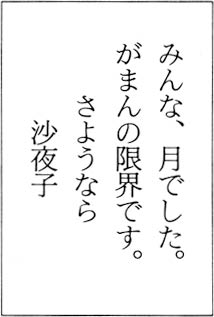

| 皆月 (講談社文庫) | |
| 花村萬月 | |
| (2000) | |
皆月
花村萬月
受話器をとると、鼻にかかった気どった声がした。
『ああ、義兄さん。女房いる？』
「女房？」
『そう。女房』
「しかし、きみは独身だろう」
『いやだなあ、義兄さん。義兄さんの女房だよ』
ならば、姉さんと言え。私は台所の沙夜子に声をかけ、受話器を示した。沙夜子はエプロンでざっと手をぬぐい、カーペットの上に両膝をついた。アキラと小声でやりとりをはじめる。
溜息が洩れた。まったく馬鹿な男だ。しかし相手はヤクザ者。妻の弟とはいえ、気を遣う。
沙夜子はことさら声をおとして弟とやりとりをしている。やりとりを聴く気もないが、ときに、冗談じゃないわ！ といったきつい言葉がとどく。
気をとりなおして、ふたたび蒲鉾の板にむかう。三角刃の彫刻刀で細部を整える。馴れないことをはじめたので、彫刻刀に力を加える中指の腹が鈍く痛む。
それでも二時間めにして〈諏訪〉という苗字が浮き彫りになってきた。私は中指の腹を揉みながら、ちいさな満足感を覚えていた。
沙夜子がかたわらにやってきた。私は表札を沙夜子の眼前に突きだす。
「自分の苗字の画数を呪ったね」
得意そうに言うと、沙夜子の頰が幽かに痙攣した。私のちいさな創造のよろこびが、みじめに凋んでいく。
「あなた」
「......なんだ？」
「アキラに貯金のことなんか言ったらだめよ。そうでなくても、子供もいないし、ダンナはまじめに働いているのに、なんでこんなアパートにすんでいるんだ？ なんて怪しんでいるんだから」
私は暖昧に頷く。沙夜子はいくども首を左右にふった。神経症気味なしぐさだ。私はつとめて軽い調子で訊く。
「金の無心か？」
「遊ぶ金が欲しいのよ」
沙夜子は眉間に般若のような縦皺を刻んだ。
「あの子なら、一千万を、いえ、一億を一晩で遣ってみせるわ。それも、もっともくだらない遣い方で」
「博奕か」
「なんでもありよ。趣味はお金をばらまくことだから。とにかくわたしたちがコツコツと貯めてきたお金を、あんな極道者に齧られてたまるものですか」
齧られてたまるか、という口調には鬼気迫るものがあった。私は迎合して呟く。
「おまえはオシャレもしないで、がんばってきたもんなあ」
すると沙夜子は口をすぼめて、上目遣いで私を見た。
「あなたこそ。お酒もタバコもやらないで」
「浮気もしない」
「ばか。あたりまえでしょ」
沙夜子の頰に血のいろがもどってきた。私は蒲鉾板の削りかすをいいかげんにかたづけながら、思う。
真っ白になったときの沙夜子は、男の私でも顔をそむけるほどに、怖い。たぶんアキラも顔を真っ白にするのだろう。
荒れると、どうにも手がつけられない、といったことをきいたことがある。いままでの機嫌のよさが一転して、なにをするかわからなくなるらしい。
「なに、考えているの？」
「いや......」
「よくできたわ。その表札。ついでにあなたとわたしの名前も刻めばよかったのに」
「徳雄、沙夜子......かんべんしておくれ」
「恥ずかしいの？ アベックみたいで」
「ちがう。彫刻刀が切れないから、すごい力がいるんだ。もう、指が死んだよ」
沙夜子は微笑をうかべた。それは一見、やさしい笑いだが、その奥に妙に醒めたなにかが漂っている。四十にもなって、なにをしているの......といった軽蔑がみてとれた。
おまえが、表札をつくれ、と言ったんだろう！ 私は心の中で声をあげる。だが、顔は追従の笑いで情けなく歪んでいることだろう。
「お風呂。はいっちゃって」
「一緒にはいろう」
「だめ」
「いいじゃないか」
「筒抜けよ、廊下に」
「静かに入ればいい」
沙夜子は顔をそむけた。その表情からは露骨な嫌悪のようなものが読みとれ、私は狼狽した。沙夜子は私の狼狽に気づいたのか、迎合の口調で言った。
「すぐ、あれこれ悪戯をするでしょう」
「しない。絶対にしない」
沙夜子は頰に手をやって思案し、三度頷いた。膝に手をつき、立ちあがり、私をうながす。
先に全裸になった私は、服を脱ぐ沙夜子を見守りながら考えた。沙夜子のしぐさについてだ。
沙夜子は一度頷けばいいときに何度も頷く。首を左右にふれば、薬屋の店先の人形のように小刻みに揺れてとまらない。
「なにを見てるの？」
「いいスタイルだなあ......って」
「そう。スタイルには自信があるわ。三十すぎには見えないでしょう」
得意そうに胸を突きだす。私は手をのばす。色素のうすい、どちらかといえばあまり存在感のない淡い乳首をつまむ。
「赤ちゃん、できたら、スタイル、くずれちゃうわよね」
「赤ん坊なんて、どうでもいい」
沙夜子の唇が笑いのかたちに歪む。
「どうせ、わたしはできない軀よ」
バスマットの上の沙夜子の足先が、苛立たしげにリズムを刻む。私は沙夜子の貧乏揺すりから顔をそむけ、乳房にのばしていた手をひっこめる。
いっしょに浴槽に軀を沈めると、湯が派手にあふれ、排水孔で渦巻きとなる。
「贅沢だな」
「湯気がすごい」
「寒波がきているらしい。朝方は冷えるぞ」
私は浴槽のなかで沙夜子を横抱きにして、大きく吐息をつく。沙夜子は眼をとじてじっとしている。
そういえば、最近、くちづけをしなくなった。どちらが先に避けたのだろうか。あるとき私は、ひょっとしたら口臭がひどいのかもしれないと遠慮し、萎縮した。そんな記憶だけが残っている。
だが、思いかえしてみれば、沙夜子は私の口臭など一度だって指摘したことはない。沙夜子はおろか、誰からも指摘されたことはない。
「なあ、沙夜子。俺は口臭がするか？」
「なんのこと？」
「口臭だ」
「すこしはするわよ」
「そうか......」
「はあー、ってして」
「こうか？」
沙夜子の顔に息を吹きかける。沙夜子の鼻がわたしの息を吸いこんで、ふくらむ。
「嫌いじゃないの。あなたの匂い」
「どんな匂いだ？」
「そうね......お漬け物、かな。浅漬けの香りよ」
私はそっと顔を近づけ、唇をかさねる。沙夜子の唇は無気力にひらかれる。私は自分より体温の高いぬめっとした洞穴にそっと唾液をおくりこむ。
しばらく間があった。沙夜子が、貪るように私の唾液を吸った。唐突だった。瞳を見ひらき、喰いいるように私を凝視して、私を吸った。
唇をはなすと、首から力が抜けて折れ曲がるような虚脱感を覚えた。沙夜子は私の肌を掌でさすり、頰ずりする。
「ねえ」
耳朶を嚙むようにして、囁き声で求めてくる。私と沙夜子は、せまいポリバスのなかで、かろうじてひとつになる。
沙夜子はうすく眼をとじ、下唇を嚙み、積極的に湯表を揺らし、軽く果てると、私の首に両腕をまわして呟く。
「お風呂場ですると、別れるっていう言い伝えがあるのよ」
「誰がそんなことを言った？」
「言い伝え」
私は沙夜子にそんなことを囁いた過去の男の影を感じ、不機嫌になった。沙夜子は私の気持ちなどおかまいなしに、ふたたび蛇のように身をくねらせはじめた。
沙夜子は、私の初めての女だ。私は三十三歳のときに二十四歳の沙夜子と結婚した。私はそれまで女の軀を知らなかった。橋梁設計一筋に生きてきた。
いわば橋オタクである。パーソナルコンピュータの計算速度の遅さを呪いながら、橋梁の複雑な力学的計算に夢中になっているうちに、女性と知り合う機会を失った。
というか、ＣＡＤを駆使して、ディスプレイに浮かびあがる橋の姿にうっとりしているほうが性にあっていた。仕事は趣味と実益をかねていたし、私はひどい対人恐怖症だったのだ。
だが、周囲の年寄りは、そんな私を仕事一筋の理想的かつ人畜無害な男であるとみていた節がある。二十代も後半になると、仲人が趣味のお節介な婆さんが私のまわりをうろうろするようになった。
気弱な私は、断りきれず、いくどか見合いをした。私はたぶん、遊ぶには不適当な男だが、結婚相手としては好ましく思われるタイプなのだろう、相手方の女性のほとんどは、私を気にいってくれた。しかし、私はいつだって臆してしまった。
しかし、沙夜子と見合いをしたときは、ちがった。拗ねたような顔をして私を見ようとしない沙夜子に、私は発情したのだ。欲情した。このひとを抱いてみたい。そんな直截的な衝動が突きあげてきた。
それから七年。子供はできなかったが、私たちはそれなりにうまくやってきた。沙夜子の神経質なところも、十歳近い年齢差でうまく吸収してきた。
なにも問題はない。いつかは一戸建てを、という沙夜子の望みで、贅沢をせず、こんなボロアパートにすんで、ひたすら貯蓄に励んだ。
つましい暮らしだが、悪くない。たとえば、私の仕事と道楽に関わってくる自宅用のパーソナルコンピュータは、ペンティアム・プロをデュアルで搭載した最先端のもので、ハードディスクは二ギガバイトのものを三台用いてストライプセットに設定し、メインメモリは百二十八メガバイトという、パーソナルの域をはるかに超えたものだ。
いまのところペンティアムのもつ同時並行処理を生かすソフトがあまりないが、将来性について説明したところ、沙夜子は黙って百五十万の金を私にわたした。
いつだって沙夜子は、私が心底必要とし、欲しがっているものに対しては、一切よけいな口をさしはさまず、淡々と対処した。
だから、このボロアパートの一室には、パソコンに詳しい者が見たら眼を剝くようなハードが鎮座している。
そういったこと以外では、沙夜子は堅実だった。ローンはできうる限り最小限にしたいわ、と呟きながら淡々と貯蓄した。バブルの時期は我関せずといった態度でまきこまれなかった。
「ああ......徳雄......きつい......」
沙夜子は切実になった。私の肩口を嚙んで、洩れる喘ぎを抑えこむ。上下動が激しくなり、湯表は三角錐のかたちで波立ち、タイルにあふれたお湯が跳ねる。
私といっしょになる前に、沙夜子は幾人の男に身をまかせたのだろう。そのことを思うと、嫉妬を抑えきれない。だが、嫉妬の対象がはっきりせず、苛立ちだけが残る。
沙夜子の指先が私の脊髄の突起を探っていく。沙夜子の糸切歯が私の肩を傷つけていく。
初めから、この烈しさだった。初めてのときから頂点間近で私に歯をたて、幽かに血を滲ませた。
沙夜子の囁きはあやふやになって、母音が中心の呻きになっていく。女とは思えない力で押しつけ、かろうじて訴える。
「いっしょに......」
沙夜子は自分の頂点と同時に炸裂することを求め、半眼になった瞳は、完全に反転して白眼をむいている。
私は搾りとられるような収縮に耐え、タイミングをはかる。沙夜子は私の腰に両足をまわし、きつく締めあげ、反りかえった。
反りかえりきったところで、激しく私に軀をぶつけてきた。その瞬間、初めて私は動きらしい動きをとった。突きあげ、炸裂させる。同時に廊下に声が伝わらぬよう、沙夜子の口を掌できつく押さえる。
＊
沙夜子は片膝をたて、後始末をしている。指先が吞みこまれ、かきだす。沙夜子は私の視線に気づくと、鼻梁に威嚇する猫のような皺をよせ、
「見ないでよ」
と言った。シャワーで完全に私の名残を洗い流すと、全身を石鹼で泡だてる。私は浴槽の縁に両腕をのせ、そこに顎をおいて軀を洗う沙夜子を見つめている。
ほんとうにきれいな軀だ。華奢な腰つきなどを凝視していると、ふたたび私のなかで疼くものがある。おそらくは、不妊とひきかえに花ひらいた過剰に性的な肉体だ。
目頭を揉んで、衝動を抑えこむ。沙夜子に傷つけられた肩口にそっと手をのばす。中指の先が、沙夜子の糸切歯で穿たれた幽かなくぼみを感知する。
騒ぐほどの傷ではないのだ。しかし、確実に血が滲む。このあたりの沙夜子の力加減には、脱帽する。
「ねえ、あなた」
「うん？」
「お風呂からあがったら、表札」
「明日でいいじゃないか」
「だめよ。郵便屋さんに叱られたんだから」
「それは聞いた」
「うまく彫れたわよ。誰も蒲鉾の板だとは思わない」
私は失笑する。沙夜子は振り向いて、遠い眼差しをする。
「新居を建てたときも、この表札をもっていきましょうね」
私は曖昧に、ああ......と返事をする。追い焚きのスイッチに手をのばし、ぬるめの湯に活をいれる。
九時すぎに眼をさました。台所から沙夜子が朝食の支度をする気配が伝わってくる。先ほど沙夜子がファンヒーターのスイッチをいれていったが、天井にむかって吐く息はまだ白い。私は布団のなかで軀をすくめて、窓から射しこむ澄んだ朝の光を見つめていた。
沙夜子がエプロンで手を拭きながら、私の傍らにかしこまって座った。私は傷ひとつない沙夜子の滑らかな膝小僧に視線をやり、ふたたび朝の光に顔をむける。
「なにを見ているの？」
「うん。光が透明だなあと思って。あふれんばかりの光だが、夏のような強さはないし、押しつけがましさもない」
「あなたって、けっこう詩人なのよね」
私は失笑して、そっと沙夜子の膝頭に手をのばす。のという字を描くように指先を動かすと、沙夜子はあの独特の威嚇する猫のような顔をみせた。
「素足だ。寒くないのか？」
「うん」
どちらともとれる返事をして、沙夜子は射しこむ光に視線をやった。私は腹這いになり、畳のうえに転がっているリモコンに手をのばした。テレビのスイッチをいれる。
ＮＨＫの日曜討論だ。念仏のような口調で規制緩和云々と喋る鷲鼻の老人の顔を一瞥して仰向けになり、首をねじ曲げ、沙夜子の膝頭に視線をもどす。ふたたび指先で触れる。
「あなた」
「なに」
「起こしてあげる」
なにを言いだすのか。私が怪訝な眼差しで見つめると、沙夜子がいきなり布団を剝いだ。冷気が押し寄せ、私はあわてて胎児のように軀を丸くしようとした。
沙夜子の手が私のパジャマにかかった。私は丸くしかけた体を硬くした。膝頭のあたりまでパジャマが脱がされていた。さらに沙夜子の手が私の下着にかかった。
沙夜子がこんな悪ふざけをするのはめずらしい。私はそれにのることにした。いちおう逆らって、身悶えなどしてみる。だが、その途中で沙夜子の真剣な眼差しに気づいた。
下半身を露にされた。悪ふざけの気分はどこかに消えてしまった。微妙な緊張がのこった。剝きだしの下半身に鳥肌がたっている。なんともみじめな光景だ。
だが、沙夜子の表情には切迫と切実がただよっていて、私はなにも言葉を発することができなかった。
沙夜子が黙ってファンヒーターを私の下半身にむけた。熱風が私の皮膚にあたる。尖っていた私の肌がわずかにやわらいだ。沙夜子が私の触角に手をのばした。
「ねえ、脈打っている」
「......どうしたんだ？」
かすれ気味の声で問いかけると、沙夜子は頷いた。そして、無言で顔を寄せると私の腰を抱いた。
私は含まれた。沙夜子は左手で顔にかかる髪を押さえ、口唇を用いて奉仕しはじめた。私は自分の軀が敷き布団にどんどんめりこんで落ち込んでいくような錯覚を覚えた。
揺れる沙夜子の頭を茫然と見つめているうちに、迫りあがってきた。私はだらしなく身をよじった。気配を察した沙夜子は私を弄び、歯をたてた。私は下唇を嚙んでその痛みに耐える。
痛みがほぼ完全にひいていったころ、沙夜子はごくやさしく私の触角を含みなおした。一段落だ。そう思って気を許した瞬間に、私は爆ぜていた。
制禦不能の快感が脊椎を這い昇って、後頭部で炸裂した。抑えがきかずに大きな呻き声をあげてしまった私の口を、沙夜子があわててふさぐ。薄い壁一枚しかない隣家に視線をやる。
それから沙夜子は私から顔を隠すようにしてティッシュをつかみだし、口の中の私の白濁の処置をした。それはあまりにも性的な光景だった。私は天井をむいて、荒い息を整える努力をした。
こういう行為があることはもちろん知っていた。だが、こうされたのは初めてだった。沙夜子はその烈しさのわりに潔癖で、口唇の交わりを好まなかったのだ。
私が求めると、いつだって沙夜子は無表情に拒絶したものだ。そのときの視線や態度にはなんともいえない冷たさが滲むようにあらわれていて、私はその強烈な軽蔑の気配に臆してしまったのだ。
やがて私はあきらめた。それがなくとも沙夜子との夫婦生活は充分に充実していたからだ。ところがいま、沙夜子は自らその行為を私に行い、ひと息ついて乱れた髪を意味もなくいじつている。
いまだかつてなかったできごとに、現実感がなかった。自分の願望や欲望がそのままあらわれた夢を見ているかのような気分だったが、乱れた呼吸は夢ではなかった。
沙夜子が顔を私にもどした。私の触角がまだ男の状態であることを確認すると、私を睨みつけた。
「眼を瞑って」
「眼......」
「きつく！」
私はあわてて眼を閉じた。沙夜子の重みがのしかかった。私は沙夜子の熱に吞みこまれて、ふたたび雄々しくなった。
そっと眼を開く。沙夜子が着衣のまま、私の上で控えめに躍っている。私は沙夜子の腰に手をのばし、密着をさらに強固なものにした。
そして、気づいた。沙夜子の目尻から、一筋の涙がこぼれ落ちて頰を濡らしていることに。沙夜子は私の視線に気づくと動作をやすめ、手の甲で頰を拭った。
それから体を前に倒して私にぴったりと重なって頰ずりをしてきた。触れあった頰には、やはり濡れた感触があった。涙......。私はふたたび現実感を喪った。
＊
息を整えて沙夜子が離れた。手早く私の軀の後始末をしてくれた。私は虚脱しきってぼんやりと沙夜子を見つめた。沙夜子の細い首にくっきりと浮かびあがった血管は、その激しい運動を物語っていた。
なに？ そう沙夜子の口が動いた。私はなんでもないと微笑した。沙夜子は膝をつくと全裸の私の上にそっと毛布と掛け布団をかけた。首のところから冷気が入りこまないように丹念に毛布を押しこんでくれた。
即座に私は微睡んだ。
玄関先でなにやらやりとりの気配がする。どうやら新聞の集金らしい。ご苦労様という沙夜子の声を夢うつつで聴きながら、ふたたび眠りにおちた。
沙夜子が中断していた食事の用意をはじめた。その物音が鼓膜を幽かに擽った。私は自分が徐々に覚醒していくのを他人事のように意識していた。
布団から出るころには、部屋のなかはすっかり暖まっていた。私はダイニングテーブルで朝刊を漠然と眺めた。その前に次々と料理が並んでいく。
結婚当初、沙夜子は料理があまり上手ではなかった。だが、一生懸命に頑張っていることは私にもわかった。そのせいか、調理の腕はそれなりに上達していった。
それを褒められるのがうれしいらしく、私が感嘆するたびにテーブル上の料理の数が増えていった。
だが、いまではそれも当たり前になってしまい、私は無感動にそれを食い散らし、沙夜子はノルマを果たすかのように一回の食事にはやや過剰な品数の料理をテーブルに並べる。
「なんだか味が薄いなあ」
「味噌汁？ あなたが薄くしろって言ったから」
私はそんなことを言った記憶がなかった。沙夜子の料理の欠点は、そのときの気分が反映するのか、味が一定していないことだ。しかし言い合いをする気にはなれないからいいかげんに頷いた。
「血圧のことも考えないとならない歳だからなあ......」
迎合して嘆息してみせる。沙夜子は唇の端に一瞬薄笑いをうかべると、首を居間のテレビにむけた。私もぼんやりとその視線を追った。
画面ではフライパンから派手に炎があがっていた。若い女の子に料理をさせて、それがうまくいかない様子をみんなで笑うという趣向の番組だ。
私はそのあまりにもひどい調理ぶりに苦笑いしたが、沙夜子の瞳には軽蔑も笑いもなかった。私は唐突に居たたまれない気分を覚え、薄いと文句をつけた味噌汁の椀に手をのばした。
朝食兼昼食を食べおえて、私は身支度した。食器を片づける手をとめて沙夜子が私を見つめている。
「なんだ？」
「どこへ行くの？」
「アキバ」
「秋葉原？」
「そう」
「わたしも行く」
私は曖昧に微笑した。パソコンに興味のない者が行っておもしろい場所ではない。だが沙夜子は、衣装ダンスにむかって服を選びはじめた。
その後ろ姿を見守りながら、私は憂鬱になった。これといった明確な理由があるわけではない。だが、なんとなく沙夜子と秋葉原を歩くことに抵抗を感じる。
おそらく沙夜子はパソコンショップを巡り歩いているうちに、疲労と退屈を訴えるだろう。私は自由に動けないことに苛立ちを覚え、不機嫌になる。結末がわかりきっているのだ。
沙夜子は時間をかけて服を選んだだけでなく、鏡台の前に座って丹念に化粧をはじめた。私はパソコン雑誌をひらいて時間を潰しながら、細かく貧乏揺すりをした。
「おまちどおさま」
「......綺麗だよ」
「ありがとう」
沙夜子が軀を寄せて私の腕をとった。私を引っぱって玄関にむかう。靴を履くためにはその手を離さなければならないが、沙夜子は口を尖らせて拗ねた。私はあやす口調で言う。
「無理だって。せまいんだから。さあ、先に靴を履いて」
「じゃあ、キスして」
私は戸惑った。今日の沙夜子は、いつもとまったく違う。私たちは光のとどかぬ玄関のせまい空間で、きついくちづけをかわした。だが、私の心の奥底の苛立ちは消えなかった。
アパートの廊下にでると、沙夜子はふたたび私の腕をとり、軀をねじ曲げて、あの手製の表札に手をのばした。指先で浮き彫りになった苗字に触れる。
「恰好いいわ。あなたって彫刻の才能があるのかもしれない」
「絵を描くのは得意だったが」
「それ、素敵。ねえ、あなたって無趣味だから、油絵なんてどう？」
「勘弁してくれ」
私にはパソコンがある。そんな言葉を吞みこんで苦笑する。私の気持ちは完全に萎えていた。沙夜子にむかってさりげなく言った。
「なあ、吉祥寺に目的地を変更しようか」
「なぜ？」
「吉祥寺にもパソコンショップはあるし、近いほうがいいだろう」
「......わたしは遠くに行きたかったんだけれどな」
「だが、もう、二時もすぎたし、吉祥寺なら歩いていけるし」
沙夜子は私の腕に絡ませていた腕をそっと離した。後ろめたくなったので、沙夜子の顔色を窺った。色づいていた頰が心なしかくすんでみえた。
私の視線に気づくと、沙夜子は淡々とした微笑をかえしてきた。私はなんとなく胸をなでおろした。いつもならば、言い争い、いや沙夜子からの一方的な糾弾にあう状況だ。しかし沙夜子に尖った気配がなかったので、ホッとした。
西高東低の典型的な冬型の気圧配置だ。北西からの風が冷たく底冷えするが、空はまさに抜けるような青空だ。
沙夜子は私の斜め後ろにしたがって歩いている。声をかけると返事をするが、自分からはなにも喋ろうとはしない。私は沙夜子に対するすまないという気持ちと、なんともいえない苛立ちをもてあました。
やがて、すまなさよりも、苛立ちのほうが強くなってきた。だが、私はそれを圧し隠してひたすら低姿勢に終始する。それが私と沙夜子の関係の基本にあるものであり、そうしてさえいれば波風を立てずにすませることができるからだ。
「見事に晴れわたっているな」
「ほんと」
「井の頭公園を抜けていこうか」
「ええ」
それで、会話が途切れた。私は歩く速度を調節して斜め後ろの沙夜子にペースをあわせる。苛立ちはさらに増しているが、それをじっと抑えこむ。
ふと、視線を感じた。沙夜子が私の横顔を凝視していた。私は立ちどまり、沙夜子に顔をむけた。沙夜子が微笑みかえした。影が薄かった。力のない微笑だった。
私は顔をそむけた。沙夜子の笑顔は、冬の光のように透明で、弱々しかった。
今朝、私たちはあれほど烈しく愛しあったのに、いまは微妙に距離をおいて北からの風に煽られながらうつむき加減で歩いている。私は得体のしれない罪悪感を覚え、そっと沙夜子の手を握った。
その細く頼りない指先だけでなく、掌全体まで冷えきっていた。冷たかった。きつく握っているのだが、沙夜子の手はあたたまらず、逆に私の手から体温が抜けていく。私はちいさな声で名を呼んだ。
「沙夜子」
「なに」
「なんでもない」
私は握りしめた沙夜子の手を自分のコートのポケットに誘導した。沙夜子が軀を寄せてきた。なにかおいしいものでも食べて、それから映画でも観ようと思った。
今朝、私を会社に送りだすとき、沙夜子は『今夜はおでんよ』と、微笑し、ちいさく手をふった。
それが妙に頭にこびりついていて、落ち着かない気分だ。特快が三鷹駅に着いた。私は、おでんに添えられた芥子の黄色を脳裏に描きながら、家路を急いだ。
夜八時すぎにアパートに戻った。はんぺんなどの魚肉を練りあわせた諸々が、おでんのだしに溶けて、ちょっと生臭いあの独特な匂いを廊下に漂わせているという思い込みは見事にはずれた。
あかりがついていなかった。いつもなら、ドアを開けば室内からファンヒーターで暖まった灯油臭い空気があふれだしてくるのだが、外とほぼ同じ冷たさの空気がドアの開閉にあわせて揺れただけだった。おでんの匂いなどかけらもない。
この雰囲気からすると、よほど早くから外出したのか。私は情況が吞みこめず、だが、なんともいえない不安を覚え、コートも脱がずに六畳間に立ちつくした。吐きだす息がやけに白かった。
「沙夜子」
返事が返ってこないことをほぼ確信しながらも、名を呼んだ。
「帰ったよ。いま、帰った」
台所、ダイニングルーム、私のコンピュータが鎮座する四畳半、風呂場、そしてトイレまで覗いた。
「おーい、おでんが煮えてないぞ」
冗談めかした口調で声をあげ、がっくり首を折る。立っているのが嫌になった。部屋がきれいに掃除されて、整っているのがたまらなかった。
胴震いした。沙夜子は弟のアキラ以外に身よりのない女だ。父母が死んだときの対応を憎んでいて、親戚付きあいも一切ない。
外出することも、あまり好きではなかった。他人と視線を合わせるのが苦手なの、と告白したことがある。沙夜子にとって、このアパートのなかだけが自在にふるまえる空間だったのだ。
室内の寒々とした雰囲気に、私は事件を予感した。
警察に捜索願をだそう......。動転しかかっている頭で、そんなことを考えた。
しかし、部屋がきれいに掃除されていることがひっかかる。なにか事件があったなら、室内が乱れているはずだ。ところがこのきれいさは、立つ鳥、跡を濁さず......だ。
それでも電話機にむかった。そして、脇のメモ帳に気づいた。

「みんな、月......？」
意味がわからず、私は呻くように呟いた。みんな、月。いったいどういうことか。私は電話の傍らに膝をついて、思いを巡らせた。
だが、どうしても意味がわからない。判然としない。曖昧模糊。五里霧中。そんな他人事のような四文字熟語が脳裏にうかんで、消えていった。
「がまんの限界......」
独白して、首をがっくりと折った。みんな月という意味不明の語句はともかく、がまんの限界という言葉は、私を激しく打ちのめしていた。
がまんの限界......私は沙夜子になにをがまんさせていたのだろうか。怒りと不安と、得体のしれない後悔のような気持ちが食道を這い昇ってきた。胃がチクチクと痛んだ。
私は発作的に一一〇番をダイヤルした。受話器の先の係員が、いつどこでなにがおきたのかを整理して喋るようにうながす。私はひとことも口をきかずに受話器をおいた。
すべて、おまえの望むままにしてきたではないか。家などどうでもよかったが、おまえが欲しいと切実に迫るので、酒もタバコもやめた。
たまには旅行もしたかったが、おまえの望みのためにこらえてきた。馬券も買ったことがない。もちろん、女も。がまんしたのは、私のほうだ！
憤りの声をあげそうになって、気づいた。タンスの引き出しにとりつく。預金通帳も、カードも、いまあるはずの現金も、すべて消えていた。
会社ではつきあいの悪い変人と陰口をたたかれ、それを愛想笑いでごまかして耐えてきた。
会社は、建設会社としては一流だし、私の橋梁の力学的強度計算に関する能力は、信頼されていた。
だから、女房の尻に敷かれている計算馬鹿と嘲られているのを知りながら、ひたすらがんばってきた。すべては、おまえのため。沙夜子、おまえのためだったのだ。
私はうなだれた。数日前に預金が一千万を超えたのだ。沙夜子のよろこびかたは、いまにして思えば、少々常軌を逸していた。
そして、がまんの限界であるというメモを残して沙夜子は一千万といっしょに蒸発した。
整理すれば、そういうことになるわけだが、すると沙夜子は、預金が一千万を超えるまで耐えていたというのか。
「じゃあ、僕はなんだったんだよ？」
凍えた部屋にへたりこんで、頭を抱えた。吐きだす白い息をじっと見つめる。
＊
ファンヒーターの灯油がなくなり、ピーッと警告音が鳴った。私は顔をあげ、立ちあがる。玄関先にある灯油のポリタンクに手をのばす。
その手は、結局ポリタンクの取っ手にはかからず、ドアノブを握っていた。玄関のドアをひらき、このあいだとりつけた蒲鉾板の表札を引き剝がす。
ふたつに割れた表札を握りしめ、玄関先で声をころして嗚咽した。新聞配達のカブの音と、雀たちが軒先で跳ねる音がとどいた。
「義兄さん。あえて言っておくけど、俺はヤクザじゃないんだよ。それは彫り物もあるし、あぶない橋もわたる。でも、どこからも盃をもらっていないきれいなカタギなんだ」
「そうか。悪かったな。口がすべった」
普段だったら、平身低頭しているところだが、いまの私に怖いものはない。完全な自暴自棄状態だからだ。
「会社に連絡は？」
「アキラ君に心配してもらうことない」
「義兄さん、そういうところは、律儀だからな」
「そういうこと。無断欠勤三日めだ」
「あら、それってエリートサラリーマンらしくないなあ」
なにが、あら、だ。このチンピラは、ときどきオカマのような口をきく。
「エリートサラリーマン？ そんな奴、どこにいる。女房の尻に敷かれていた計算馬鹿なら、ここにいるがな」
七年ぶりの酒は、よくまわる。それにしても、アキラがこんな高級な酒を飲んでいるとは意外だ。味がわかるのだろうか。
「なかなか高級な店じゃないか」
「まあね。一時間で十五万といったランク。新宿では高級店だな」
すると、ふたりで三十万の金がでていくというのか。くだらない。私は皮肉をこめて言う。
「ウエイターが跪くのは、薄気味悪い」
おかしくもないのに、ホステスどもが笑う。鬱陶しい。アキラもアキラだ。ほんのわずか前に金の無心の電話をかけてきたくせに、こんな店に私を誘うのだ。
「アキラ君。私にはとてもこんな店の飲み代を払う金はないぞ」
「やだなあ、義兄さん。誘ったのは、俺だよ。野暮なこと、言わないでよ」
「そうか。それで安心したよ。なにしろ沙夜子に全財産をもっていかれちまったからな」
「全財産？」
「そう。爪に火をともすようにして貯めた大枚一千万だ」
「一千万......？」
アキラの眼が光った。嫌な光だった。私は酔ったことを後悔した。よけいなことを口ばしってしまった。アキラは私の視線に気づいたのだろう、表情を柔らかいものにかえた。
「で、義兄さんはどうしたの？」
「なにが？」
「姉貴の失踪を、警察に届けた？」
届けた、と噓をついてやろうと思った。しかし、口が勝手に動く。
「警察に連絡して恥をさらすのか？ 冗談じゃない」
「そりゃ、そうだ。そうだよねえ。さすが、お義兄さん。賢明です」
「アキラ君。馬鹿にしているのか？」
「まさか！ 義兄さん、ちょっと僻みやすいんじゃない？」
アキラは、うんうん、と幾度も頷き、勝手に納得した。そのしぐさは、沙夜子に生き写しだった。私は眩暈がしそうな気分を味わった。
「ねえ、義兄さん。ものは相談だけど」
「アキラ君と相談すると、怖いことになりそうだ。遠慮しておくよ」
「また、そんなことを言う。俺は義兄さんの力になりたいんだよ」
ぬけぬけと。私は鼻で嗤う。アキラは肩をすくめた。ホステスに会計しろと言い、金色のカードを突きだす。
サインをすると、アキラは立ちあがった。まったく表情がなかった。あっさり私に背をむける。
「どこへ行く？」
「義兄さんとはいっしょに飲めないですよ。義兄さんは、俺をヤクザ者だと信じきっている」
そのとおりだよ。そう言ってやりたかった。だが、私はアキラを追った。
＊
連れこまれたのは、ソープランドだった。これも待合室というのだろうか。六畳ほどの洋間に応接セットがあり、テレビからは録画状態の悪いゴルフのビデオが流れている。
「誰もいれないように話をつけてあるから。姉さんがいなくなった情況をぜんぶ話してよ」
私は落ち着かない気分で、沙夜子の失踪について語った。アキラは巧みに合いの手をいれて、私をそらさない。その世馴れしたところが頼もしくも感じられ、胡散臭くもある。
「そうか。預金の額がひとくぎりついた直後とはいえ、具体的な動機とかは暖昧だよね」
「ああ......私にはわけがわからん」
私は思いきってアキラに沙夜子の残した置き手紙のことを語ってきかせた。
みんな、月。
がまんの限界。
アキラは私が勢いこんで話すのを黙ってきいていたが、一段落すると、控えめに口をはさんできた。
「なんなんだろう。みんな月......」
「わからん。まったく、わからない。私にはすべてがわからんよ」
「ところが義兄さん。俺は唯一の肉親だからね、みんな月ってのはともかく、なんとなく姉貴の気持ちがわかるんだ」
「わかるか？」
「なんとなくね。理屈じゃないけどね。がまんの限界。俺なんか、一時間ごとにがまんの限界だよ」
アキラは応接テーブルにおかれたサービスらしきタバコをくわえ、火をつけた。すぐに灰皿に叩きつける。
「湿気てやがる。水っぽい商売だけに、タバコまで水っぽい」
私は、叩きつけられた瞬間に火花のように飛びちった灰に臆してしまい、逃げ腰になった。アキラは淡々と自分のタバコに火をつけた。
「義兄さんは喫わないんだっけ？」
「ああ。結婚して、やめたんだ」
「太るっていうね」
「私の場合、七キロくらいかな」
「太った？」
「太った」
「俺もやめようかな」
「なぜ？」
「瘦せてて、貫禄ないでしょう」
「三十前だろう。太っているよりましだ」
「そうか。義兄さんの腹みたいな貫禄だったら、ちょっと不細工かな」
「仕方がないさ。四十歳だ」
「たまらないよね。四十になって女房に逃げられたら」
私はがっくり首を折る。まさに、そのとおりだ。私の唯一の女、沙夜子。
「まだ、惚れてる？」
「ああ。よくわからないが、依存している」
「とりかえしたい？」
アキラの〈とりかえしたい？〉というひとことには、あきらかに沙夜子を奪っていった男がいるという確信が含まれていた。私は胃がきゅっと縮むのに耐えながら、抑えた声で応えた。
「絶対に」
「わかった。兄貴。協力するよ」
「兄貴？」
「これからは義兄さんなんてよそよそしい呼び方は、やめ」
「兄貴......か」
「力になるよ」
私は感激してしまった。孤独感に打ちひしがれていたせいもあり、目頭が熱くなりそうだった。というのは噓だが、はじめてこの男に親しみを感じた。
「じゃあ、そういうことで、とりあえず今夜は汗を流そう。最高の女を用意するよ」
言いながら、アキラは立ちあがり、マネージャーらしきちょび髭の男を呼んだ。男は愛想のたっぷりつまった瞳で私とアキラを交互に見較べ、得意そうに頷いた。
「お客さん、酔ってる？」
「いや......久々の酒なんでよくまわったが、抜けるのも早い」
「アキラちゃん、べろべろに酔っぱらってきて、立たないときがあるのよ」
「常連なのか......」
「わたしが入浴料を立て替えることだってあるんだよ」
よく意味がわからないので、曖昧にふーんと返事しておく。
「お客さん、なんていうの？」
「諏訪徳雄」
「フルネームかます人ってめずらしい」
「そうか......」
「あたしは、由美と申します。よろしく」
「ああ、よろしく」
私は気もそぞろに、室内を見まわす。いちばん奥に充分に足を伸ばせるサイズの浴槽がある。洗い場とでもいうのだろうか、化粧タイルの敷きつめられたスペースの壁には銀色の巨大なマットが立てかけてある。真ん中が抉られた奇妙な椅子もある。
そのあたりまで観察したときだ。女はいきなり照明を暗くした。
「ソープなんて、どこもいっしょでしょう」
不機嫌そうに言った。私は彼女にまけない不機嫌な声をつくって言った。
「だが、はじめてなんだ」
「あ、そう」
由美は、真に受けていない。
「あたしが高校生だったころ、女とやるたびに童貞だってぬかしていた奴を知っているよ。うざったいからさ。さっさと服、脱いじゃってよ、お客さん」
由美は棘をたっぷり詰めこんで〈お客さん〉という言葉を強調し、できそこないのバレリーナの衣装のようなネグリジェを脱いだ。
私は彼女を見ないようにして、服を脱いだ。ふと顔をあげると、由美が私の背広をハンガーにかけている。
「ああ、すまん。そんなことまでさせて」
「......諏訪さん、ほんとうにはじめてなの？」
私は暖昧に笑い、ベッドに腰をおろす。そして気づいた。脱衣籠に放りこんだ下着は数日穿きつづけたもので、かなり汚れている。猛烈な恥ずかしさを覚えた。
同時に沙夜子がいないと、とたんに薄汚く不潔なオジサンに成り下がることを実感した。せめて、清潔には気を配ろう。そう決心した。
由美は尻をむけて、浴槽をかきまわしている。熱いのが好きか、ぬるめが好きか、早口で訊いてきた。私はぬるめと答える。
風呂場だから当然といえば当然なのだが、まるで東南アジアの雨期のような湿気だ。黴臭いとはいわないが、それに近い微妙な匂いがする。
座っているベッドも、真新しいバスタオルが敷かれているにもかかわらず、じっとりしている。そっと探って、指先はビニールの感触をとらえた。
なるほど。濡れてもいいように、マットがビニール張りになっているのだ。私はビニールの感触を確かめながら、風呂の温度を調節している由美の後ろ姿を観察する。
まだ二十歳そこそこだろう。骨盤が誇らしげに張っている。短いネグリジェを着ていたときは小柄に見えたが、全裸の後ろ姿には奔放さがある。
沙夜子は骨盤がちいさかった。私は沙夜子以外の女を知らないので、あまり偉そうなことはいえないが、ふと、少年を抱いているかのような幻想にとらわれることがあった。
雑誌などで見るヌードの女たちは、そのほとんどが由美のような軀つきをしていた。おそらくは、彼女のような西洋風の軀つきのほうが市場の要求にあうのだろう。
「なに、見ているの？」
「うん。風呂場とベッドのあいだに間仕切りがない部屋もめずらしいなあって」
由美は失笑した。スポンジにボディソープを染みこませながら、投げ遣りに言う。
「だって、みんなやりにくるんだよ」
「そうか」
「合理的って言うの？ それよ」
呟いて、手にしたスポンジを凝視する。
「諏訪さん、のどかだから、手順をまちがえちゃったよ。早くお風呂にはいってよ」
私は言われたとおり浴槽に軀を沈めた。
「よく、俺の名前を覚えているな」
「あたし、お客さんの名前は覚えるよ。いちど聞いたら、忘れない。電話番号も、覚える。覚えたら、遊びにきてって電話するから、言わないほうがいいと思うけどね」
「......嫌われるかもしれんが、ここ数日風呂にはいってなかった」
「だめだよ、不潔なのは」
「そうだな」
「でて。とことん洗ったげる。そのかわり、ありきたりのサービスは抜きだよ」
言葉どおり、由美は私をとことん洗いあげた。肛門にまで指先がのびたときは、逃げ腰になったが、由美は母のように私を叱った。
叱られた私は、ようやくリラックスすることができて、素直に身をまかせた。
「元気になってきた」
「うん」
「すごい。膨脹率が高い」
この子はプロだな、と思った。お世辞でも気分がいい。自信が湧いてくる。
「流すね」
「うん」
「けっこう、垢がでた」
「そうだな。すまん」
「噓だよ。あまり汚れてなかった。準備するから、お風呂にはいってて」
ふたたび浴槽に軀を沈めると、由美は壁に立てかけてあった銀のマットを洗い場に敷き、お湯をかけて暖めだした。
私は由美に言われるままにマットに横になった。由美はぬるぬるのローションをのばして、奇妙なサービスをはじめた。
驚いたのは、由美がまったく私に体重をかけないことだ。たとえば沙夜子が私の上にきたときは、完全に身をまかせきって、その体重をかけてきたものだ。
しかし由美は、両手足をつっぱって軀を支え、まるで空気のようだ。陰毛と乳房だけが私を擽っていく。
「いれてみる？」
問いかけて、返事をまたずに由美は私をまたいだ。
「自信あるんだ。壺いれ三分でイカせてみせる」
にっこり笑って、腰をつかう。あん、あん、あん......わざとらしい呻き声をあげて、私の上で踊る。その動きがかなり烈しいので、ぬるぬるのマットの上で私はかろうじてバランスを保つ。
「いきそう......？」
「いや......まあ」
由美は小首をかしげ、ふたたび暴れだした。
「どう？」
「すごい」
「でも、だめみたいねえ」
「ああ。このマットは、苦手だ」
「──ベッドにいこうか」
私は頷く。由美は額の汗を手の甲でこすってから、私をはずした。そして、休むまもなく私の軀のローションを洗い流しはじめた。たいへんな重労働だ。
「ベッドにいて」
私は軀を拭いてもらい、ベッドに腰をおろした。由美は自分の軀を流している。表情が不機嫌そうに見えるのは、唇がへの字のかたちに曲がっているからだが、けっして不機嫌なわけではないようだ。
どうやら、生まれつきらしい。ふつうにしていても、唇が微妙にへの字形になっているのだ。それに気づくと、なんともいえない愛しさを覚えた。由美は人気があるはずだ。なんだか、妹のように思える。
私の気持ちが伝わったのだろうか。ベッドではけっこう親密な雰囲気だ。私は性的に自信がないが、由美は巧みに私をリードする。
やがて、することは沙夜子とおこなっていたことと大差ないことがわかってきた。萎縮する理由がなくなった。
「疲れるだろう。俺が上になるよ」
由美は素直に軀をいれかえた。私はやりすぎないように、しかし遠慮しすぎないように気をくばって動きはじめた。
五分ほど動いて、気づいた。由美は微妙にくちづけを避けている。なるほど。軀は許しても、唇は許さないというわけか。
愛しさがつのった。だから、そっと頭を撫でてやった。
由美は瞳を見ひらいて私を凝視した。なにか気のきいたことを言おうと思ったのだが、言葉がでなかった。かわりに、頷いた。ふかく頷いてやった。
「あたしのどこがいちばんきれい？」
いきなり、尋ねてきた。
「唇だ。拗ねているようなかたちをしていて、とても可愛い」
「そんなこと、誰も言わないよ」
「おまえを贔屓にしている男は、口にしなくたって、みんな、そう思っているよ」
「ちくしょう」
「どうした？」
「本気汁がでてきたよ」
「なんだ？」
「なんでもない。動いてよ」
「ああ」
私は動作を再開した。由美は密着をうながした。私は彼女に肌をぴったり押しつけた。動きながら、頰ずりした。由美の頰がかすかに動いた。由美からくちづけしてきた。
密着したまま、きつく舌と舌を絡ませあった。由美は私の動作に細かい反応をかえしてきた。
やがて、切迫した。私の背を傷つけないように気をくばりながら、その指先に力をこめた。かすれた泣き声をあげた。小刻みに痙攣した。
ソープのあとは二丁目のゲイバーにつれていかれた。アキラはゲイたちにけっこう大切に扱われた。
しかし注意して観察すると、ゲイたちはアキラに気を許しているわけではないことがわかった。恐れているのだ。アキラを怖がっている。
グラスをあわせた。安物のグラスらしく、濁った音がした。アキラは水割りを啜った。唇を尖らせて、無様に吸った。
「兄貴、どうだった？」
「ああ......」
「なかなかの名器でしょう、由美は」
「そうだな」
「これで俺と兄貴は、本物の兄弟」
私は頷きながら苦笑する。私には、由美を介して兄弟になった男が無数にいるわけだ。
「いろいろ金を遣わせてしまったなあ。悪いことをした。しかし、この漬け物は、うまい」
アキラは、なにを言ってるんだこのオヤジは？ といった顔をした。それでも、それなりにあわせてきた。
「そうでしょう。ゲイバーのいいところは、肴がうまいってことなんですよ。オカマは料理も一生懸命だから。そこいらの女よりもよほど、ちゃんとやるから」
なるほど。欠落しているものをおぎなうための涙ぐましい努力が漬け物にもあらわれているというわけか。
「ところで、兄貴」
「なに？」
「これから、どうするの？」
「......もう、働く気はない」
「収入は？」
「ない」
「あっさりしてるね」
私はカウンターに両肘をつく。光の関係からか、眼の下の水割りは、黄金色をしている。私は水割りにボトルのウイスキーをつぎたした。
「姉貴を捜すのには、それなりに金がいるよ」
「そうだな」
「俺にまかせてくれる？」
「ああ」
「ああって、オッケーなの？」
「まかせる」
アキラは意外そうな顔をした。私は水割りに口をつける。アルコールが未練がましく舌にまとわりつく。薄まっているので刺さるほどの威力はない。私はピッチをあげる。
「まかせるって、兄貴。俺はアウトローだよ」
「アキラ君がまかせろって言ったんだろう」
「それは、そうだけど......」
私はとびきりの笑顔をむける。アキラは戸惑い、迎合して笑いかえす。
「ひょっとして兄貴って、かなりのタマだったりして」
私は返事をかえすのが億劫なので、笑顔をたもつ。せりあがってくる溜息を吞みこむ。
私は由美で射精できなかった。
十分ほどはそれなりに動作をつづけた。余裕があった。しかし、兆しがまったくないことに気づいて、焦りがおきた。
由美は女を剝きだしにして、乱れた。商売を忘れていた。私もそれに応えようとした。
だが、切迫して、せりあがってくるものがなかった。私に終局は訪れず、腰を中心に情けない懈さが拡がっていった。
由美は私が硬度を失いつつあるのに気づき、陶酔から醒めた。『あたしじゃ、だめ？』そう、問いかけてきた。
私が顔をそむけると、由美は私の腰を中心に浮かびあがった疲労の汗を掌でいじった。吐息をつくと『あたしじゃ、だめなんだ』と微笑した。泣きそうな笑顔に見えた。
それから『ひとり芝居......ちがうな。ひとり相撲だったわ』と独白して、私を見つめた。硬度を失った私は、だらしなく彼女から追いだされていた。
「兄貴......どうしたのよ？」
「なんでもない」
「なんか思いつめてたよ」
「相性があるだろう」
「まあね。あるだろうね」
私は首を左右にふる。目頭を押さえる。
狂おしいまでに沙夜子の性器を欲していた。
「兄貴、泣き上戸かよ」
私は顔をあげる。立ちあがる。店をでる。
路上には、値踏みする眼差しの男たちがたたずんでいた。二丁目界隈が初めての私は完全に方向感覚を喪っていた。
酔いのせいか、強烈な喉の渇きを覚えた。ようやく見つけたちいさなコンビニエンスストアーらしき店でスポーツドリンクでも買おうと店内に一歩踏みいれて、愕然とした。
無数のホモ雑誌に、男根を模した張形。私は顔をそむけ、店からでた。うつむいて路地を行く。
このたとえようもない不安感はどこからくるのか。アキラにいわせれば、私はホモに好まれるタイプらしい。
いままでホモに対して漠然と思っていた。好きな道なら、ご自由に。しかし、実際に値踏みの視線にさらされると、狼狽えてしまうものだ。
まてよ。冷静に考えてみると、私は侵入者ではないか。ゲイの聖域にまぎれこんで勝手に狼狽えているのだ。これは私がでていくべきなのだ。それが筋だ。
それにしても、ゲイたちにすんなりと溶けこんでいるアキラは、同性愛の気があるのかもしれない。もう、二度と顔を見たくない。
ソープの女、由美も許せない。俺は沙夜子以外の女では不可能なのだ。しかたないことではないか。それを怨めしそうな顔をしやがって。
いつのまにか公園の前に立っていた。煤けたような緑の匂いを嗅いだ。酔いにこめかみが烈しく脈うっていた。
これほど酔っていても、ちゃんと公園の公衆便所で用を足すのだから、私には公衆便所、いや、公衆道徳が染みついている。まったくみじめな小心者である。
公衆便所は、考えていたよりも清潔ではあったが、饐えて発酵したアンモニア臭は隠しようがない。
七年ぶりのアルコールは、私の陰茎を見苦しく肥大させていた。血行がよくなっているのだろう。そのせいで勃起しているわけではないが、膨脹している。
ふう......と、息をついて放尿した。ゲイバーでは呷るように飲んだ。小便は相当アルコール臭いはずだが、匂いを感じたのは便所に足を踏みいれたときだけで、もう嗅覚は麻痺してしまった。
隣で若い男が放尿しているのに気づいたのは、自分がほぼ放尿をおえたときだった。
男は私を覗きこんでいた。私の性器を凝視していた。
「うーん、ビッグ。グレートサイズね」
「キミはなにを見ているんだ？」
「ナニよ。おじさまのナニ」
鳥肌が立つのと同時に血の気がひいていくのを感じた。男は放尿しているのではなかった。私の性器を盗み見ながら自慰をしていたのだ。私は男が勃起した自分自身をしごくのを呆然と見つめた。
「ねえ」
と、男が声をかけてきた。媚びを含んでいた。勃起した男根をしごきながら、私と向きあった。
「おじさまのを、ほ・し・い」
男はトイレの床に片膝をつき、私の腰に顔を寄せた。酔って反応の鈍い私は、まだ自分の性器をしまっていなかった。アルコールのせいで膨脹していた私の性器は、恐怖にみじめに凋んでいった。
男は毛のなかに隠れてしまいそうな私を吸った。男の右手はさらに烈しく自分の性器をこすりあげている。さらに男の左手がズボンの上からではあるが、私の肛門周辺をまさぐりはじめた。
「やめてくれ！」
叫ぶのと同時に、膝で男を蹴ってしまっていた。
男は便所の床に横転した。
なぜ？ といった戸惑いの表情がうかんでいた。男は自分の性器をしまうと、ゆっくり立ちあがった。
「ゲイを馬鹿にしているね」
「そんなつもりはない。ただ、私は......」
「おじさんのオシッコは、しょっぱかったよ」
「すまん。だが、無茶だ。あまりのことに、対処できなかったんだ」
「ノンケが、こんなところでうろちょろするなよ」
「公園じゃないか。公園」
そこまで言ったときに、男の拳が私の腹にめりこんでいた。私はトイレの床に昏倒した。食道をせりあがってくるものがあった。かろうじて吐き気を耐えた。
男は二十代なかばといったところだろう。鍛えぬかれた筋肉質の軀をしている。誰もがコートの襟を立てているときに、肌にぴったり密着したＴシャツ一枚だ。
腕組みして、筋肉を誇示し、黙って私を見おろしている。その瞳には、やり場のない怒りがつまっているのが見てとれた。迫害されている者がもつ、過剰な敵意だ。
トイレの床は濡れている。それが転がった私にじわじわと染みてきた。こんな理不尽なことがあっていいのか。しかし、この若者に暴力で勝てる自信はまったくない。
私は肘で這って逃げようとした。そこを蹴りあげられた。尻だった。尾骶骨が歪むような衝撃が、脊椎を伝って、後頭部で炸裂した。
勝手に吸いついてきて、そこまでするか！
私は怒りに男をふりかえった。
そこを蹴りあげられた。
たしかに、靴墨と革の匂いを感じた。それはすぐに血の匂いにとってかわられた。
男が履いているのは、革製の作業用ブーツだった。爪先に金属がはいっている代物だ。そのブーツの爪先が、私の口の中に飛びこんできたのだ。
一瞬気を失ったのかもしれない。私は男の足をつかみ、口の中のブーツを引き抜いていた。必死だった。激痛に眩暈がした。
私は自分の口からあふれでた血溜まりに顔面をつっこんだ。
胃が逆流をはじめた。私は飲んだ酒を吐きもどした。その勢いに、折れた歯が吐瀉物といっしょに吐きだされていった。
私は破壊されてしまった。私は泣きたい。意識が遠くなっていく。
私を揺する者がいる。かろうじて眼をひらく。アキラだった。
「よかったよ。人中にあの革靴が命中してたら、兄貴は死んでたぜ」
「キミは一部始終を見ていたのか？」
「まあね。あの小僧、ブーツの先が兄貴の口の中にはまりこんじゃって抜けなくて、片足でケンケンしてやがるの」
頭痛がひどい。私はニヤニヤしているアキラから顔をそむけた。
なぜ、助けてくれなかった！ 喉まで出かかっている言葉を吞みこむ。そのかわりに、悔し涙が湧きあがってきた。私は声をたてずに泣いた。
アキラが舌打ちした。腰をかがめて、なにか拾い集めている。
「どうする？ 兄貴。ぜんぶで七本」
「......なにが？」
「折れた歯だよ。床に落ちているのは、これだけだよ。拾ってやった」
七本......。茫然とした。どうりで喋ると息が無様に洩れていくわけだ。そっと舌先でさぐった。上も下も、前歯は見事に欠落し、歯茎しか残っていなかった。
それと同時に、唇がひどく腫れあがっていることに気づいた。頭痛に、口の周辺の激痛が加わって、私は泣きながら、呻いた。
「立てる？」
私はかろうじてアキラの肩にすがりついて立ちあがった。救急車を呼んでくれ。そう訴えようとしたが、なぜか口が動かない。
「俺のヤサへ来る？ 一週間も寝てれば、動けるようになるよ」
私は思考能力を喪っていた。アキラにすがって荒い呼吸をしているだけだ。
新大久保方面だろうか。アキラは黙って私を支え、ひたすら歩く。アパートはもうすぐだという。無人の路地裏だ。
「すまないなあ......キミの服まで血まみれだ」
アキラはうるさそうに頷いた。
「なあ、アキラ君」
「なに？」
「俺は、ソープの彼女では射精できなかったんだ」
「そんな飲んでなかったよね」
「ああ。ちゃんと勃起はしたんだが......」
「そんなに姉貴が好きなんだ？」
「そうだ。沙夜子は俺の唯一の女だ。いままで、俺は沙夜子ひとりしか知らなかった」
「童貞で結婚したの？」
「そうだ。沙夜子が初めてだった」
「鬱陶しいね」
「なにが？」
「兄貴、けっこう鬱陶しいよ」
アキラは、私をかついだまま、立ち止まった。ポケットをあさり、訊いてきた。
「どうする？ これ」
アキラの手から私の手にわたったのは、アキラがひろいあつめた私の歯だった。
歯にはまだ歯茎の肉片がこびりついていた。
私は掌のなかの歯が七本あることを確認した。
それから、路面に思いきり叩きつけた。
私の歯は、からから乾いた音をたてて無人の交差点に散った。
アキラは飛びちった白い小片を眼で追うと、体勢を整え、私を支えなおした。
「ねえ、兄貴。じっくり姉貴をさがそう」
「そうだな」
「そのかわり、取りかえした金の半分は、手数料としていただくよ」
私はアキラの背で失笑した。ようやく笑うことができた。私はアキラに全体重をあずける。
鏡のなかに老人がいる。歯をうしなうと、これほど人相がかわるものなのだろうか。歯を蹴り折られて一週間たつが、いまだに新しい自分の顔に馴れることができない。
枕元の鏡を伏せ、腹這いから仰向けに体勢をかえる。西日が顔面を直撃した。カーテンを引けばいいのだが、起きあがるのがおっくうだ。
ときどき〈みんな月でした〉という沙夜子の言葉が脳裏にうかぶ。しかし私は意識してそれについて考えないように努めてきた。その結果、心にのこったのは微妙な諦念だった。
新大久保のアキラのマンションに世話になって一週間ほどたつ。賃貸だが、なかなかしっかりとしたつくりだ。家賃は二十万を超えるのではないか。
台所の方向から胡麻油の香りが漂ってくる。調理しているのは、アキラだ。たいしたものだ......皮肉まじりに口のなかでつぶやいて、眼をとじる。
西日が瞼をとおして網膜を擽る。瞼の裏側で拡大し、収縮する血の色を凝視する。眼をとじていても見える光景がある。それが、この血の色だ。
舌先でそっと歯茎をさぐる。だいぶ肉が盛りあがってきたが、折れた歯の根の空洞を埋めるまでには至っていない。だから私の歯茎には七つの曖昧な穴が穿たれている。
舌先で穴をいじりすぎたせいで、血が滲みだしたようだ。嫌悪と不安を覚え、ティッシュをつかみだす。
ティッシュの純白のうえに吐きだされた泡だつ緋色の唾液。血の色彩から立ち昇る錆びた鉄の匂い。
数日前、私は癇癪をおこし、ちぎれかけていた歯茎の肉を親指と中指でつまんで引きちぎった。
かなり出血した。その血を味わいながら、私は引きちぎった肉片を観察した。
肉片は血の色をうしなって、魚屋の店先のイカのように白かった。放置しておいたら、蠅がたかりそうな雰囲気だ。
爪を立てると弾力はないが意外に硬い。そのほかにとりたてて特徴はない。けっきょく私はその肉片を口に放りこんだ。いいかげんに奥歯で嚙んで、胃に送ってしまった。
そして、気づいたのだ。私はその間ずっと無意識のうちに血を味わっていた。血の酸味には習慣性がある。血の味には眩暈をおこすなにか、が隠されている。
大げさな表現をすれば、私は血を吸い、肉を喰らった。そのことにいささか不安を覚えているのだ。つまり、嗜好として定着してしまわないか......という不安だ。
事実、私はほとんど無意識のうちに歯のない歯茎を愉しんでいるのだ。そっと舌先でさぐると、その微妙な肉の表面の柔らかさと芯の硬さが性的だ。
さぐりはじめると、血が滲む。肉の裂けめに舌先が潜りこんだりすると、もう止まらない。
ただ、その行為には射精のような解放の瞬間がない。血はじわじわといつまでも滲み、肉は収縮するでもなく、ぼんやりと白痴のようにただ受けいれるだけだ。
だから昂ぶりの背後に激しい苛立ちを覚える。歯茎と舌の関係には、勃起不能な老人の性を想わす狂おしさが隠されているのだ。
そして、なによりも肉片を咀嚼して胃に送ってしまったことが不安だ。人肉嗜好。そんな言葉が脳裏をかすめる。だが、まあ、ほんの小片だ。みじめな切れ端だ。
「あれは、あくまでも、私の一部分だから所有権がある」
「なにが？」
「──アキラ君、いたのか」
「俺の部屋だからね」
それは、そうだ。厄介になっているのは私のほうだ。苦笑をむける。アキラはおざなりに笑いかえす。
「ちょっと早いけど、夕食だよ。今日は中華風のお粥をつくってみた」
「すまないなあ」
「気にしないで。料理は好きなんだ」
私は軀をおこし、湿った敷き布団のうえであぐらをかく。ザーサイのみじん切りがはいったお粥に、甘酢あんかけの半熟状態の卵焼き。どれもスプーンですくってほとんど嚙まずに食べられるものだ。
「失礼だが、料理が得意とは意外だったよ。味付けにも驚かされた。すごくうまい」
卵焼きのなかからは、ほぐした蟹の身があらわれた。お粥に散らしてある三つ葉の香りが心地よい。私が感嘆してみせると、アキラは失笑した。溜息まじりに言った。
「自分でもいやなんだけど、料理をしているときは、幸せだよ」
「......沙夜子は一生懸命やってくれたが、あまり料理が得意ではなかったな」
「兄貴もそう思う？ 姉貴と暮らしていたときは、俺が食事係だったんだよ。俺が姉貴を食わしてた。兄貴と結婚するっていうからさ、あわてて料理を教えたんだ。
落とし蓋っていうのがあるじゃない。魚なんかを煮るときに直接蓋するの。ところが姉貴は、真顔でタレのなかに豚肉を落とすのかって訊いたんだよ。そのレベルだからさ」
こみあげるものがあった。むりやり笑顔をつくって言った。
「落とし豚。沙夜子も自分で告白したよ。アキラ君があまり馬鹿にするから、大喧嘩したって」
私は笑顔を期待したのだが、アキラは投げ遣りにソファに腰をおろし、無表情につぶやいた。
「姉貴は、俺のことが嫌いなんだ」
取りなしようがない。私は黙ってお粥を口に運んだ。お粥はおいしい。だが、この陰気な男に見守られて食事するのは胃によくない。私は溜息をついた。
「まだ、食欲がない？」
「いや......」
「しかたないよな。人に殴られるってことは、こういうことだから。壊れちゃうんだよね。テレビドラマのようには立ちあがれない」
「私は殴られたんじゃない。蹴られたんだ」
「馬鹿じゃないの。いいかげんにしなよ。兄貴が壊されちゃったのは、そういう鬱陶しいところがあるからだよ。誰からも好かれない男、なんだよ」
「誰からも好かれない......」
「愛されているとでも思った？」
口のなかに嫌な唾が湧きあがってきた。誰からも好かれない。薄々自覚があったのだ。しかし、他人から指摘されると、たまらない。つらい。くるしい。アキラは私を見つめ、ソファから立ちあがった。
「じゃあ、俺は行くよ」
「......いつもいまごろでて行くね」
「まだ飲むには早いよ。仕事なんだ」
「私も連れていってくれないか」
「かまわないけど、まだ顔も腫れてるし、体調が完全にもどってからでいいよ」
「もう、こうしていることに耐えられないんだよ。金銭的にも迷惑をかけているし」
「気にしないで。処分したから」
「処分？」
「パソコン、電話、その他諸々」
「私の？」
「兄貴のパソコン」
「あ......」
「なにが、あ、だよ。ウィンドウズを立ちあげて、女房アイコンをクリックすると姉貴の居場所が表示されるとでもいうのかよ」
「......パソコンのこと、知っているんだ？」
「部屋にパソコンの雑誌があったじゃない。業者が引き取りにくるまで、暇つぶしで読んでたんだ。急拵え。でも、案外単純な機械なんだね。肩すかしだった。概念ていうの？ だいたい理解できた。しょせん、計算機。ソロバンだな」
私はうなずいた。この男の直観は正しい。
「アキラ君。私も連れていってくれ」
起きあがり、あわただしく身支度した。シャツのボタンをかけちがえた。アキラはタバコをくわえ、火をつけずに、フィルターを嚙んだ。
「落ち着きなよ、兄貴」
「私は、行進ができなかったんだ」
アキラは、なにを言いだすのだ？ といった表情で私を横目で見た。
「学校で行進するだろう。私は緊張して、行進ができなくなってしまうんだ。右足といっしょに右手が動いてしまう。左足といっしょに、左手が揃って......」
「器用なこと、するね。ふつうに歩くより、そっちのほうがよっぽど難しいじゃない」
「私は運動神経が鈍いからね。子供のころから、泣きたい気持ちばかり味わってきた」
「泣きたい気持ち、か。姉貴は、運動が得意だったよ。中学のときに、水泳で都大会の四位だったかな」
「知らなかったよ」
「おかしいよなあ。姉貴は、鈍い人は大嫌いって言ってたのに、なんで兄貴と結婚したのかな」
「──同情されたのかな」
「自分で言うなよ。馬鹿オヤジ」
アキラはくわえていたタバコに火をつけた。私は追従の笑いをうかべている自分に気づいた。
アキラに従って歌舞伎町にむかう。久々に歩いた。病気あがりのようにふわついて力がはいらない。やがて、脹脛に鈍い痛みと疲労を感じた。
外人娼婦がアキラに挨拶する。アキラは鷹揚にうなずいて、美人にだけ声をかける。私は歯のないことに恥ずかしさを覚え、口元を手で隠して訊いた。
「ところで、仕事はなにをするのかな」
「有機溶剤販売」
私はアキラの言葉を理解できなかった。アキラは私を横目で見て、注釈した。
「アンパン売りとも言う」
「アンパン売り......」
「つまり、シンナーだね」
「シンナー」
「ま、いまどきシンナーなんて扱ってないけどね。正確にはトルエンだな」
「トルエン......」
「どうしちゃったの、兄貴。鸚鵡じゃあるまいし」
「その、なんだ、そういったものを売るのは、犯罪だろう？」
「まあね。でも、麻薬取締法じゃなくて、劇物取締法だからね。捕まっても、たいしたことないんだ」
私に言葉はない。アキラは淡々と解説する。
「売るのは、小僧。俺は卸元なんだ。俺は仕入れたアンパンをＣ瓶に小分けさせてコインロッカーにいれておく。で、商売をはじめるぎりぎり直前になったら、こいつで指示をだす」
アキラは携帯電話を見せた。
「コインロッカーの鍵を隠した場所を連絡するのね。アンパンを売る末端の小僧どもは俺の顔を知らない。いちども会ったことがないんだから、当然だけどね」
アキラは声をかけてきた地廻りの頭を軽く小突いて、首を絞める真似をした。ふたりは絡みあったまま私に聴こえない声で、なにごとか素早くやりとりをした。アキラがなにやら指示している様子だ。アキラには二種類の子分がいるらしい。直属の子分と、アキラの顔を知らない小僧たちと。
地廻りが過剰な大声でこんどバッティングセンターで勝負しようとアキラに言い、ちらっと私を値踏みする眼差しで見て背をむけた。
私はそれだけで臆してしまった。小さく咳払いして、つぶやくように言う。
「私には、その、なんだ、アンパンを売る能力はないような気がするんだが......」
「まあ、そうだろうね。もっとも、兄貴がアンパンを買いにきたガキに『純トロだ。抜群のレモンだよ』なんて囁くところを見てみたい気もするけどね」
「まあ、よくわからないことだらけだけど、売人というのかな、そういった職業は、歯のない私には目立ちすぎるよ」
「うん。適材適所。じつは、コンピュータを扱える人をさがしているとこがあるんだ。そこへ連れてくよ」
救われた。肩から力が抜けた。アキラはひと呼吸おいて続けた。
「会計みたいなことをするのかな。とにかく、金の計算だよ」
「それなら、まかせてほしいな。私には、その職場にあったソフトをプログラミングする技術がある。役に立つよ」
「心強い。きっと、あっちもよろこぶよ」
私は、ふたたび咳払いした。
「ところで、いつごろから沙夜子を捜しにでかけるのかな？」
「あせらないで。金があるうちは全国の旅館やらホテルを渡り歩いてほとぼりを冷まそうとするはずだ。場所を特定するのは不可能だよ。新婚旅行気分というやつですか」
「新婚旅行......」
それは、沙夜子に連れがいるという前提に立ったものだ。私は胃のあたりがよじれるような感情をこらえた。
「兄貴はどこに行ったの？」
「新婚旅行か？ 行ってない。沙夜子が、そんなことにむだな金は遣いたくないと言ったから......」
「馬鹿だよなあ。兄貴は。女っていうものをわかってない。強引にキップを買って、ちょっとだけおいしいものを食べて二泊三日で帰ってくればいいんだよ」
「そうすればよかったかもしれない」
自分でもゾッとするような暗い声が洩れた。そうすればよかったかもしれない。過去形だ。あきらめに支配されている。
アキラは、そんな私を腰をかがめて下から覗きこんだ。わざとらしかった。唇の端には嗤いがうかんでいる。
「兄貴の気持ちはわかるよ。充分にわかる。痛いね。心が痛い。自意識ボロボロ？ すべて姉貴の言いなりになったあげく、鬱陶しいってケツむけられてさ。身からでた錆ってやつですか。ちょっと表現がちがうような気もするな。ま、ボクは高卒だからね。この程度。ひひひひ......」
アキラは私を指差して奇妙な笑い声をあげた。
連れて行かれたのは、ヤクザの事務所だった。区役所通りのはずれにある雑居ビルの三階だ。エレベーターは三階を素通りするようになっていて、階段をつかった。
階段は急でせまく、人がすれちがうことはほとんど不可能だ。鈍い私でも、これは有事の際に備えているのだということがわかる。
「ここの組員は、みんな毎日階段を登りおりしてるから、足腰しっかり、シェイプアップされてんのよ」
アキラは息も乱さずに冗談を言ったが、私は鼓動の激しくなった心臓あたりを押さえて、かろうじて愛想笑いをかえした。
三階のフロアも異様にせまく、さらにロッカーであるとかスチールデスクなどが雑然と放置されている。眼をあげると、監視カメラの青ざめたレンズに自分の顔が映っている。
「アキラ君、ここは、いわゆる抗争というやつをしているのかな？」
「いわゆる抗争はしてないけど、親分がいないの」
「いない？」
「刑務所。血の気の多い人でさ、子分にやらせればいいのに、自分で殺しちゃった」
「殺しちゃった......」
「そんなわけで、まあ、狙われてんのよ。看板と組員。戸賀沢組は金筋だからね。関東テキ屋の王道を歩いてきた組だから戸賀沢の名前をほしがってるとこがいっぱいあるの。戸賀沢の名前があれば、営業上強いからねえ」
「私はここでなにをするんだ？」
「やだなあ、青くならないでよ。会計みたいな仕事だよ。コンピュータ業務ですよ」
アキラは私の頭を小突き、インターホンを押した。さすがにムッとしたが、アキラの鋭い瞳で一瞥されて、うつむいてしまった。アキラは壁に寄りかかり、インターホンにむかって言った。
「俺だよ。アキラ」
「そちらの方は？」
「コンピュータの専門家だよ。橋を架けさせれば日本一」
「橋？」
「いいから、いいから。実子がほしいって言ってた人物なのよ」
しばらく間があって、頑丈なスチールドアがゆっくりとひらいた。私はまず噎せかえるようなタバコの匂いを嗅いだ。
戸賀沢組三代目実子、我孫子元春と名乗った男はアキラとおなじ歳恰好だった。なんで戸賀沢の実子が我孫子なのかよくわからないが、私は竹の皮を削いでつくった名刺を押し戴き、頭をさげた。
「ご挨拶が遅れまして。諏訪徳雄と申します」
以前勤めていた会社の名刺をだすわけにもいかない。身分を証明するものがないとひどく不安定な感じがする。我孫子はまだ腫れている私の顔を怪訝そうに見つめたが、なにも言わなかった。
アキラはかたわらで壁に寄りかかり、だらけた恰好でタバコを吸っている。我孫子は愛想のいい男で、私を応接室に案内した。
黒革のソファに腰をおろす。アキラもついてきて、応接机のうえのクリスタルの台座のついたガスライターを手にとり、火をつけ、弄んでいる。
「うちは何代か続いているテキ屋だから、おとなしく商売だけしていればオマンマが食えるんだけどねえ、まわりがあれこれちょっかいだしてくるんですよね」
「はあ......」
正直なところ、不安である。我孫子はそんな私の表情をみてとったのか、満面に笑みをうかべた。
「まあ、そうはいっても西とはちがうからね。水面下ではいろいろあるけど、露骨なドンパチはやりたくてもできない情況なんだ。どちらかというと経済戦争の様相を呈してるのね」
「そうですか......」
「そうなの。恰好いい言いかたをすれば、資本主義の論理に則って、あれこれ危ない橋を渡るってところかな。ところで、おとうさん」
我孫子は両手を組んで前かがみに身を乗りだし、私の顔を凝視した。私はなんとなく頰が引き攣れた。おとうさん、と呼ばれたのははじめてだ。
「おとうさん」
隣に座ったアキラが繰りかえし、わたしの頭をペタペタ叩きはじめた。
「おとーさーん」
「やめろよ、アキラ」
我孫子がとめてくれた。私は情けないやら、恐ろしいやらで、硬直して身を縮めている。
組員が一礼して茶をもってきた。私は呆然と茶碗から立ち昇る湯気を見つめた。
「ねえ、おとうさん。さっきから気になっていたんだけど、なんで歯がなくなっちゃったの？ 前歯、上も下も、ぜんぶないじゃない」
「はあ......」
私は喉にからむ痰をもてあました。息苦しい。言葉がでない。かわりにアキラが言った。
「おとうさん、ゲイに襲われて、蹴られちゃったんだ」
「ゲイに？」
「そう。ホモのマッチョ。一週間くらい前に二丁目の公園で作業ブーツみたいので蹴られてね、今日まで寝込んでたんだよ」
「アキラ、そのホモ、放ってあるの？」
「おとうさんはカタギだもん。カタをつけることなんて考えてないよ」
「おとうさん」
「はい」
「うちで働いてもらうということは、親子......いや家族ってことだから。俺が仇を討ってあげますよ」
意外な話の成りゆきに、私は狼狽した。
「いや、復讐なんてこれっぽっちも考えてませんから......その、ムダな、いや、私ごときのことでよけいな手間をとらせるというのも心苦しくありますからお気持ちだけ戴いて結構といいますか」
「兄貴、日本語喋れよ」
アキラはいつのまにか立ちあがっていた。私の背後に立ち、子供にするように頭を撫でた。さすがに私は腹立ちを覚え、ふりかえった。
そこにはなんとも邪気のない顔があった。アキラがうなずいた。深くうなずいた。私はその瞬間、すべてをまかせてしまおうと考えた。
「実子。兄貴はほんとうに復讐なんて好まない。そういう人じゃないんだ。ホモ野郎をさがしだしてヤキいれをするなんてことは、よけいなことだよ」
淡々とした口調でアキラが言った。我孫子は、そうか......と、つぶやいた。
「じゃあ、俺は行くよ。実子、兄貴をよろしく頼むわ」
我孫子は苦笑いをかえした。首を左右にふり、諭すように言った。
「アキラ。いつまでもアンパン売りでもないだろう。ちったあ考えろよ」
アキラはいいかげんに肩をすくめた。どうやらトルエンの商売は、この組とは関係がないようだ。アキラは投げ遣りに片手をあげ、応接室からでていった。
「あいつとは小学校のころからずっといっしょなんです。幼なじみってやつ」
「そうですか。そんな感じがしました」
「あいつ、頭がよかったんですよ。俺は劣等生だったけど、あいつはほんとうに頭がよかった。でも、ひねているというか、昔から拗ねたところがあった」
「たぶん、いろいろなことが見えてしまうんでしょうね......わざと馬鹿げたことをしてみせることがあります」
「そう。頭がいいのも問題でね。他人が馬鹿に見えてしょうがないんだな。でも、リーダーシップをとってなにかできるってタマでもない。だから、どこからもはみだしちゃうんですよ。あいつは根っからの、本物のごんたろうなんです」
「ごんたろう......？」
「そう。ヤクザにもなれないはみだし者。気に食わないことがあったら、親分にも斬りつけるような奴。......石川力夫だな」
「誰ですか、その方は？」
「その昔、有名なヤクザ者がいたの。石川力夫。こいつが、なんと親分を斬ろうとしてね。この世界ではあってはならないことなんだけどね。それをしたら、おしまい。
なにしろ親......親分が死ねといったら、死ななければならない世界なんですよ、この業界は。親分が白いものを黒と言ったら、それはあくまでも黒いものでね。
ところが石川は親分に反抗した。あろうことか、斬りつけた。これは革命ですよ。なぜヤクザ者が右翼で陛下を崇めるかっていうと、親は神であり、絶対であるってことの裏付けだからですよ。だが、石川は親を襲った。それは、解釈を極端に拡げれば、陛下を襲ったってことなんです。
その結果、石川力夫は自分の組だけでなく、石川を殺ってハクをつけようというヤクザ著たちからも命を狙われるようになってね。生きのびるために、石川はさらに修羅場に踏みこんでいって......」
我孫子はしみじみと茶を啜った。
「俺はまるで風船だった。風船はたえず上にむかって旅立とうとしている。旅立てば、必ずはじけてしまうことを知らないで。俺もそうだった。大笑い、三十年の馬鹿笑い......石川力夫の遺書ですよ」
「遺書......」
「自殺したんだ。留置場の屋上から飛び降りたの。何回めかの刑務所暮らしの最中に、最愛の女房が、石川を最後まで見棄てなかった十九歳の奥さんが、ガス自殺しちゃってね。その三年後、石川も自殺したわけ。
石川は自殺するすこし前に、自分の手で殺した兄弟分の墓を建て、その墓に自分の名前も刻み込んだんだって。そして、奥さんの三回忌に飛び降りちゃった」
我孫子は口を噤み、手を組んだ。祈っているように見えた。私は、ヤクザにも喜怒哀楽があるんだなあ......という奇妙な感慨にとらわれていた。
同時に、かすかではあるが石川力夫という男にうらやましさも感じていた。十九歳の妻になにがあったのか私には知る由もない。
だが、石川の妻は、石川が原因で自殺した。それはまちがいないだろう。石川の妻は、死を選ぶほどに石川に密着していた。翻って私の妻は、私に愛想を尽かして家出した。
石川は人々のあいだで伝説になり、私は笑いものになっている。石川は自意識を全うし、私は自意識を切り裂かれた。
この差は、どこからくるのだろう。私はなにも失うまいとして、すべてをなくしてしまった。だが、生きている。
私は自殺しないだろう。未練がましく生きて、沙夜子をさがしだす。
だが、さがしだされた沙夜子は、素直に私の元にもどるだろうか。
答えは、わかりきっている。どんなに哀願したって、沙夜子が私の元にもどることはないだろう。
「だが、納得したい。できうることなら、心の底からあきらめたい......だから......」
我孫子が凝視していた。私は我に返った。羞恥心に、軀中が熱くなった。
「私は、独り言をしていましたか？」
「──まあね」
「恥ずかしいところをお見せしてしまいました」
そう言ったとたんに、軀から熱がひいていった。私は沙夜子が家出したいきさつをありのままに淡々と語った。
我孫子は聞き上手だった。巧みな合いの手をいれ、私からすべての事情をひきだした。私も、自分の身の上をアキラ以外の誰かに聞いてほしかったのだ。
「そうか......そんなわけがあったんだ」
「女々しい話です。しかし、ほんとうに痛いんですよ。胸が痛むというより、胃にきます。私は女房に逃げられたということ自体よりも、傷ついた自意識をもてあましているのかもしれません。この感覚は、ひどい失恋をしたときに近いような気がしますが」
「なるほどね。でも、失恋よりきついよね」
「......私は、じつは、失恋もなにも、これといった恋愛経験がないんです。変わり者でしたからね。コンピュータが愛人だったんです。でも、沙夜子は私がはじめて惚れこんだ生身の人間だったんです」
「ねえ、おとうさん」
「はい？」
「冷たいことを言うようだが、奥さんはもどってきませんよ」
「覚悟しています」
「それでも、さがしに行く？」
「行きます。妻を前にして、私は自分がどんな態度をとるかわかりません。どんな態度をとるにしても、私はちゃんと存在しているというか、ここにいるんだぞ......ということを主張したいんです。私は人間です」
「人間か」
「はい。人間です」
「わかった。しかし、アキラの言うとおり、当分場所は特定できないだろうな。そのあいだ、うちで働きなよ」
「はい」
「会社も辞めちゃったんだろう？ 健康保険もないはずだ。国民健康保険にはいれるようにしてあげる。そして、その歯をなおす。差し歯......入れ歯かな？ とにかく、奥さんと再会したときに、前とおなじ顔でいないと。いまのままだと、喜劇になっちゃうよ」
「実子、とお呼びすればいいんですか？」
「うん。馬鹿オヤジが無茶をした後始末をひきうけて、なんとか組を維持しようとしている健気な倅だよ」
「実子。よろしくお願いします。私は計算馬鹿ですが、そのかわり、計算の正確さには自信があります」
「そう。それ。それがほしかったのよ。ヤクザは見栄を張る。いきおい、その経済はどんぶり勘定になる。ムダばかりだよ。
その精神的なものも含めてうまく脱皮しないと、とくにうちみたいに伝統に寄りかかっている極道は、じり貧だよ。どこかの国の王室みたいになっちゃう」
「なるほど」
「俺は、オヤジが刑務所にいるあいだがチャンスだと思ってるんだ。いつまでも前近代的な経営してたら、潰れちまうからねえ。それなりにスケールアップもしたい。
でも、アキラだけは組員に迎えたくないね。ヤクザとしての最低限の決まり事も守れない奴だからね。ほんとうは、うちに出入りされるのも迷惑なんだ。
でも、まあ、しかたがない。俺はアキラと友だちだからね。ずっとガキのころからの、四谷五小時代からの友だちだから」
この男も、なかなかのインテリだ。どうも私はヤクザという人種に対して思い違いをしてきたようだ。
「最後にひとつお訊きしたいんですが、なぜ専門の会計士や税理士を雇わずに私に？」
我孫子は微笑した。かすかな苦笑がまじっているのがわかった。
「会計士も税理士も、顧問弁護士もいる。必要なもんはひととおり揃ってるよ」
「では、なぜ......？」
「アキラが頼みこんできたからだよ。おまえの器量で、ひとつ仕事をつくってくれって」
その日から私は戸賀沢組の事務所で仕事をすることになった。私にあてがわれた部屋は、窓さえない三畳ほどの広さで、しかしコンピュータはソニーのサーバーが用意されていた。
そして、我孫子は私におざなりな仕事をさせなかった。それはあきらかに裏帳簿とわかる組にとっては重要な帳簿の計算を手始めに、なにに使うのか不明だが、かなりの量にのぼる企業のデータをデータベースに入力する仕事などをあたえられた。
それらは、おそらく経済的犯罪に関与するデータだろう。テキ屋といえども、いまの時代はフーテンの寅さんのように怪しげな品物を売りさばくばかりではやっていけないのだ。
なにかあれば私もお縄を頂戴ということがあるかもしれない。しかし、不安はなかった。私は我孫子だけでなく戸賀沢組組員からもおとうさんと呼ばれ、それなりの敬意を払われて接してもらっている。
仕事はいつも夕方からだ。アキラといっしょにマンションをでて、のんびり歩いて事務所に行く。だが、アキラは戸賀沢組の事務所をほとんど訪れようとはしなかった。
我孫子に言わせると、アキラは複数のヤクザ組織を巧みに渡り歩いているとのことだ。そして、どこの組織にも属していないことが、逆に便利がられ、重宝がられているという。
アキラの仕事のひとつであるトルエン売買も、ある組と提携して、そのアガリをいくらか組におさめているらしい。
どこの組でもとりあえず表面上は覚醒剤をはじめとする薬物の売買を御法度にしている。まして、シンナーであるとかの売買は表面上ガキの玩具と馬鹿にして洟もひっかけないという。
だが、暴力団新法ができて以来、経営難におちいった組織のなかには表だって有機溶剤に手をださないかわりに、アキラのような男に扱わせて、いくらかのアガリをかすめとるということをしているらしい。
あまり好ましくないと思う。トルエンなどみっともない。しかし、私は多少成長した。アキラのすることを笑って見守っていられるようになった。
有機溶剤を吸う子供と、酔って電車のなかで女の子にからむサラリーマンとどれだけの差があるというのか。私は裏街道にすこしだけ足をつっこんで、良識を口にする者の胡散臭さがよく見えるようになってきた。
私はサーバーの電源を切った。書類を揃え、軽く伸びをした。夜の十時を少々まわっていた。この職場にはタイムカードがない。好きな時間に部屋にはいり、疲労して能率が悪くなってきたら切りあげる。
はじめは恐る恐る帰っていたが、たとえば私が夕方六時に部屋にはいり、八時に仕事を切りあげたとしても誰も文句を言わないことがわかると、気が楽になった。
この業界は、結果だけなのだ。そして、我孫子はお世辞でなく、私のコンピュータ業務の確実さを認め、称賛した。
ヤクザの業界も、いまや経済ヤクザとして大きく様変わりしているらしい。私の仕事は途切れることなく続いた。
それにしても、いまだにほとんどの人にとってコンピュータはブラックボックスで、それを自在に扱えることが不思議でならないらしい。私は自意識を満たされ、ちょっと得意なおとうさん、だ。
明かりを消し、部屋からでると、事務所のすみで当番の組員たちがひっそりとトランプでオイチョカブをしていた。
それを伸びあがるようにして覗きこんでいるのは、アキラだ。私は軽く手をあげた。アキラが笑顔をかえした。
「兄貴。たまには、一杯」
「いいね」
私とアキラは、事務所をあとにした。金曜日の歌舞伎町はにぎわっていた。手折った桜の枝をもった酔っ払いが、先を行く。
「花見の季節か」
私が眼を細めると、アキラはひとこと、
「うざってえ」
と切り棄てた。
「嫌いか？」
「最悪だよ。俺はお祭りが大嫌いなんだ」
「アキラ君は、徹底して個人主義なんだよね」
「兄貴、わかってるじゃん」
「私も、アキラ君とは違う意味での個人主義なんだよね」
アキラはうなずき、つけくわえた。
「姉貴も、ね」
私は微笑することができた。そのとおりだ、と思った。
「それでも私は、適当に集団のなかでやっていけるんだけど、アキラ君と沙夜子は、徹底的に潔癖なようだ」
「潔癖？」
「妥協しない。やはり、潔癖という言葉が似あうだろうね」
アキラは顔をしかめたが、まんざらでもなさそうな眼のいろだ。やがて、ふと思いついたかのような口調で訊いてきた。
「飲み屋だけど、二丁目でいい？」
私のなかで痼り、こわばるものがあった。できることならば、あの男が男を愛する街には近づきたくなかった。
「兄貴が行きたくない気持ちもわかるけど、避けてばかりいては、負け犬だよ」
「負け犬か？」
「負け犬。みじめな負け犬」
「べつに、酒を飲みに行くだけだろう。なんてことはない」
私は素直にアキラの挑発にのってやった。不安。そしていささかの恐怖がないわけではない。しかし、まわりがヤクザ者ばかりの日常に感化されたせいか、めずらしく私は突っ張った。
「行こう。前に連れていってもらった店の漬け物はじつにうまかった」
アキラはとろけるような笑顔で応えた。私はこの時点でアキラがなにをしようとしているのかに気づくべきだった。
「ねえ、兄貴。あの店の名前。『笛吹き童子』っていうの、なんか意味深だね」
私はアキラが指差した看板を一瞥して、曖昧な笑顔をかえす。角を曲がると、せまい通りには手持ちぶさたな顔の若い男たちが群れていた。
「ここはね、通称ハッテンストリートっていうんだ」
アキラが解説した。雑居ビルから密着してでてきた中年男と妙にぴっちりしたチノパンを穿いた若者のカップルを示して、続ける。
「あのビルのなかに便所があるのよ。いわゆるハッテン場ね。きっと面接したのよ」
面接したのよ......私はアキラの顔を盗み見る。したの、よ......いつのまにかあっち側の口調になっているではないか。
背中にいやな汗が浮かびあがった。私は素早く呼吸を整え、さりげなく訊く。
「アキラ君はここへくると言葉遣いが変化するよね」
「おねえ言葉でしょう？ 俺って、すぐ空気に染まるんだよね。そのうち、喋りだけじゃなくて、小指なんか立つちゃったりして」
ククク......とアキラは含み笑いを洩らす。私も情けない引き攣れ笑いをかえす。
「なによお、徳雄の兄貴ったら。あたしのことが嫌いなの？」
アキラはしなをつくり、私に抱きついた。尻に股間を押しつける。私の尻は、意外に大きな、しかしまったく力のない柔らかなままのアキラの性器を感知した。
「勘弁しておくれ！」
私は泣き声だ。アキラは路上で身をよじって大笑いだ。男たちの視線が集中する。アキラは唐突に笑いやむ。男たちはさりげなく視線をはずす。アキラは私に身を寄せた。耳元で囁く。
「安心して。自分で言うのもなんだけど、こうして悪ふざけできるのは完全に居直ってしまったホモか、まったくその気のない奴だから」
「キミはどっちなんだ？」
「さあ......？ どちらでしょう」
そんな調子で、私たちはまだ酒も飲んでいないのに酔っ払いのようにゲイバーになだれこんだ。
男たちは、炉端焼きの店員のような藍染の法被を着ている。前に連れてこられたときよりも、冷静に観察できる。みんな四十から五十年輩の決して若いとはいえない男たちだ。
髪は短髪で、手が、とくに指がきれいだ。清潔感のある寿司職人の指先とでもいえばいいか。だが、その顔はお世辞にも清潔感があるとはいえない。
そんな五十年輩の男の名前が聖子ちゃんというのだからたまらない。私はできの悪い喜劇を目の当たりにしているかのような気分で水割りを流し込む。
アキラは私を誘ったくせに、水割りをちびちびと舐めるばかりだ。むりに酒をすすめるのは私の趣味ではない。私は独りで盃を重ねていく。
「アキラ君。私は悟ったね。私は、じつは酒好きだったんだ」
「うん。なかなかいい飲みっぷりだ」
「禁酒期間が長かったからね。沁みるよ」
「よかった。姉貴のせいで、苦労かけたね」
「いや、飲まなければ飲まないで、ぜんぜん平気なんだよ。私にこだわりはないね。うん」
そこまで喋って、気づいた。アキラの顔色が真っ白だ。私は一気に酔いが醒めていくのを感じた。
「......どうした、アキラ君」
「べつに」
「顔色がよくないよ」
「昂ぶってるの」
「昂ぶる？」
「うん。わくわくしてる」
「なにに対して......？」
「なんだろうねえ」
アキラは私に視線を据えた。なんとも複雑な瞳のいろだった。濡れて輝いて異様に黒いのが不気味だ。私は言葉の接ぎ穂を失って、顔をそむけ、グラスに手をのばす。
無言の時間が過ぎていく。店の男たちはなぜ私が歯を失ったのか訊きたくて、好奇心丸だしだが、アキラが彼らを近寄らせない。
まだ腫れの残っている私の唇周辺がアルコールのせいで鼓動にあわせて脈うちはじめているが、頭の芯は奇妙に醒めて、酔いは訪れようとしない。
ふと腕時計に眼がいった。午前一時をまわっている。店は混みはじめていた。金曜日だし、始発まで飲もうというのだろう。客は男七に女三という割合で、どこにでもある居酒屋と大差ない。
そんな具合に客を観察していたときだ。あきらかにカタギではないとわかる男たちが駆けこんできた。店内を見まわし、アキラを見つけると殺気だった眼で近寄ってきた。
私は生唾を飲んだ。男たちが取り囲んだ。客も、店のゲイたちも、息を詰めて沈黙した。
「アキラさん、確保しました」
男たちはまだ若く、三人だった。アキラにむかって敬語をつかったので、私はかろうじて肩の力を抜いた。アキラは若者にむかってうなずき、店の男に言った。
「聖子ちゃん、つけといて」
それから、私の肩に手をかけ、押した。
「さあ、兄貴」
私はなにがなんだかわからないままに立ちあがらされ、若者たちに囲まれるようにして店をでた。
アキラを先頭に行く一団は、あきらかに二丁目に不似合いだった。たたずんでいた男たちが、潮が引くように道をあける。
たどり着いたのは、私がゲイの男に前歯を蹴り折られた公園の公衆便所だった。便所のなかでは若者がひとり、のんびりした顔で待っていた。顔色が悪く見えるのは、頭上の蛍光灯の白い光を浴びているせいだ。アキラがみじかく訊く。
「いる？」
「閉じこめてあります」
若者は便所のドアを軽くノックした。ゆっくりドアがひらいた。空気が揺れて、汚物とアンモニア臭が絡みあった匂いが私の鼻腔をみたした。
なかからあらわれたのは、私を壊した、あの筋肉質のゲイだった。もうひとりの若者に背後から首にナイフを突きつけられて、硬直している。
男の首筋には、幾つかの切り傷があった。あきらかにいたぶった跡だ。出血はたいしたことがないが、恐怖に眼球が飛びだしそうになっている。
恐怖が激しいと、ほんとうに眼球が突出するのだということを私は知った。男は、できの悪い怪奇映画のポスターによくある俳優のような顔をしていた。
男の片足は大便器のなかにはまって濡れている。私の口を蹴り破ったあの作業用ブーツが水を吸って鮮やかに黒い。
バルブの具合が悪いのか、便所の水はチョロチョロ流れっぱなしになっている。その水音が、沈黙のなかで妙に耳に刺さる。
アキラが囁き声で若者に外をかためていろと命じた。若者たちは即座に動いた。彼らはアキラ直属の配下で、トルエン売買の実際を仕切っている者たちらしい。
「覚えているよね？」
私の思いは、柔らかく問いかけるアキラの声にやぶられた。
「おまえは、俺の兄貴にホモを無理強いしたあげく、顔面を蹴った。忘れたとは言わせないよ」
アキラは男に軀を寄せた。
「返事は？」
男の口が無様にひらかれた。喉が鳴っただけで、言葉は発せられなかった。男の首にナイフをあてている若者が、タイミングよく手首を動かした。
鎖骨に近いあたりが、魚をさばくときのように十センチほど切り裂かれた。男の着ている白いＴシャツが、みるみるうちに深紅に染まっていく。血の重みで無様に垂れさがる。
私は傷口を呆然と凝視している。皮膚、脂肪、筋肉......それらが解剖模型のようにはっきりと層をなしていた。脂肪の黄色がなんとも不潔な色だ。私は鳥肉を思い出してしまい、顔をそむけかけた。
顔を完全にそむけなかったのは、アキラの瞳のいろがあまりにも異常な光を帯びていたからだ。
アキラは瞬きをしなくなっていた。アキラは男の手をとった。その仕草は、恋人に寄りそう女のように見えた。アキラは猫なで声で男に訊いた。
「おまえ、女とやったことがある？」
男はなにやら口ごもった。アキラは男の手をさすった。私にもわかるように男の手をかざし、示した。
「ほら、結婚指輪をはめてる」
なるほど。男の指には、プラチナだろうか、鈍く光る銀色の結婚指輪があった。
「おまえ、結婚してるんだろう？ 女と」
「......はい」
「偽装結婚か？」
「ちがいます」
「月に一、二度、金曜日にカミサンの眼を盗んでここに相手を見つけにくるんだろう？」
「......そうです」
「案外、子供もいたりしてな。ま、いいや。おまえ、カミサンとセックスするとき、前戯にはどの指を使う？」
男はＴシャツを濡らしていく出血に視線をはしらせた。不安からだろうか、視線が一定しない。あいかわらず眼球は飛びだしたままだ。
「どの指でいじくるんだよ？」
重ねてアキラが訊いた。前とちがって抑揚がなく、有無をいわせぬ力があった。男はうわずった声で、ひとこと答えた。
「中指」
「中指一本か。二本じゃないんだな？ カミサン、なかなか塩梅よさそうじゃない。もったいないなあ、それなのに女嫌いなんて」
アキラは握っていた男の手をやさしくさすった。小声で命じた。
「中指、立ててみな」
男は言われたとおりした。アキラはその指先を傷口に誘導した。
傷口は死角の位置にあり、男は自分の傷口を直接見ることができないのだ。男の中指の先が、鎖骨の上の傷に吞みこまれた。アキラは男の手を左右に動かして、あたえられた傷の規模を確認させた。
途中から、男は自ら中指の先をつかって傷口をさぐった。そして、奇妙な呻きをあげた。泣き声に近かったが、幼児が含み笑いをしているような声でもあった。
「自分でいじくったら、急に痛くなってきたんだよ。人間の神経っていいかげんだからね。傷があることを理解したとたんに、痛くてたまらなくなるんだよ」
「許してください......勘弁してください」
「調子いいこと抜かすなよ。おまえは俺の兄貴に暴行を働いたんだよ。兄貴の歯を蹴り折った。上下あわせて七本だよ。
兄貴が警察に訴えてたら、おまえはまちがいなく刑務所に行ってたはずだ。警察も検察も、こういう傷害には厳しいからね。
ましてや、おまえは薄汚れたホモ野郎。オマワリってホモが多いからさ、近親憎悪ってやつで絶対実刑にもっていこうとするよ。
まったく薄汚ねえよな。俺はいまだかつて少女マンガにでてくるようなきれいなホモを見たことがねえよ」
「すみません、申し訳ありません」
男は口から泡をとばして哀願する。アキラは顎をしゃくった。私を示す。
「俺にあやまるのは筋違いだろう。おまえが暴力を働いたのは、兄貴だよ。俺のいちばん大切な兄貴。最愛の兄貴だよ」
男はうしろから羽交い締めにしていた若者の腕をふりほどき、私の前に膝をつき、土下座した。小便で濡れた床に額をこすりつけ、ひたすらあやまり続ける。
その声は、あやまっているというよりも、なにか呪いの言葉を吐きつけているようにも感じられた。私はかすれ声で言った。
「もう、いい。解放してやってくれ」
「と、兄貴はおっしゃっている。なんと心の広い方だ」
アキラはタバコをくわえた。若者が使い棄てライターで火をつけた。うまそうに煙を吐いた。途中から輸をつくってみせた。とぼけた煙の輪が便所の天井で行き場を失い、やんわりと消えていく。
「眼には眼を。歯には歯を。いちばんわかりやすく、誰もが納得できる法律だと思うんだけど」
若者がアキラの背後から角材を差しだした。長さは一メートル少々、太さはとても男の口にはおさまりそうにない。
「やめてくれ！」
私は叫んでいた。若者たちは嬉々として男に暴行を加え、男の肉体から力を奪った。そして、男を仰向けにする。手足を踏みつけて、押さえる。
アキラは角材の角を使って、男の口をこじあけた。その時点で、もう前歯がネジ折れる鈍い音がした。
「もういい！ たくさんだ。やめてくれ」
アキラは視線を私にむけた。その瞳には表情というものがまったく欠けていた。アキラは男に視線をもどすと、つぶやいた。
「おまえは、太いのが好きだろう。特別に用意させたんだよ。お気に召してもらえると思うよ。ほら、くわえさせてやるよ」
若者のひとりが私の肩にそっと手をかけた。でましょう、と囁いた。私は若者に軀を支えられるようにして便所からでた。
なんともいえない溜息が這い昇ってきた。視野のはしに、太い角材を吞みこんだ男の顔が残像のように焼きついていた。
緊張からか、恐怖のせいか、脹脛の筋肉が異様に重い。歩くはおろか、前に一歩踏みだす気力もない。私は公園の湿った土のうえにへたりこんだ。
ふと顔をあげると、すこし離れた暗がりに同性愛者たちが立っていた。身じろぎもせずに、公衆便所から洩れ聴こえる呻きに耳を澄ましているようだ。
闇に眼が慣れた。私は見た。暗がりの同性愛著たちは、おたがいを愛撫していた。ごく控えめな指先の動きだ。しかし、醜く肥大したものが夜目にもあきらかだ。
この男たちは、他人の苦痛の呻きで性的に昂奮するのだろうか。男の呻き声が、他人事のように耳にとどく。唐突に思った。みんな、月、だ。
「実子が......我孫子が仇を討ってやると言ったから、こんなことをしたのか？」
「いや、ずっと、あいつをさがしてたんだよ。結婚しているホモだからね。毎晩出没するわけにはいかなかったってわけで、ようやくケリをつけることができた」
「私は、こんなことをしてくれとは頼んでないよ」
「そうだね」
「そうだよ......」
私は悲しくなって、頭から布団をかぶった。すぐにアキラの穏やかな寝息が聴こえた。私は〈俺はまるで風船だった〉という遺書を残した石川力夫というヤクザ者のことを思った。
なぜ、世界はこれほどまでに愚劣なのか。なぜ、世界はこれほどまでに惨めなのか。なぜ、人は完全に独りで生きていけないのか。
私は嫉妬に近い気持ちを石川に抱いている。石川は被害者ヅラしない男だったと思う。常に加害者であり続けようとした。
だが、私ときたら、弱々しい被害者ヅラを周囲にさらしてお情けにすがろうとする。
石川の妻は、自殺した。私の妻は、逃げた。自殺も逃避のひとつの形態だろうが、石川の妻の核をなしていたものは疑いもなく、石川だ。
では、沙夜子の核をなしていたものはなにか。──惨めだ。最悪だ。私にはなにも思いうかばない！
「兄貴」
「......アキラ君」
「姉貴のセックスは、よかったか？」
「ああ。較べるものがないくらいだ」
「執着するものがあって、いいね」
「執着......」
「兄貴。もう、眠ろうよ」
「ああ、そうだね」
カーテンの隙間から、月の光が射しこんでいる。強くはないが、鋭い。噎せかえるような春の匂いを予感させる。
おやすみ。
胸の裡でつぶやいた。誰にむかってつぶやいたのか、自分でもよくわからない。なぜか安らいでいた。じんわりと疲労がせりあがってきた。ごく自然にあくびが洩れた。アキラが寝返りをうった。月の光が揺れた。
歯茎がこんなピンク色であってたまるか、と思う。手にとって眺めまわしていると、かなり違和感がある。
ところが、はめてしまうと、その毒々しいピンク色は、あっさりと自分の歯茎になじんでしまう。つまり、私の歯茎はこんなに毒々しいピンク色をしていたというわけだ。
それは鮮やかではあるが、ひどく不健康な色彩だ。鮮やかすぎて黒ずんでいるともいえる。歯肉炎。歯槽膿漏。歯茎からの出血。口臭。中年。連想は負のイメージを孕んで、私を苦笑させる。
それでも歯茎から膿......という連想だけは意識的に排除した。
人は衰えていき、生きたまま徐々に腐って、死んでいく。これだけが確かなことなのだ。私は厭世的というには明るい、しかし、かなり投げ遣りな気分で鏡を見つめる。
今日、入れ歯ができあがってきた。私は先ほどから三十分くらい鏡の前で入れ歯のできぐあいを検討していた。これほど熱心に鏡を覗いたのは、色気づきはじめた若かりしころ以来だ。
十代の私は自分の容貌に自信がもてなかった。自惚れることなど、とんでもないことだった。だから、せめて見栄えのいい角度を発見しようと鏡にむかったわけだ。
しかし、それは徒労だった。私は貧相な醜男だった。他人に醜男であるとあしざまに言われたことはない。だが私は自分が醜男であると結論して鏡を遠ざけた。
客観的に見ると、私は醜男であるというよりも、影が薄いというべきかもしれない。印象がないのだ。
しかし、自意識が芽生えた十代の私にとって印象が薄い人間というのは耐えがたいものだった。私は影が薄い人間であるにもかかわらず、自意識は強かったのだ。
ただ、その自意識は妙に醒めていて、客観的だった。私は自分を過大に評価する愚を犯さなかったかわりに、おそらく自らを過剰に貶めていたような気がする。
過大評価も過小評価も、自意識がもたらすものだ。それらは正反対ではあるが、表裏である。私は影が薄い人間であると自らを規定するよりも、醜男であるという評価を自らにくだした。
私は入れ歯をすることによって、影が薄いという十代のころに思い知らされた認識を新たにした。逆説的に歯のない私は個性的であり、それが悪目立ちであるにしろ人目をひいていたのだ。
しかし、入れ歯をして、私は目立たない影の薄いオジサンになった。それは私のもともとのキャラクターでありパーソナリティだ。私はこれで悪目立ちをしなくてすむという安堵感と同時に、一抹の寂しさを覚えていた。
「入れ歯、落ち着いた？」
背後からアキラの声がした。私は驚愕し、手鏡を取り落としそうになった。
そうだ。アキラがいたのだ。いや、ここはアキラの部屋だ。私が居候しているのだ。私はつくり笑いをしながら背後をふりかえった。
「まだ、違和感があるね。自分の歯のほうの箍がゆるんでいて、はめると入れ歯に強姦されているみたいな気分だよ」
「なんとなくわかるな、その気分。でも、よかった。十は若返った」
満面に笑みをつくりながら考えた。私は人前で鏡など見ることのできない男だった。鏡に限らず商店のガラス窓など自らを映す可能性のあるものに対すると、ひどく羞恥を覚えるのだ。
だから、写真も大嫌いだ。写真に写っている私はいつも頰が引き攣れ、唇がねじ曲がっている。自意識過剰極まれり。誰にも注目されていないのに、必死で笑顔をつくる。その結果、印画紙に定着されるのは、私の歪みとでもいうべきものだ。
それはさておき、私は逃げた沙夜子の前でも鏡と対持することができなかった。どんなに親しい者の前でも、鏡にむかうと凄まじい羞恥に襲われた。
だから私の鏡の見方は、素早くちらっと覗きこみ、目脂などが付着していないかを確認したら、そそくさと眼をそらすというものだった。
だが、思いかえしてみると、私はアキラといっしょに暮らして、今日に限らず平然と鏡を覗きこんでいた。
「相性か......」
「なに？」
私はぎこちなく咳払いする。
「なんていうのかな。第三者がいなくて、私とアキラ君とふたりだけのときは、気が楽というか、リラックスしているというか」
「まずいなあ。男同士で相性がよすぎるっていうのも、ちょっと不安だよ」
「いや、そんな意味でなくてね、私はなぜかアキラ君といると、精神的に楽をしているということに気づいたんだよ」
「なんだかなー。俺はホモの真似をしたりするけど、その気はないんだよ。案外兄貴のような人がその気があるんだよな」
「いや、まってくれ。話を聞け」
「聞きましょう。聞かせていただきましょう」
アキラはおどけて言い、いままで読んでいた私のパソコン雑誌をとじた。
「つまりだね、私は沙夜子と暮らしているときも鏡を見ることができなかった。自分の顔が恥ずかしくてね」
「自分の顔が恥ずかしい......」
「そうなんだ。私は公衆便所の鏡さえもまともに見ることのできない自意識過剰男だったんだ。ところが、アキラ君といっしょの部屋で、私は平然と何十分も鏡を覗きこんでいる。自分の顔を吟味している。我を忘れてね」
アキラは首をかしげた。
「わかったような、わかんないような。兄貴って太宰治みたいな人なの？」
「太宰......」
私は失笑した。アキラは私の顔を覗きこんで訊いた。
「鏡好きでしょ？」
「いや......まあ......」
「好きなんだよ。自分の顔も好きなの」
「そんなことはないさ、いくらなんでも」
私は狼狽えた。アキラの敏感さに憎しみを覚えた。アキラはかまわず続ける。
「鏡が好きなくせに苦手だったいままでの兄貴は太宰で、最近の兄貴は自分の顔を平然と鏡に映してうっとりしている三島由紀夫状態だね」
喋りに整理はついていないが、なんとなく言い得て妙だ。太宰も三島も表裏のような気がする。どちらも自分を過剰に愛している。そして、それは私のような無名の人間にもあてはまるようだ。
「まいったな。意外に文学青年じゃないか」
「姉貴に読まされたんだよ。姉貴が文学少女だったんだ。本の虫だったから」
「沙夜子が......」
私の知らないことだった。私と沙夜子のアパートには、私のコンピュータ関係の雑誌や専門書しか本と呼べるものがなかった。
「姉貴はほんとうにうるさかったな。どうでもいいことを真剣に考えすぎてノイローゼ状態だった。傍で見てると馬鹿丸だしなのよ。たかが小説に影響されてさ。本好きっていうのは、不細工だよね。セックスしたこともないのに、男と女の肉体関係について悩んでるわけよ」
私は沙夜子を弁護したくなった。
「物事を考えることは、悪いことじゃないだろう。沙夜子は内省的な性格だったのさ」
「なに？ ないせいてきって」
「自分の心を見つめるっていう意味かな」
「反省みたいなもの？」
「うーん。ニュアンスは似ているけど、ちょっとちがう」
「兄貴。こういう会話はやめようよ。兄貴はもっとデジタルなオヤジなはずだろう。アナログだよ、こういう会話は」
私は失笑した。アキラは私の購読しているパソコン雑誌を読んで、その思想的背景をものにしつつあるのだ。
「答えはデジタル、１ビット。０か１かという二値的論理。イエスかノーか。たしかにそういう生き方がアキラ君に合っているようだな」
「まあね。ノートパソコンでも買ってかわいがろうかな」
「アキラ君は、絶対にパソコンを買わないと思う。パソコンを必要とするのは、私みたいにみじめなほどアナログな男だよ」
「でも、デジタルはＣＤを例にとるまでもなく、限りなくアナログに近づこうとしているでしょう」
「そう。すべての思想は、はじめデジタルのかたちをとり、それはやがてアナログぶる。アナログのふりをしだすといえばいいかな。天と地、火と水、単純な二元論のデジタルさが逆に新鮮だね」
「兄貴って、けっこうものを考えてるんだね」
「他人に話すことはなかったけどね」
「俺も思想みたいなことを口にするのは照れるけど、兄貴だと平気だな」
「それが、さっき言った相性みたいなことだよ。私はアキラ君がいても鏡を覗きこんでいた。これは私にとってまさに革命的なことなんだ」
「俺は革命的ってほどじゃないけどね。まあ、たまにはこんなスカした会話も悪くないね」
アキラが冷蔵庫から缶ビールをとりだした。私はテーブルに片肘ついて頭を支え、いいかげんにビールを舐める。
開け放った窓から五月の昼下がりの風が抜けていく。風薫る五月と言いたいが、隣の部屋で集団生活している韓国人がベランダにキムチの瓶を並べているので、風はニンニク臭い。
「兄貴」
「うん？」
「我孫子んとこの給料もらった？」
「ああ。おかげで入れ歯をもらってくることができた。悪ふざけの好きな歯科医でね。ここは新宿だ。ブツは金と引き替えだ、なんておどされたよ」
アキラは投げ遣りな愛想笑いをかえし、いきなり切なげに身をよじった。
「ねえ、兄貴。俺、たまっちゃったよ」
「たまるほど禁欲してないだろう」
アキラは私の眼前に掌をつきだした。私は肩をすくめて口を噤む。
「なんていうの？ それ専門のサービス業に行きたくなったのよ」
「ソープ？」
「うん」
私は桟にかけてあるジャケットを示す。金は内ポケットだ。
「適当に遣っていいよ」
「嫌だよ、独りで行くなんて」
「アキラ君。私はそういった場所で射精できなかったんだよ」
「べつに射精しなくてもいいじゃない。性に関してはイクかイカナイかなんていうデジタル思考を棄てて、もっとアナログに。いや、ファジーってやつかな」
私は失笑した。義弟といっしょに日曜の歌舞伎町に繰りだした。
アキラが勝手に采配をふるい、私は以前射精できなかった由美という女をあてがわれた。安っぽいビロードのカーテンをめくって私の顔を一瞥した由美の顔には嘲笑のいろがあった。
その空間だけは、五月の風など無関係だった。出入口のドアひとつだけの完全な密室だ。エアコンが熱風を吹きだしている。じんわり湿気がまとわりつく。
「ここだけ熱帯雨林気候というやつだ」
「それ、覚えてるよ。たしか中学で習った」
由美は嘲笑をひっこめ、ごくふつうの声で言った。ぼんやり立っているのもおかしいので、私はベッドに腰をおろした。由美は腰に手をやって、私を見おろした。
「なにしにきたの？ たぶんお金がむだになると思うよ」
「つきあいだよ。アキラ君が行きたいと言いだしてね」
「独りじゃ嫌だって？」
「そう。よくわかるね」
由美はそれに答えず、タバコを喫っていいか訊いた。私はうなずく。恥ずかしさを隠して言う。
「私は前回のこともあるから、お風呂の準備もなにも一切なしでいい。ただ、時間のあいだここにおいてくれれば、金は払う」
由美は鼻と口から投げ遣りに煙を吐いた。
「諏訪さん、変わったね」
「名前、覚えているんだ？」
「諏訪徳雄。覚えてるよ。仕事だからね」
「私はどう変わった？」
由美は火をつけたばかりのタバコを灰皿に押しつけた。
「なんか、こだわらないって感じ。さばけたオジサンになったよ。なんたって、こうしてお話しすればお金をくれるんでしょう？」
「うん。あげる。しかし、懐かしいなあ。あいかわらず唇が不服そうにへの字形だ」
「なに、それ」
「由美さんの唇のかたちだよ」
「なんかオッサン、前もそんなことを言ってたよね」
「オッサン......」
私はつぶやき、苦笑した。まあ、たしかにオッサンではある。由美は腰をかがめて私の顔を覗きこんだ。
「やっぱオッサン、変わったよ」
私はうなずき、入れ歯をはずした。由美は呆気にとられて凝視している。
「どうしたの......喧嘩？」
「いや、私は弱いからね。一方的にやられちゃった」
私はゲイの青年との出来事を手短かに語った。
「それで、アキラちゃんがケリをつけたのね？」
「うん。可哀相だったな」
「誰が？」
「みんなだよ。私も、ゲイの青年も、アキラ君も」
由美が挑むように視線を据えてきた。
「馬鹿だね、オッサン。言うことがうざったいって」
私は逆らわずに肯定する。たしかに私は鬱陶しい存在だと思う。由美は空洞と化した私の口をしげしげと見つめて言った。
「昔さ、関西に歯のないソープ嬢がいたんだって。リップサービスのために抜いちゃったらしいのよ。歯のない歯茎で舐められると、そりゃもう、たまらなかったっていうよ」
「じゃあ、私はホモのアレを咥える商売でもはじめるか」
「馬鹿！」
それは呆れるほどの大声だった。由美は私を睨みつけた。顔色が真っ白だ。私は臆した。徐々に由美の頰に血の色がもどってきた。
「入れ歯、はめなよ」
私はうなずき、入れ歯を手にとる。由美が無言で手鏡を私の顔の前にやった。私は鏡のなかに半分泣きかけているような中年男の顔を見た。
「ほんとうに......歯のないソープ嬢がいたのか？」
「うん。ブスだから客をつかむために抜いちゃったらしいよ」
「大変な商売だな」
「エイズ騒ぎのときに、意地になってナマで客をとっていたお姐さんもいる」
「そうなると、もう命がけだ」
「ときどき、怖い客がいるよ」
「普通の人とちがう行為を求めるとか？」
「そう。変態。ランボーのもっているようなおっきなナイフを突きつけられてやられたことがあるよ」
私は息を吞んだ。
「傷つけられなかったか？」
「ちょっとだけ、首が切れた。男が出ていってから、気づいたんだよね」
「そこまでしなくても......」
「べつに、平気だよ。講習のときのほうが、つらかったもん」
「講習？」
「店に入ったとき、ジャーマネに技術を教わるのよ。講習を受けるの。泣いたよ。ふつうでも嫌なのに、好きでもない男の尻の穴は舐められないよ」
「尻の穴......」
「ごめん。前にきたとき、オッサンにはアナルサービス、しなかったよね。そのせいでいけなかったのかなあ」
「いや、そっちのほうは、想像しただけで擽ったくてダメだよ」
「みんな、そうなら、いいんだけどね。尻の穴に入れさせろって奴がふえて、苦労してるのよ。嫌な流行だよね」
「断るのか？」
「もちろん。それを売りにしてる女の子もいたけど、二十歳で紙おむつだよ。閉じなくなっちゃうの。シャレになんないよ」
由美は私にタバコをすすめた。私が断ると、自分でくわえた。火はつけず、歯でフィルターを軽く嚙んで喋り続ける。
「講習をおえて、はじめて独りで仕事したとき、そこの衣類の籠のなかにカッターナイフがはいってたのよ」
「カッターナイフ？」
「うん。店で売ってるなかでもいちばん大きいの。カチカチカチ......ってやつよ」
由美はようやくタバコに火をつけたが、ひと喫いすると、即座に消した。
「禁煙、したいんだよね」
「だったら、目の前にタバコをおいといてはいけないよ」
「なんの話、してたっけ？」
「籠のなかにカッターがあったって」
「ああ、そうだ。カッターがあったのよ。で、あたしは先輩に訊いたの。あれは何に使うんですか？ 護身用ですか？ それとも手首を切るために使うんですか」
「嫌な譬えをするね」
「先輩にも叱られた。生意気言うなら、手首切れって」
私はかたわらに座った由美の顔を見た。ちょうど由美も私を見たので、見つめあうかたちになった。
「あのね......」
「うん」
「警察の取り締まりがあったら、カッターであの銀のマットを切り刻めって」
「なぜ？」
「証拠隠滅。マットを切り刻んで空気を抜いて、そこの蒸し風呂のなかに隠してしまえって」
「つまり売......」
「そう。売春の証拠隠滅だよ。店は入浴料を取るだけで、あたしたちの自由恋愛には一切関知しないって建て前になっているから」
「これは、自由恋愛なのか......？」
「まあね」
由美は皮肉な微笑をうかべた。金銭は、自由恋愛の結果に付随するもので、あくまでも目的ではないという。
そういえば、このことは昔、耳にしたような気がする。おそらくは一般常識なのだろう。私は得体の知れない羞恥を覚えた。私はなにも知らない。ほんとうに世間知らずだ。
「でもさ、オッサン。いくらあのマットを切り刻んで隠したって、こんなベッドがあるんだから、なんの証拠隠滅にもなってないよねえ」
私はなるほどと思いながら、顔をしかめた。
「その、オッサンというのはやめてくれないか」
「ごめん、オッサン。気にさわった？」
私は苦笑するしかない。ふと、思った。私と沙夜子の生活には、この気安さがなかった。私は世間知らずで、そればかりか沙夜子のことも知らなかった。
私にとっての沙夜子は畢竟、便利なお手伝いさんで、専属の性欲の捌けぐちだった。
そんな意識はまったくなかったにしろ、実際そのとおりだったのだ。私は仕事をして金さえいれていればいいだろうと思いあがり、なんでも言いなりになってやればいいだろうと沙夜子を見くびっていた。
妻が読書好きであったことさえも知らない夫というのも、なかなかに滑稽で、みじめで、寂しいものがある。沙夜子も、私も哀れだ。悲しいことだ。
おなじ本を交替で読んで、あれこれ意見を交わす。批評する。そんな時間をなぜもてなかったのか。
沙夜子の望んだ一軒家を手にいれるということの背後に、なにがあったのかを私はまったく理解しようとしなかった。
沙夜子はべつに家など欲しくはなかったのではないか。一軒家というのは、単調でやるせない私との結婚生活において強引にひねりだした目標なのではないか。
そういえば、結婚直後に初めて恐るおそるパソコンをねだったとき、沙夜子は、いま思えばうれしそうだったような気がする。
いや、私はつい先ごろも、いっしょに秋葉原に行こうと言った沙夜子を煙たがって、遠ざけたではないか。だが、沙夜子はなにも金を管理するために同行を申し出たのではなかったのだ。
沙夜子は、私といっしょに、パソコンを見たかった。パソコン売場を歩いて、あれこれ会話したかった。おそらくは、帰りに喫茶店でコーヒーを飲み、デパートにでも寄って服の一着でも買って欲しかった。高価な物など求めてはいなかったと思う。欲しいのは気持ちだ。
それが夫婦というものではないか。
私は、いや私たちは、なにを遠慮しあっていたのか。
「なにを考えているの？」
由美の声に我に返った。
「いや、べつに」
「奥さんのこと......？」
私は由美の直感に、息を吞んだ。否定も肯定もせず、溜息をついた。
「嫌なオッサンだね。こんなところにきて女房のことなんか考えることないじゃないか」
由美は私の左手をつかんだ。
「こんなもん、はずしてやる」
薬指のプラチナの結婚指輪をはずそうとした。私は逆らった。おまえに嫉妬される理由はない。
私たちは揉みあった。無言で争った。
乳房に肘がめりこんだのは、偶然だった。ハッとする感触があった。我に返り、あわてて腕を引いた。
「ひどいこと、するのね」
「きみが無理に結婚指輪を......」
「馬鹿。女の急所だよ」
「すまん」
「馬鹿オヤジ。オッサン」
私はカッとした。そして気づいた。勃起しかけていた。とたんに怒りは別の衝動に変化していた。私は肘をふたたび由美の胸にねじ込んだ。
無言で睨みあう。由美の呼吸が荒くなっているのがわかる。私は抑えた声で迫る。
「誰が馬鹿オヤジだ？」
「オッサンだよ」
「誰がオッサンか？」
「おまえだよ」
私は感じた。憎々しげな由美の口調のなかにある微妙な迎合を。私は怒りの声をつくって、由美にのしかかる。
「ふざけるな」
脅しは私に似合わない。声が震えた。それが癇にさわり、もういちど繰りかえした。
「ふざけるなよ」
由美は逆らうふりをしながら、ベッドに倒れこんだ。私の軀は由美の上にあった。由美は両足を大きく拡げていた。私はその中心に位置していた。つまり男と女の基本的なかたちをとっているわけだ。
由美の匂いがした。前のときには感じられなかった体臭だった。私は硬直した部分を由美に押しつけ、こすりつけた。由美はこの合図に敏感に反応した。
おたがいに着衣の上からではあるが、核心をとらえていた。胸が苦しい。昂奮していた。衣擦れの音や、肌の触れあう音が彼方から聞こえた。
酔った状態とでもいえばいいだろうか。私は我を忘れた。心臓の鼓動だけが激しく感じられ、耳が遠くなっていた。
私は由美の衣裳に手をかけた。力ずくでブラジャーをはずす。由美は挑むような眼差しで、私のズボンに手をかけている。ベルトがはずされた。ジッパーをおろされた。
昂ぶっていた。衣服が床に落ちた。抱きあう前から汗が滴り落ちた。喉仏がぎこちなく鳴った。
全裸になったとたんに、私の常識が目覚めた。小声で尋ねた。
「いいのか......？」
由美は顔をそむけて答えた。
「そのためにきたんでしょ」
憎らしい醒めた口調だった。私は強引に押しいった。強姦してやるつもりだった。だが、由美はすっかり迎えいれる状態になっていた。尋常ではない。あふれている。私は搦めとられた。由美の上に突っ伏した。密着した。
「ああ......」
と、吐息を洩らした。呼応するように由美が囁いた。
「オッサン......」
「私を侮るな」
「オッサン、すごい」
「侮るなと言っただろう！」
「ああオッサンすごいのよ」
「......まだなにもしていない」
「このままでいいの。オッサン、すごい」
「ふざけるな」
私は動作をはじめた。相手をよろこばせてやろうとか屈服させてやろうという気はまったくなかった。
だが、由美の反応は常軌を逸していた。沙夜子の控えめな訴えとは正反対だ。
乱れている。
のたうちまわっている。
なんという醜い顔だ。
白眼を剝いている。
腰を突きあげてくる。
自分からこすりつけてくる。
小刻みに律動する。
私は嫌悪感を覚えていた。のめりこんでいる由美の顔はあまりに醜い。獣じみた声と、呻きが激しい。オッサン、いい......オッサン、いい......呪文のように繰りかえす。
なんと汚らしい女だ。沙夜子はもっと美しかった。おなじ行為でも、おまえのように下品にはならなかった。貪っても、品があった。格がちがうよ。女としての格が、な。
私は眼をとじた。
そして、愕然とした。
私は、沙夜子の顔を、思い出すことができなかった。沙夜子の顔を瞼の裏に描くことができなかった。
私は沙夜子の顔を忘れ去ってしまっていた。すべては灰色をしていた。曖昧で、像を結ばなかった。
胴震いして瞳をひらいた。潰された蛙のような体勢の由美が唇の端から涎をたらして喘いでいた。
不可解なことに、先ほどまでの彼女に対する不快感は消えていた。
私は動作を中断して由美に密着した。
舌先を尖らせて涎を舐めた。
幽かにタバコの匂いと味がした。
「禁煙したいんだろう？」
「ああ、オッサン、いいよお」
「唾がタバコ臭い」
「オッサン、キスしてよ」
「キスか」
「はやく......舌いれてよ！」
「いいのか？ 唇は許さないって言ってただろう」
「......意地悪するなよ。前だってキスしたじゃないか。舌いれてかきまわしてくれよ。つばきを飲ませてよ」
白眼だった由美の瞳に黒眼がもどっていた。
「醒めてきたか？」
「ううん、中休み。休憩だよ。もう、幾度かいっちゃったよ。オッサン、最高」
「オッサンはやめておくれ」
「いいの。あたしのオッサンだから」
私は苦笑して、顔を寄せた。由美は幼児のように吸ってきた。この子はファーザーコンプレックスがあるのではないか。私のような取り柄のない中年男──オッサンに夢中になっている。
私はぴったり触れあったまま、控えめに動作を再開した。
その直後だ。
兆しが這い昇ってきた。
直截的な表現をすれば、睾丸が緊張収縮するのがはっきりわかった。
「まずいよ」
「いいの」
「つけてない、直接だ」
「ちょうだい」
私は耐えることをやめた。激突させた。子宮だろうか。接触した。鈍い痛みを覚えた。同時に炸裂した。由美が反りかえった。
「ねえ、オッサン」
「なんだ？」
返事してから、オッサンと呼ばれることに馴れてしまっていることに気づいた。
「最後までいけたね」
「ああ......ありがたいことだ」
「ありがたい？」
「ちょっと思い詰めていたんだ。もう、だめかもしれないと」
「思いこみ、だったのよ」
「そうかもしれない」
「いっしょに暮らさない？」
「同棲......か」
「あたしが稼いであげるから。ソープの女なんて、いや？」
「そんなことはない。そんなことはないよ」
「......奥さんのことを考えてるの？」
「ちがう」
私が考えていたのは、アキラのことだった。ずっとアキラのところに居候している。出ていくにはいい機会だ。
だが......。
この不可解な気持ちはなんだろう。こだわりか。あるいは奇妙な罪悪感と言い換えてもいい。とにかく、ふたつ返事をためらわせるなにかがある。
由美と暮らすということは、とりもなおさず沙夜子を捜しにいくのはやめるということだ。
私は由美からおりた。由美が甲斐甲斐しく私の軀の後始末をはじめた。私の分身は由美の手のなかでやわらかくなっていった。
それをじっと見守った。
和やかな光景だった。
この瞬間、私は沙夜子に対して未練がないことを悟った。
いや、未練がないといっては噓になる。正しくは、沙夜子との生活が過去の出来事であり、それが終幕を迎えたのだ、ということを実感し、納得した。
私は、たぶん、由美と暮らすべきだろう。二十歳近く歳の離れた由美と。
私と由美は、年齢だけでなく、その育ちかたや趣味においてあまりにちがいすぎる。その生活は、齟齬と苛立ちと、ときとして憎しみに満ちたものになる可能性がある。
だが、沙夜子との生活にはなかったもの、飾り気のない率直さがあるはずだ。腹がたてば怒り、うれしければ笑うだろう。うまく表現できないが、そこにはリアルな生活がありそうな気がする。
問題は、アキラだ。私はアキラの行動原理をちゃんと把握していない。アキラは私といっしょに沙夜子を捜しにでかけると言いながらも、具体的な行動を起こそうとはしない。
しかし、アキラは姉のことを忘れているわけではないようだ。アキラは機会を窺っているのではないか。そんな気がする。
私はアキラといっしょに沙夜子を捜しにいくことになっていることを、由美に正直に語った。
由美は私の言うことを黙って聞き、私に喋ることがなくなったのを見てとると、微笑しながら口をひらいた。
「アキラちゃんに言ってみようよ。あたしたちはいっしょに暮らしますって。もう過去は振り返らないの......なんてね」
西武新宿駅近くの終夜営業の喫茶店で由美の仕事が終わるのを待った。午前零時をまわっている。灰皿はアキラの喫ったラークの吸殻でいっぱいだ。
「話はわかったけど、姉貴はどうするの？」
「言いづらいが......終わったということだよ」
「もどるもどらないは別にして、ちゃんとケリをつけなくていいの？」
「もうケリはついていると思うんだよ。沙夜子は私から逃げた。逃げだした。このことが私に対する沙夜子の気持ちをなによりもあらわしていると思う」
「金はどうするの？」
「金？」
「持ち逃げされた兄貴の金だよ」
「あの金は、沙夜子の金でもあるし......」
「そうか」
「すまない」
「正直なところ、あてにしてなかったから、べつにいいよ」
「あてにしていなかった？」
「姉貴が誰と逃げたか、俺にはわかってるの。姉貴は、最終的にはいっしょに逃げた男の故郷に行くと思うんだ。ただ、金が続く限りは日本中をふらついて俺たちや組の追及をかわそうとするはずだ」
「組......？」
「姉貴がいっしょに逃げたのは、不始末ばかりしでかすドジなヤクザ者だよ」
「まさか」
「ほんとう。高岡っていうんだけど、ヤクザには向いてない気弱なカス野郎で、あれこれあって、姉貴と逃げた時点で破門にされたよ。ただ」
「ただ？」
「いい男だよ。美男子。芸能人崩れ。スケコマシだな」
いきなり胸が引き攣れた。アキラはそんな私の表情を窺って苦笑した。
「姉貴が俺に会いにきたとき、たまたまそのスケコマシ野郎がいたのよ。もう一年くらい前かなあ。そのころからのつきあいだよ」
「つきあい......」
「浮気ってことだね」
「浮気......」
「どうしたの、その顔は。気持ちに整理がついたはずじゃないの？」
「ああ。ついたとも」
私はアキラのタバコに手をのばした。
「やめときなよ。いまさらタバコを喫うなんて、はやらないって」
「......そうだな」
「由美はいいよ。ズベ公だけど、人の気持ちがわかる奴だから」
「なぜ、教えてくれなかった？」
「なにを？」
「沙夜子の浮気だ」
「証拠がなかった。ただ、姉貴が兄貴のところから蒸発するのといっしょにあのスケコマシが姿を消したのを知って、そういうことだったのか......と悟ったわけだよ」
私は虚脱感に襲われた。沙夜子は一年かけて逃げだす準備をしていたのか。虚脱感は寂しさに変わっていき、みじめさに呼吸が早まっていく。
ふと気づくと、アキラが片目をぎこちなくつぶってなにか合図している。私に対してではない。私の背後にむかってだ。
ふりかえった。若いサラリーマン風の男女が泣きそうな顔をしていた。アキラはあいかわらずウインクを続けている。
「なにをしているんだ、アキラ君」
「いや、あの子、可愛いじゃないですか。ナンパだよ」
「ナンパって、男の人がいるじゃないか」
「関係ないよ。ねえ彼女、こっちへこない？」
声をかけられて、男はうつむき、女は立ちあがった。伝票をわしづかみにして女は店からでていった。あわてて男が追う。
それと入れ違うようにして、由美が店内に入ってきた。恰好は黒で統一されて一見地味だ。
しかし、服もバッグもシャネルとやらで、見る人が見れば充分に金がかかっていることがわかるだろう。だが、それらは身についていない。うわついている。
由美が私の隣に座り、溜息をつき、髪を弄んだ。私は由美の軀から漂う石鹼の香りに気づいた。由美は、いままで仕事をしていたのだ。そっと横顔を窺う。疲労は隠せない。
「話は、オッサンからきいたでしょう？」
単刀直入に由美が切りだした。アキラはいささか投げ遣りに肩をすくめ、口のなかでオッサン......？ と呟いた。
「きいたんでしょう？」
由美が念を押すと、アキラは頷いた。由美の頰に安堵がひろがった。
「オッケー？」
「ああ。俺には関係ないことだ」
「じゃあ、さっそく今夜からオッサンはあたしのマンションに帰ることになるから」
「ちょっと寂しいな」
「そう言うと思った。アキラちゃんもおいでよ。今夜は飲み明かそう」
由美の顔から疲労の気配が消えた。満面笑みで伝票をつかむ。先に立って店をでていく。
家賃は四十万近いという。立派な部屋だった。沙夜子といっしょに隣近所を気にして息をひそめていたアパート暮らしからみると、別世界だ。
「バブルのときに、賃貸用じゃなくて売りで建てられたマンションだから、家賃以上にしっかりしてるのよ」
由美はこともなげに言った。私たちはとりあえずダイニングルームに腰を落ち着けた。由美が大型冷蔵庫をひらいて氷の準備をはじめた。その背にむかって、アキラが言った。
「賃貸用じゃなくて、ウリか」
「そうなの。防音とかしっかりしてるから、夜中にカラオケきめても、大丈夫かもね」
「おまえは、賃貸？」
「なんのこと？」
由美がふりかえった。まだ着替えず、シャネルのスーツのままだ。
「おまえは賃貸かって訊いたんだよ」
「意味がわかんないよ」
「おまえは賃貸じゃないよな」
「ねえ、アキラちゃん。なに言ってるの？」
アキラはテーブルに頰づえついて、嫌な笑いをうかべた。
「おまえは賃貸じゃない。おまえは、ウリだ」
「アキラちゃん、なにが言いたいのよ？」
由美の顔が白っぽくなった。アキラはズボンの尻ポケットに手を入れた。二つ折りにした札をとりだす。六枚数えて、小首をかしげる。
「まてよ......二万は入浴料だ。由美の値段は四万だったよな」
私はアキラがなにをしようとしているのかのみこめず、とりあえず笑顔をつくった。
「なんだかしらないけど、まあ、今夜は朝まで飲み明かそうじゃないか」
「ダメだよ、兄貴。飲んじゃうと、立たないこともあるからさ」
「立たないこともある......？」
アキラは私を無視して、札を由美に投げつけた。札は由美の顔にあたり、床に落ちた。私は呆然と床に散った四枚の札を見つめた。
「由美。風呂場に行かなくてもいいや。さすがに自宅の風呂場にＺローションはないだろうからな。ここでいい。脱げ」
私は立ちあがった。怒鳴りつけた。
「なにを考えているんだ！ キミは」
「兄貴は黙って見てろよ。この女は、ウリマンなんだから」
由美は腰をかがめた。フローリングの床に散った四枚の札をのろのろとひろいあつめた。テーブルのうえにおいたバッグをひらき、財布に札をしまい、それからスーツを脱いだ。
その唇には薄笑いがうかんでいた。しかし、完全に顔色を喪っている。いつもは不服そうにへの字のかたちになっている愛くるしい唇が歪んで、引き攣れていた。
私は椅子に座ったまま動くことができず、服を脱ぐ由美をぼんやりと見つめた。呼吸が苦しいが、それにもまして非現実感がある。
由美は全裸になった。挑むように言った。
「どうするの。ベッドに行く？」
「いや、ここで、この場でやる。尻を突きだせ」
由美は冷蔵庫に両手をあてがい、体重をかけ、尻を突きだした。アキラは悠然とズボンを脱いだ。無表情に背後から重なる。
舌打ちする音が響いた。アキラだった。幾度か腰を揺すったが、由美のなかに進入できなかったようだ。
アキラは下半身裸という滑稽な恰好でキッチンに行き、周辺をあさってもどった。手にしているのは、牛乳の紙パックに似た容器に入っているサラダ油だった。リサイクル可能容器という文字がなぜか強烈に眼に刺さる。
由美はきつく眼をとじている。アキラは自らにサラダ油を浴びせかけた。それを潤滑剤にして由美に重なった。
これ見よがしな醜い動きが視界にはいった。私はキッチンに駆けた。包丁をつかんだ。ステンレスの包丁だった。妙に軽かった。
「やめろ！」
怒鳴って威嚇すると、アキラよりも先に由美がふりかえった。瞳を見開いていた。私の視線と由美の視線が絡んだ。由美は柔らかく笑った。そっと首を左右にふった。
アキラが鼻で嗤っていた。私はうつむいた。包丁を取り落とした。乾いた音がした。
アキラが動作をはじめた。サラダ油にまみれているので、ぴちゃぴちゃ音がする。床にまでサラダ油が滴り落ちる。
私はテーブルのうえに突っ伏して両手で顔を覆った。なんというみじめな生き物なのだ、私は。
私は、自分に好意を寄せて一緒に暮らそうという女を守ることができずに、脂気の失せた両手で世界と現実を遮断しようとあがいている。
だが、私の耳は、アキラが切迫する気配を感じとり、アキラの呻き声を聴いた。
顔をあげた。
アキラは由美に背後からのしかかるようにして虚脱していた。
やがてアキラは、ゆっくりふりかえった。額に浮いた汗を手の甲でぬぐい、私にむかってウインクした。
「いいよね、この女は。名器だよ。まあ、アレが好きで、道具に自信があるからソープでウリ、なんだろうけどね」
アキラは由美から離れた。尻をつきだした姿勢の由美から、アキラの放った白濁が流れだし、腿を伝い落ちるのを私は呆然と凝視した。
アキラは由美が脱いだ下着をつかむと、悠然と股間の油をぬぐった。油は大量なのでとても下着では拭ききれなかったが、アキラは中途半端なまま、いいかげんに身支度した。
由美は大きく胸を上下させている。首筋の血管がハッとするほどに膨脹して、浮きあがって、蒼い。両拳をきつく握っている。見開かれた瞳が怒りにゆらいでいる。抑えた声で迫った。
「アキラちゃん。あたし、今日、いまここでソープをやめる。もう、売らない。これが、最後。だから、二度とあたしの前に姿をあらわさないで」
「わかった」
あっさりアキラは同意した。硬直していた由美の肌が幽かにゆるんだ。だが、その直後、アキラは嫌な笑いをうかべた。
「ただし、兄貴には会いにくるぜ」
わざとらしく首筋をかきながら、アキラは背をむけた。由美がその背にむかって吐きだすように言った。
「オッサンに会いにきたってかまわない。でも、あたしはもうソープ嬢じゃないからね。金なんかじゃ寝ないよ！」
アキラはゆっくりふりかえった。ちゃんと拭かなかったので、そのズボンの股間に油の染みが拡がっていた。
「俺はいっこうに困らない。困るのは、由美、おまえだよ」
「なんでだよ」
「なんでだよじゃないだろう。毎日あきれるほどの日銭を稼いで、浪費し続けたんだ。しかも税金が一切かからない金だ。いまさら他の仕事の収入でやってけると思ってるのか」
「あんたの指図なんか、うけないよ」
「貯金してるか？」
「......大きなお世話だ」
「まあ、由美はけっこう堅実だから、それなりに貯めてるだろう」
「あたしからむしりとるつもり？ 残念だね。だまされちゃって借金しか残ってないよ」
「だまされた？」
「詐欺にあったんだよ」
「詐欺か。由美らしいや」
呟いて、アキラが引き返してきた。腰をかがめて、私が取り落としたステンレス包丁をひろった。
「兄貴」
私は恐怖に声がでない。
「ねえ、兄貴。刺してよかったんだよ、あんたなら」
しばらく指先で刃の部分を弄んでから、アキラは包丁の黒い柄を私にむかって突きだした。私は包丁を受けとった。柄が濡れていた。サラダ油だ。
アキラは片手をあげ、私にむかってちいさくバイバイと手をふった。なんとも親愛の情がこもった眼差しをしていた。私にはもうなにがなんだかわからない。錯乱の一歩手前だ。
私は虚脱したままアキラがでていくのを見送った。アキラの姿が見えなくなったとたんに汗が噴きだした。唾がペースト状になって、自分でも嫌な口臭がしているのがわかる。
由美は全裸のまま、しゃがんで床のサラダ油を拭いていた。雑巾がわりに使っているのは、いままで身につけていたシャネルのスーツだ。
私は凝視した。背をむけて一心に床を拭いている由美の尻が、油でてらてら輝いているのを。蛍光灯の白い光が反射して、まるで剝きたてのゆで卵のようだ。
咳払いした。とたんに由美の肌が緊張した。張りつめた。痛々しかった。それでもぎこちなく振り向いてきた。泣き顔のような笑顔をうかべていた。
「ごめんね......オッサン」
私は口を動かしたが、言葉はでず、喉が無様に鳴っただけだった。
「アキラちゃんは正常じゃないから。なにをするか、わからないから。だから......」
私はアキラから手わたされて、握ったままの包丁に視線を据えた。
「......わかっている。なにも言うな」
由美は酸っぱい物を食べたかのような表情で私を見あげている。私がいま手にしている包丁を振りかざしたら、由美は素直に身をまかす。直感した。由美は、その気でいる。
沈黙するしかない。私は、由美に対する怒りなどこれっぽっちもない。まして、殺意など。私はサラダ油で濡れた包丁をテーブルのうえに置いた。
由美はうつむいた。
「オッサン、ごめんね」
「ああ」
「ごめんね......オッサン」
「おまえは、悪くない」
「でも、ごめんね」
「悪くないんだよ、おまえは！」
由美の顔が大きく歪んだ。
「オッサン......あたし、濡れてないよ。オッサン。あたし、感じてないよ」
ああ、張り裂けそうだ。
「濡れてないし、感じて......ないよ」
呟いて、由美はふたたび床の油を拭きはじめた。憑かれたように床をこする。だが、さらっとしたスーツの素材で油が満足に拭きとれるわけがない。
私は立ちつくし、見守るしかない。床をこする由美の動作が、あまりにも切実すぎる。おそらくは、手を動かしていなければ、なにか作業をしていなければ、動いていなければ、心が裂けてしまうのだ。
「ちくしょう」
由美のそのひとことは、溜息といっしょに唐突に吐きだされた。背が大きくふるえた。
「ちくしょう。サラダ油なんか使いやがって」
聴きとれる言葉はそこまでだった。泣きだした。由美は泣きだした。嗚咽した。油にまみれたフローリングの床に尻を着いてぺたりと座りこみ、幼児のような泣き声をあげた。
あー、あー、あー、
とたんに私は血が逆流した。
「泣くな！」
私は由美の頰を叩いていた。
由美の涙と鼻水がスローモーションのように散るのがわかった。
私は、生まれてはじめて女を殴った。
抑えがきかなかった。
連打した。
由美は床に転倒した。
だが、私を避けようとはしなかった。
由美は、私の足にしがみついてきた。
しがみついてきたのだ。
きつくしがみついてきた。
だから、その髪をつかんだ。
引きずった。
バスルームまで引きずっていった。
凝った造りのシャワーで、操作がわからなかった。
いいかげんにノブをひねった。
湯が迸った。
かなり、熱い。
浴びせかける。
由美が身をよじった。
激しく湯気が立ち昇る。
私は狼狽しながら、湯の温度を調節した。
「熱くないか？」
返事はない。
「熱くないか！」
怒鳴りつけると、由美は頷き、タイルのうえにぺたんと座ったまま、泣き騒いだ。激しく軀を揺すり、泣き喚く。濡れた髪が派手に雫をとばす。
私は石鹼を手にとり、由美の下腹にあてがった。由美が座りこんでいるので、うまく局部を泡立てることができない。
「立て」
由美は泣き騒いでいる。
「立て！」
耳元で叫ぶと、由美は硬直して、息を吞んだ。
「由美、立ちなさい」
「......はい」
「私の肩に手をおいて、足を拡げなさい」
「......おとうさんみたい」
「オッサンだろう」
「そう......オッサン」
私はバスルームのタイルのうえにあぐらをかいている。由美は私の肩に手をおいて、素直に足を拡げた。
丁寧に泡立てた。指先を使って、丹念に探り、洗った。油で汚れた尻にまで掌をのばし、徹底的に洗った。止め忘れて、湯を迸らせながら躍るシャワーを由美は眼で追い、オッサンの服が濡れちゃうよ......と囁いた。
「とっくに濡れている」
そう答えると、頭のてっぺんが薄くなっていると囁きかえしてきた。
「鳴いたカラスがもう笑ったってやつだな」
「しらないよ、そんな諺」
「諺なんかじゃない」
私は逃げようとするシャワーをつかみ、由美の軀の泡を流した。
眼前に、痛々しい傷口があった。
私は凝視した。
由美は、この傷口を売って、生きてきた。善悪ではない。
決して善悪ではない。
現実だ。
私は由美の腰を抱いた。
そっと口で覆った。
無味無臭だ。
あれだけ洗ったのだから。
だが、やがて、幽かな酸味が湧きあがってきた。
私の肩におかれた由美の手がふるえはじめた。こんどは、由美は、声をたてずに泣いた。おしころして、泣いた。私は由美の軀に接吻をしつづけている。私は、由美の哀しみを口で受ける。湯を迸らせながら、シャワーがバスルームのなかをのたうちまわっている。跳ねて、捩れて、身悶えして、ときにコトコト音をたてる。湯気でなにも見えなくなってしまえばいい。私がいま感じている幽かな酸味以外、すべて消えてしまえばいい。涙を流すのは、瞳だけではない。バスルームのなかを、シャワーがのたうちまわっている。
「性器整形ね」
仲間内でなにが流行っていたかと由美に尋ねて、返ってきた答えだった。私は呆気にとられた。ぎこちなく訊きかえした。
「性器......整形？」
「そう。陰唇とかを揃えるのよ。左右対称に、しかも可愛らしいサイズに。色素を抜くのは高いけど、揃えるだけなら、安い病院で三十万しないんじゃないかな」
「......なんのために？」
「なんのためにって、仕事だからね。客が他の女の子と比較してあれこれ言うのよ。で、気にする子は気にしちゃう。手っとり早く揃えちゃう。毛を処理するのといっしょ。
でも、おまえんとこの店は、みんな同じかたちをしているなあ......なんて首をかしげるお客さんもいたよ。やっぱ、個性がなくなっちゃうんだね。
もっとも、商売の子だけじゃなくって、カタギの子だって結構やってるんだよ。いま、わりと流行ってるんだよね。臍を縦割れにするのとコミでやるっていうよ。
でも、切りすぎちゃうらしい。病院で整形見本の写真を幾枚か見て、こんなふうにしてって先生に頼むんだけど、みんなやりすぎてしまうんだって。差し歯といっしょよ」
「差し歯？」
「みんな、歯医者さんで差し歯をどのくらいの白さにしますかって訊かれると、たいがい自分の歯よりも白い差し歯にしてしまうっていうじゃない」
私は自分の入れ歯に思い至った。医師は私が選択した入れ歯の色見本を一瞥して首を左右に振った。白すぎるというのだ。
最終的に私は医師のアドバイスを受け容れ、その選択に従ったのだが、できあがった入れ歯は妙にくすんだ脂がかった色彩で、私はだまされたような気分になったものだ。
もちろん、その入れ歯は自分の歯にちゃんと溶けこんでいる。医師の見立てが正しかったのだ。冷静に判断しているつもりでも、人はかように自分を買いかぶるという見本のような例ではある。
「とにかくみんな、自分の歯の色がわかってないんだよね。つい、より白くって考えてしまう。それで、いかにも差し歯ですって感じで浮いてしまうんだよね。
同じように、まだ、長い。まだまだ、よ。可愛くない。そんな調子で短く揃えすぎて、赤ちゃん並になってしまうのね」
「なんで、そこまで──」
「やだなあ、見てくれよお」
見てくれよお、と語尾をもちあげて、由美は軽やかな笑い声をあげた。そして、唐突に笑いをひっこめる。
「なによ、その顔は。心配しないでよ。あたしは、してないよ。どこもしてない。やろうと思ったことはあったけど、結局やんぴ」
「やんぴ......」
「そう。やんぴ。やんなかったの」
「性器をやろうと思ったのか？」
「やだ。オッサンが性器って言うと妙に卑猥だよね。ま、いいか。あたしがやろうと思ったのは、顎のラインかな」
「顎をどうなおす？」
由美は小首をかしげ、指先で顎を撫でた。まるでヒゲ剃りあとにポーズをとる男性モデルのような仕草だった。私はマンダムの宣伝のチャールズ・ブロンソンを思いだし、我ながら古いと苦笑した。
「なんだよ、オッサン。なにがおかしいの？」
「いや、その、昔に......うーん、マンダム」
由美はきょとんとした。私は照れた。思い出したように由美が言った。
「なんていうのかなあ、ちょっと顎が尖っているんだよね。だから、もう少しふくよかにしたいなあって考えたことがあったの。あたしの顔って、貧乏くさいじゃん」
「そんなことはない！」
「ない？」
「そんなことはないよ！」
「いやだなあ、なにをムキになってるのよ。そんなにシビアに考えたことなんてないって。なんとなく。なんとなくだから」
「おまえは、あるがままで一番なんだ」
「こら、オヤジ。うまいこと言うじゃねえか。この女ったらしが」
由美は私の頭を平手で叩いた。妙に軽い音がしたのが、癇に障った。睨みつけた。そして気づいた。由美の瞳が潤んでいる。
「......どうした？」
「オッサンがうまいこと言って、泣かすんじゃないか」
「なにか、言ったか？」
「あるがままが一番」
私は由美の感情の起伏をいささかもてあまし、かつ微妙な疲労を感じて吐息を洩らす。それにしても、男が自らに悪戯するのは耳にしたことがあるが、女の子たちが性器を整えているとは思いもよらなかった。
「そこまでするか......」
独白すると、由美が絨毯の上に軀を投げだした。あぐらをかいている私にすりより、膝のうえに頭をのせた。私の腰を抱くようにしてズボンの太腿に涙をこすりつけ、呟いた。
「ふつうの生活をしていると、そこまでするかって思うけど、渦中にいると、なにも見えなくなってしまうのよ」
由美の言葉には実感がこもっていた。私は由美の頭を丹念に撫でた。由美は、頭を撫でてもらうのが好きなのだ。まるでお乳を腹いっぱいのんだ赤ん坊のような顔をする。
そんな顔をするときの由美が愛しくてならない。私と由美は穏やかに呼吸しながら、無為な時間を過ごす。由美の頭髪の滑らかさを慈しみ、地肌をさぐり、指先に絡まった髪の匂いを愉しむ。そして、ふと、空気が湿っていることに気づく。
先に由美が跳ね起きた。ベランダに駆けよる。雨だ。激しくはないが、密に降りこめている。由美が手際よく洗濯物を取りこんでいく。洗濯バサミのあとの残る白いシーツを抱きしめて、ぎりぎりセーフ、と得意そうに笑う。
新大久保にある八畳ほどの広さの賃貸マンションに引っ越してもう、ひと月になる。いわゆる１Ｋで家賃は十二万である。以前に由美が住んでいた家賃四十万というあのマンションとは雲泥の差がある安普請だ。
だが、私たちは充足していた。由美は取りこんだ洗濯物を壁際のソファーベッドのうえに投げ、私のかたわらにもどってきた。ふたたび私の膝に頭をおく。
「梅雨だね」
「うん。雨だ。雨ばかりだ」
「乾燥機は使いたくないのよ」
「しかたないさ」
私たちは開け放たれたサッシの彼方で降りこめる霧のような雨を見つめる。やがて私たちは重なりあっている。下半身だけ裸という、どちらかといえばおざなりな恰好ではあるが、由美は拳を咬んで啜り泣く。私はよけいな作為をせず、せり上がってきたら率直に訴え、射精する。避妊はしない。
つがったまま深い眠りにおちる。先に私が目覚める。由美も気怠そうに上体を起こし、吐息をついてから、乱れた髪を少しだけ気にして私の軀の後始末をはじめる。私は硬い絨毯のうえに膝をついたせいで赤くなっている自分の膝頭をなんとなく弄ぶ。
雨はまだ降りこめている。外は薄暗くなっている。六月の雨の夕暮れの倦怠。しかも今日は日曜日だ。
由美は歌舞伎町のクラブで働き、私は我孫子のところであいかわらずコンピュータ業務をしている。出勤時間を夕刻から夜にずらし、帰宅はいつも由美といっしょだ。十一時四十五分に由美と待ち合わせて深夜の裏通りを歩いて帰る。
由美の店は土日が休みなので、私もそれに合わせて休みをとっている。休日はあまり外にでない。それでも昨日は雨がやんだのでサンダル履きの軽い恰好で歌舞伎町を散歩した。結局は鶴亀食堂で天ぷら定食を食べて帰ってきただけだったが、由美のノースリーブの腋窩がまぶしかった。
今朝は晴れ間が見えたので、由美が洗濯をした。私はあくびまじりの無為な一日をおくり、いまは窓外に視線をやってなんとなく降りはじめた雨を見つめているのだが、べつに不快ではない。由美は洗濯物を乾燥機にいれ、夕食を何にしようかと冷蔵庫を開いて思案している。
ドアホンが鳴った。エプロンで手を拭きながら由美がキッチンから出てきた。顔を見合わせる。新聞勧誘だろう。私がでることにした。
「アキラ......君」
「兄貴、久しぶり」
緊張を隠して、ああ......と気のない返事をして、私は背後を振り返る。由美が口をすぼめて立っている。アキラは由美に向かって人なつこく笑いかけた。由美は一呼吸おいて、
「びしょ濡れじゃない」
と、感情のこもらぬ声で応じた。アキラは以前より伸びた頭髪を握って雨水を絞った。由美が顔を顰めた。
「玄関先を汚さないで」
「すまん」
「お風呂場」
「どこ？」
「あがって左。あのガラス戸。脱いだ服は洗濯機の中にいれておいて。ついでに熱いシャワーを浴びればいいよ。オッサンの服でよかったら出しといたげる」
部屋にあげるのか......？ 眼で問うと、由美はしかたないでしょうと肩をすくめる。アキラは上目遣いで部屋にあがった。雨水が滴ったあとを由美が舌打ちしながら雑巾掛けする。
バスルームからシャワーの音が聴こえてきた。私は由美に軀を寄せ囁き声で訊く。
「何しにきたと思う？」
「わからない。でも」
「でも？」
「あのことがあったとき、アキラちゃん、オッサンには会いにくるって言ってたから」
「おまえは怖くないのか？」
「もうあたしはソープ嬢じゃない。関係ないよ」
「相手をするのか？」
「オッサンが世話になった人じゃない。ちゃんとお相手をしますよ。主婦として、ね」
私はこの子をこの場できつく抱きしめてやりたくなった。だが、唐突にシャワーの音がやんだ。私は口のなかで、すまんと呟いて、由美から離れた。由美はタンスから手早く私のシャツや下着、コットンパンツなどを選んで、脱衣室においた。
小さなテーブルを囲んで、ビールで乾杯した。私はアキラの肩から力が抜け、頰がゆるむのを見守った。由美は手際よく酒の肴を並べていく。
アキラが由美に向かって座れと言った。由美はキッチンにもどりかけていたが、振り向くと、アキラの前の席に腰をおろした。
「太ったな」
「そうね。オッサンといると、ご飯がおいしいから」
「いいな。ふくよかになった」
「体重は一キロくらいしか変わってないんだけどね」
「色艶がよくなったんだな」
「それはあるな。愛されているから」
「臆面もなくよく言うよ」
「臆面て、どんな面？」
「由美、おまえがかぶってるだろう」
「あら、これかしら」
由美は頰の下を両手で引っぱって剝がす真似をした。それをじっと凝視して、アキラはいきなり頭をさげた。
「すまん」
「もう、すんだことだから」
由美は淡々と応じた。アキラは私にも頭をさげた。
「兄貴にも謝らなくては。すまない」
「そうね。オッサンにはとことん謝ってよ。あたしはいいけど、オッサンは自分の女を汚されたわけだから」
はじめて由美の口調に棘がみえた。私は大きく深呼吸した。なにかを言わなくてはならないのだが、言葉が見つからない。狼狽が食道を這い昇ってくる。それを押し込めるために私はビールを飲み干した。アキラはそんな私を見つめて、言った。
「これ、受けとってくれよ」
丸まったビニール袋をテーブルのうえに置く。ビニール袋はスーパーマーケットで使う半透明なものだ。肉や魚などの汁がでそうな食品をいれる袋だ。
私はそれを手にとった。中にはティッシュペーパーに包まれたものが入っている。ティッシュには乾いた茶色い染みがあった。つまみだし、拡げかけて、異臭に気づいた。
あらわれたのは、小指だった。腐りかけていた。爪がなければ、小魚の死骸と勘違いしたかもしれない。
「俺の気持ちだよ」
アキラは額をテーブルに押しつけて言った。頭をさげているつもりらしい。
緑色に変色し、皺々になって縮んだ小指を前にして私は何も考えられなくなった。由美が顔を顰めて、口を押さえている。アキラは額をテーブルに押しつけるようにして、俺の気持ちだからと繰り返している。
小指は古くなって縮んでいるせいか、切断面から黄色い骨が五ミリほど露出していた。骨の切断面はスパッと断ち割られているわけではなく、不器用な子供が工作で木を削ったときのようにささくれだっている。
とにかく腐敗臭がたまらない。テーブルのうえには膿のようなじゅくじゅくした液体が滲みだしている。
「片づけてくれ！」
かろうじて言った。アキラは真顔で応じた。
「受けとってよ」
「嫌がらせか！」
「嫌がらせ？」
「キミの右手にも左手にも、小指はついているじゃあないか！」
「ああ、これか」
アキラは微笑した。左手の小指の先をスポッとはずした。小指を模したつくりものだった。たしかにアキラの左手小指は第一関節から欠損していた。
「浅草にこういったものをつくる名人がいるんだ。本来は贋札なんかをつくる名人なんだけどね。俺は一応はカタギだから、なくなったエンコを見せびらかす趣味はないんだな。だから、普段はこうしてごまかしているんだよ」
欠損したアキラの小指の切断面にはもう桃色の肉が盛りあがっていた。ただし、完全に癒着したわけではなく、骨の末端と思われる欠片のようなものがわずかだが露出している。
「あれからすぐに詰めたんだよ。思い立った場所が他人の家で、ろくな刃物がなかったから、とりあえず手近にあったカッターナイフで詰めたんだけど、苦労したよ。ゴリゴリいうだけで、切れねえんだな、これが。なにしろ女の持ち物だからさ。アイライナーっていうのかな？ アイペンシルか。目張りをいれる色鉛筆みたいなやつを削るカッターだったからさ」
アキラの口調は、まるで他人事だ。人差し指で自分のものだった小指をつついて転がす。
「もっと早く持ってこようと思っていたんだけど、俺も気が小さいからね。決心がつかなくて、冷蔵庫に入れてのばしのばしにしていたんだ。そうしたら、腐っちゃった。まいったね。臭いねえ......」
アキラがつついて転がしたせいで、腐敗した小指の表皮がつるんと剝げた。緑色に変色した表皮が剝げると、中からは焦げ茶色の肉らしきものが露になった。腐敗臭がさらに強烈になった。
「こんなもの......受けとれないよ......」
由美が泣き声で言った。
「そうか。誠意が足りないか」
「そういう問題じゃないのよ。なぜアキラちゃんはこんなバカなことをするの？」
「バカなこと......？」
「ふつう、そこまでする？」
「わからない。俺はこれがいちばんだと思ったんだけど」
「気持ちだけ、いただいたわ。片づけて。そして、手を洗ってきて」
「由美、なんだか嫌そうだな」
「あたりまえでしょう。持ってくるなら、イキのいいうちに持ってきてよ！」
「そうか......そうだよな。すまん」
アキラはしょげて小指をつまみ、ティッシュに包みなおし、袋に入れた。そしてキッチンに行き、流しの三角形の水切りにそれを投げ入れた。即座に由美の叱声がとんだ。
「バカ！ ちゃんと生ゴミのバケツに棄てなよ」
「これか？」
「そう。爪先でそこを踏めば蓋が開くから、いちばん奥に突っ込んでよね」
「これでいいか？」
「もっと奥まで」
「もっと？」
「そう。底まで」
「なんだよ、この粕漬けの魚、骨にまだ身がいっぱいついてるぜ。もったいない食いかたをするなあ」
「ひとんちのゴミをあさらないでよ」
「いや、魚の食いかたが雑なのは、許せないんだ。食堂なんかで他の奴がサンマを食ってるのも気になるもんな。頭も食え！ なんて怒鳴りつけたくなる」
「サンマの頭なんか誰も食べないわよ」
「そうか。でもシシャモは全部食うだろう。この魚はなんだ？」
「金目鯛。食べたこと、ないでしょう」
「......あるよ。あると思うんだ」
「白身のお魚だよ。アキラちゃんみたいなフーテンには縁のない高級魚」
「そうか、高級魚か」
「二切れで四百八十円」
「たいしたこと、ねえじゃねえか」
私は失笑していた。思わず言っていた。
「おーい、由美。アキラ君はとても料理がじょうずなんだぞ。私が居候していたときは本格的な中華料理までつくってもらったんだ」
「そんなの、中華料理屋の出前持ちでもしていれば、誰だってつくれるわよ」
「なんで、俺が出前持ちをしていたことを知っているんだ？」
「あたしはなんでもお見通しなの。さ、手を洗ってその匂いをなんとかして」
私はテーブルに残っている腐敗した粘液をティッシュペーパーで丹念に拭い、除湿に設定してあるエアコンを見あげてから、窓を開け放った。雨はあいかわらず密に降りこめている。私はひどい肩凝りに気づき、雨を見つめながら自分でいいかげんに肩を揉んだ。
＊
「ねえ、アキラちゃん。あたしが恰好わるいなあと思うのは『俺も昔は悪くてね......』みたいなことを言う人よ。なんか遠い眼差しなんかしちゃってさ。それって、いまは良いって前提でものを言っているのよね。でも、悪かったものが良くなるわけがないじゃない。そんな人って実は悪かったんじゃなくて、せこかっただけなのよ。昔は悪かったなんて言うくらいだったら、こう言いなおしてほしいな。『俺も昔は悪かったけど、いまではすっかり狡くなった』って」
「そうそう。だいたい若々しいは苦々しいに通じるんだよな。ええい、腹の立つ。こないだ山手線でいちゃついてるガキがいてさ、むかついたからちょっと脅しいれて男のほうのズボンをむりやり脱がしちゃったんだ。そしたら、ブリーフが黄色い染みだらけでさ、ションベン臭いったらありゃしねえ。呆れてパンツも脱がせたら見事な皮かむりでさ、強引に剝いたら恥垢の人よ。スカしてキャーなんていってる彼女を脅してくわえさせたら、バカ野郎、ふくらませてやがるのよお。勃起しました、山手線。お見事。やっぱ、若々しいは、苦々しいに通じるな。通の女が流す汁が通じる、なんちゃって。なあ、兄貴。俺のギャグセンスって吉本級だよね。つまらないから、笑うしかないっていうアレ」
「バカー、あたしのオッサンに気安く同意を求めないでよ。オッサンに話しかけるときはあたしの許可をとってからにして」
「何をほざきやがる。兄貴と俺の関係は海よりも深く、山よりも山登りってくらいのもんでな、シャブのかけらを詰めた尿道と解く。その心は、灼けるように熱いのに、そのあとクール。でも、でも、勃起は半日続いちゃうと解く。その心は男勃起の心意気。センズリには男のソウルがあるのよ。ねっ、兄貴」
由美もアキラもひどく酔っている。私は苦笑し続けながらまったく嚙み合うことのないふたりの意味不明な会話に適当に相槌をうっている。
アキラが由美のグラスにウイスキーを注ぐ。由美はよし、と頷いて軽々と飲み干す。いいかげんにしろと叱ると、由美は拗ねて甘えて、私にすりよる。叱られちゃったと得意がる。アキラが嫉妬に口を尖らす。
こういうのも、もてるというのだろうか。アキラと由美は私のどこに、何に感応しているのだろうか。この歳まで私は他人に好かれることなどなかったのだ。私は妻に逃げられたみじめなパソコンオヤジにすぎないのだ。やれやれと頭をふると、アキラが私の顔色を窺った。妙に生真面目な表情で言った。
「由美。おまえ、金は大丈夫なの？」
「貯金は、ないっす」
「ふざけるなよ。兄貴にひもじい思いをさせたら、許さねえぞ」
「大きなお世話。オッサンにひもじい思いをさせるくらいだったら、立ちんぼで客をとるよ」
「本気か」
「マジ。でも、アキラちゃんとは寝ないよ。あんたの汚い小指なんか、オッサンの腹の足しにならないからね」
「おい、おい......」
私がたしなめると、由美は私の腕をとってにこっと笑った。アキラは腕組みして考えこんでいる。
「冗談抜きで経済的にどうなんだ？ 兄貴はまだ我孫子のところで働いているだろう」
「それは、私が働きたいから働いているんだよ」
「俺はなにも兄貴を隠居に追い込もうなんて思ってはいないけどさ、いいかげんヤー公のところからは足を洗ってほしいな」
「アキラ君。僕は我孫子が好きだよ」
「好き！ 血迷わないでよ、あんなヤクザ者」
「ねえ、アキラちゃん。他人の家のことはほっといてよ。お金はないけど、カツカツの生活だけど、楽しくやってるよ。
そりゃあ、あたしはソープのときみたいに稼げないし、いまの仕事だってオッサンに操をたてて同伴出勤はしないし、お触りする客とは喧嘩するってなもんで、いつ馘になるかわからないけど、大丈夫。やっていけるよ」
快活に笑う由美を下から覗きこむようにしてアキラが言った。
「由美、おまえ、店でソープあがりって言われて軽くみられてるだろう」
由美の顔に動揺がはしった。
「なにを言いだすのよ。いやだなあ」
「隠したって無駄だよ。新宿のことはなんだってお見通しなんだよ。おまえは軽く扱われてるんだ。ソープ時代の客が飲みにきて、ばれちまったそうじゃないか」
由美はうつむいて、下唇を咬んだ。私はたいして飲んでいないが、胃に鋭い痛みを感じた。
「由美。店をやめなさい。私が働く。私がおまえを食べさせる。仕事を選ばなければ、それくらいのことはできる」
由美はうつむいた。声をあげずに泣きだした。アキラが小さく溜息をついた。
「店でいじめられてることは、兄貴にひとことも言わなかったんだ？」
「言わなかった。店が終わったら、いっしょに帰ってくるんだが、いつもエニイの前でにこにこ笑って待ってたから、てっきり店ではうまくいってるものとばかり......」
テーブルのうえに由美の涙がぽたぽた落ちる。私はたまらなくなり、しかしアキラの手前抱きしめるわけにもいかず、そっと頭を撫でた。
「ねえ、兄貴。こいつ、ほんとうにいい女だよね」
私はああ、と掠れ声で返事して、いいようのない怒りに支配された。両手をきつく握りしめ、抑えた声で呟いた。
「由美を辱める奴全員を殺してやりたいよ。店に殴り込みをかけてやりたい。どうせ店のマネージャーなんかもいっしょになって由美をいじめているんだろう」
「兄貴」
「なに」
「よくないよ。昔の兄貴だったら、殺すとか、殴り込みなんてことは絶対に言わなかったはずだよ。我孫子のところにいる影響が、こういうところにでてくるんだよ」
「朱に交われば赤くなる......か」
「ねえ、兄貴。兄貴はヤクザじゃない。絶対にヤクザ者なんかじゃない。なあ、由美。そうだろう？」
由美は涙を雑にこすって頷いた。あたしは我慢できるから、と泣き笑いの表情でつけ加えた。
それきり、沈黙した。由美も、アキラも、私も、うつむいたまま黙りこくった。やがて、エアコンの除湿が肌寒く感じられ、何気なく腕をさすった。とたんに由美が立ちあがった。
「オッサン、冷える？」
案外平静な声で訊き、しかし私たちに顔を見せないようにして、ソファーベッドのうえに投げだしてあったリモコンを操作した。
エアコンの作動音が消えた。降り込める雨の音が急に耳についた。由美はそのままソファーベッドに座って、濡れた頰を指先でいじっている。放心した表情が痛ましい。
「なあ、由美」
アキラが声をかけた。由美は顔だけ向けた。
「おまえ、詐欺にあったんだろう」
「うん。なんで知ってるの？」
「自分で言ったんだよ。俺がおまえを前のマンションでやっちゃったときに」
「言ったっけ......？」
「言った。毎日あきれるほどの日銭を稼いで浪費し続けたおまえがいまさら他の仕事の収入でやっていけるのかって訊いたら、あんたの指図なんて受けないよって啖呵を切った」
「そうだっけ」
「そう。俺はおまえがけっこう堅実なのを知っているから、それなりに貯めているんだなって納得したんだ。ところが、おまえは言った。あたしからむしりとるつもり？ 残念だね。だまされちゃって借金しか残ってないよってね」
「......そのとおりなんだよね」
「借金は幾らくらいだ？」
「七百万くらいだよ。七百万弱」
驚いた。由美とアキラのやりとりは薄々記憶していたが、由美に借金が七百万もあることはまったく知らなかった。
「どこから借りた？」
「街金」
アキラは舌打ちした。馬鹿女、と鋭く言った。由美はふてくされて口を尖らせた。
「利子を払うだけで精一杯だろう？」
由美は無視して答えない。アキラは一呼吸おいてもういちど繰り返した。
「利子を払うだけで、必死なはずだ」
「ほっといてよ！」
「おまえがひとりなら、知ったことじゃない。しかし、いずれそれが兄貴にもかぶさってくる。わかっているのか、由美」
「うるさいなあ、あたしがなんとかするよ」
「街金だろう。しかも、おまえみたいなソープの女に金を貸すのは、破産宣告なんか受けつけない極道者のはずだ」
「大きなお世話。鬱陶しいこと、言わないでよ。だいたい、あたしはもうソープから足を洗ったんだからね」
「ソープで働いていれば、七百万くらい、一年もあればノシつけて返せただろうよ。だが、いまはそれなりの女給にすぎないんだ。稼ぐ額がちがうよ」
私はかろうじて割りこんだ。
「だが、アキラ君。由美はいまだってそれなりに稼いでいるんだよ」
「兄貴はなにもわかっていない。街金の利子は臨時雇いのホステスには相当な負担だよ」
「そうか......」
「以前ならば、由美はソープでひとり相手をすると四万稼いでいたんだよ。一日五人こなして、日給二十万だ。二日働いて一日休むソープの平均的な出勤ペースで働いて月二十日。二十万かける二十日は幾ら？」
「四百万か......」
「そう。しかも、税金が一切かからない収入だよ」
「ねえ、アキラちゃん。あたし、月に四百万も稼いでいないよ」
「バカ。話半分の二百万だって年収二千四百万だ。おまえはそれ以上稼いでいた。そうだろう？」
「うん......三千万は超えていた」
「ところがいまは一文無しで、借金が七百万。いったい何にいままでの収入を注ぎこんだんだ？」
「だから、詐欺にあったって......」
「詐欺か。どんな手にひっかかった？」
「あたし、出身が千葉なのよ。千葉の長南町」
「しらねえよ、そんな田舎」
「失礼ね！ 木更津からちょっと山の中にはいった田舎だけど......」
アキラは苛立たしげに貧乏揺すりした。私はとっくに酔いもさめていた。雨だけが、間断なく降り続いている。
「なあ、由美。話は手短に、要領よく。誰に、どんな話を持ちかけられて、どう騙されたのか」
「長南町出身の、同郷の自称不動産屋が店にきて、顔馴染みになって」
「おまえの場合は肌馴染みだろう」
由美が私の顔を素早く窺った。私はとぼけたが、たまらない気分だ。こんな話は、聴きたくない！
「......とにかく、その男が、オシボリの権利を買わないかって持ちかけてきたの」
「どこの？」
「歌舞伎町のよ」
アキラは、深い吐息をついた。やりきれなさそうにこめかみを揉む。
「なあ、由美。ひとこと俺に相談してほしかった」
「なんで？」
「オシボリ。観葉植物。額縁に入った得体のしれない絵。招き猫。いまどき招き猫なんか飾ってる店は、まあないけど、とりあえず新規開店のときにたいがい買わされているはずなんだ。
いいか。商売につきもののそういった品物は、みんなヤクザの商品だ。俺はどこの組がなにをどこにどれくらい卸して、どれくらいのアガリを掠めているかまで、みんな知っている」
「それで？」
「相談してくれれば、いまさら千葉の余所者なんか、入り込む余地が全くないことをおまえに徹底的に教えてやったよ。
もし、その千葉の田舎者がオシボリに手を出したら、組単位じゃなくて、関東会が黙っちゃいないよ。西の手先と見なされて、コンクリに詰められて、羽田の廃棄物処理場に埋められちゃってるよ」
私は咳払いした。かろうじて訊いた。
「オシボリにはそんな利権が絡んでいるのかね？」
「うん。利権ていうのもおおげさだけどね、ヤクザにとっては大切な収入源なんだよ。もちろん、原価や定価は兄貴が考えるとおり微々たるものだよ。
でも、オシボリ代金として相手がたとえオシボリ百個に百万払ったとしても、オシボリ屋が要求したのでなければ、あるいは双方が納得ずくで受け渡しをするなら、犯罪にはならないだろう」
「なるほど」
「観葉植物レンタルとか、チンケな壁の絵とか、みんな、そうなのよ。表面はごくまっとうな商売だけど、納入される店側は、裏金をまわしてでもそれなりの額を払う。払わざるを得ない。わかるでしょう？ そういうことなのよ」
「すると、由美はそのオシボリの権利を手に入れようとしたわけだ」
由美が顔をあげた。投げ遣りに笑う。
「うまいこと、持ちかけられたのよ。歌舞伎町にある水商売はどれくらいだと思う？ そういった店の五分の一でも権利をもてば、黙っていても毎年千万単位の収入があるって。俺はオシボリの業界に顔がきくから、代理店の権利と資格を手に入れてやるって」
アキラが露骨に顔を顰めた。由美の頭の前で手をクルクルまわし、パーと開く。由美はむっとしかけたが、力なく肩をおとした。自嘲するようにつけ加える。
「それに、鶏も......」
「鶏？ なんだ、それは」
「うん。その人、長南町で養鶏もやってるんだって。地鶏。いちど今朝潰したばっかりだからってお土産に持ってきてくれて、刺身で食べたけど、すごくおいしかったのよ」
「ソープの湿っぽいベッドのうえでお召し上がりになったのか？」
皮肉な口調のアキラの問いには答えず、由美は彼方を見る眼差しで呟いた。
「いずれは、お店をやりたいって思っていたの。小料理屋でいいんだけど、こざっぱりした、みんながホッとできるお店よ。
オシボリ屋はともかく、この人とパイプをつくっておけば、お客さんにおいしい焼き鳥をだせるなあ......そう思ったら、もう、完全に信じきっていた。
ほんと、あたしってバカだよね。バカ丸だし。でも、歯ごたえのある地鶏の焼き鳥でみんなにおいしいお酒を飲んでもらうところを空想したとたんに、その人を信じていたのよ。あとは、言われるまま。オシボリに投資しておけば、お店も近づくと信じきっちゃってさ。考え、甘かったんだよね......」
私は自分の顔面から血の気がひいていくのを感じた。小刻みに震えた。掌にいやな汗が浮きあがってきた。気持ちを抑えきれない。どうすることもできなかった。搾りだすような声が洩れた。
「許せん。絶対に許せん」
いささか呆気にとられた表情でアキラが私の顔を覗きこんでいた。私と視線があうと、苦笑して、まあまあとあやすように言った。
「いや、そんな男は、断じて許せない」
「まあ、兄貴。もう少し経過をきこうよ」
アキラが顎をしゃくると、由美は私の顔を心配そうに一瞥してから、口を開いた。
「それだけだよ。二千万くらい投資した。半分はあたしの貯金。足りない分は、借金」
「その男は、うまくずらかっちまったのか？」
「ううん、話がぜんぜん具体化しないから、その男に連絡をしたら、代理の者だっていうヤクザがあたしのところにきた。で、つきまとうなって」
「あっさり、言うことをきいたのか？」
「どうしようもないじゃない。モノホンのヤー公がいらっしゃってしまったら。でも」
「でも？」
「いま思うと、そのヤクザ屋さんは、あたしが二千万ばかり騙しとられたことは知らなかったみたい。十万の端金で、こんな湿っぽいところに何度も足を運ばせるんじゃない、なんて言ってたから」
「十万というのはヤクザが詐欺師からもらった謝金かな？」
「しゃきん？」
「礼金というか、謝礼という意味だよ」
「あ、そう。そうみたいだったよ。あたしに十万叩きつけて......」
由美は私の顔を盗み見て、曖昧に語尾を濁した。アキラが素早く私と由美の顔を見較べた。口の端を歪めて、皮肉に笑った。
「ヤー公は詐欺師からもらった金で由美とやって、それで帰っていった。そういうことなら、まちがいなくそのヤー公も騙されてるよな。
なんて言いくるめられたのかわからんが、二千万のヤマなのに、たった十万で引っ込むヤクザ者なんているわけがないからなあ。しかし、その養鶏オヤジはなかなかのタマだ」
由美は私を気にしてうつむいた。気まずい沈黙が流れた。アキラは、汗をかいたグラスの滴でテーブルに落書きをはじめた。
そっと窺うと、テーブルのうえにはトイレの落書きによくある女性器の稚拙なシンボルマークが描かれていた。私はほんとうに悲しくなってきた。
「そのヤー公の名前とかは覚えていないか？」
「芹沢って言ってたかな。Ｔ会だよ。入れ墨は球をくわえた龍だった。すごいチビだけど、気が短そうだったな」
アキラは立ちあがり、勝手に冷蔵庫を開くとペットボトルのコーラをラッパ飲みして、なにも言わずに部屋からでていった。
傘を、と気づいてマンションの一階に駆けおりたときには、もうその姿はなかった。夜が明けかけていた。雨は鈍く煙って、灰色に見えた。
多摩川をはさんで、対岸は羽田空港だ。フェリー乗り場からは滑走路がよく見える。着陸態勢に入ったジャンボジェットが手をのばせばとどくようなごく至近距離をかすめていく。見事に晴れ渡っていた。
アキラが言うにはエンジンが主翼の下に四基あるのがジャンボで、見えはしないが補助エンジンがもう一基あるそうだ。
川崎のフェリー乗り場から、木更津行きのフェリーに乗った。ピクニック気分だった。目的は、由美が騙しとられた金を取り返す交渉だ。由美を騙した男は荻原といい、長南町の山中で養鶏業を営んでいるらしい。
船尾で潮風を浴びながらゆったりした気分でアキラの飛行機談義を聴く。アキラは子供のころ、飛行機マニアだったという。
ともあれ、ふつうでない相手と膝詰め談判するような場合、アキラの存在が頼もしい。あれからアキラは由美のところにやってきたヤクザ者、芹沢と会い、二千万のことなどおくびにも出さずにすべてを調べあげてしまったのだ。
他の金ならともかく、由美がまさに軀を張ってつくった金である。なんとしても取り返してあげたい。しかし、私は無力だ。なにもできない。こんどばかりはアキラの行動力に感謝した。
海はひどく汚れていた。海面に流れだした重油が茶色い帯になって揺れている。発泡スチロールの破片のうえで鷗が羽を休めている。釣り船がぎりぎりをかすめていく。事故が起きないのが不思議なくらいの過密ぶりだ。
それでも一時間少々の船旅は、私と由美になんともいえない解放感をもたらした。アキラは、私たちが新婚旅行みたいだとひやかした。
木更津に着いたのは昼過ぎだった。木更津からは国道四〇九号線で由美の故郷であり、詐欺師の養鶏場主のいる長南町を目指す。国道はほぼ線路に並行していて、ときどき踏切をわたる。
やがて国道は山間部にはいりこむが、日本でいちばん山々が低い千葉県であるから峠越えも丘陵越えの趣だ。カーブもゆるやかで、のどかなものだ。アキラが運転しているのは国産のありふれた白い乗用車だ。
このあたりにはゴルフ場が密集しているようだ。地元の袖ヶ浦ナンバーだけでなく、都内の車も多い。それでも交通量はたかがしれている。
渋滞とはまったく縁のないまま長南のＹ字路にさしかかった。由美が道を指示する。右折して町役場をすぎ、しばらく集落や畑の連続する田舎道を走っていたが、やがて道は車一台がやっとのせまさになり、山間部に入り込んでいった。
「このあたりだと思うんだけど......」
地図を見ながら由美が呟いた。アキラが車の窓をすべて開いた。せっかくのエアコンの冷気が逃げていく。そのことを指摘すると、養鶏場なら鶏糞の匂いが漂ってくるはずだから、とアキラは独り言のように言った。
なるほど。徐々に鶏糞の匂いがしてきた。道はまちがっていないようだ。やがて、匂いはかなり強烈になってきた。集落の近くで養鶏場経営はまず無理だろう。そんなことを考えていると、道は唐突に行き止まりになった。長南ブロイラーという看板が傾いて立っていた。
車から降りると、鶏糞の匂いはさらに強烈さを増した。アキラも私も顔を顰めた。由美は、こんなもんだよ、と案外平気な顔をしている。だが、私とアキラにとっては、たまらない悪臭だった。
「ねえ、兄貴。ここってクソの匂いになんか妙に酸っぱい匂いがまじってるよな」
「ああ。この匂いは、糞が腐った匂いじゃあないかな」
「たまらないね。眼に沁みる。クラクラするよ」
それでもアキラが先頭に立って鶏舎に入った。ひどい有様だった。通路にまで糞があふれていて、無数の銀蠅がたかっている。さすがに由美も顔をそむけた。
餌や水は給餌器で自動的に与えられるので鶏たちはとりあえず飢えてはいないようだが、一切清掃をしていないと思われる鶏舎は凄まじい惨状を呈していた。
上のケージに閉じこめられている鶏の糞がケージの溝をふさいであふれ、下の鶏にかかってしまっているのだ。ケージの高さは五段ほどであるが、一番下のケージの鶏など全身糞にまみれて、前後も定かでない。
しかも私たちの姿に驚いた一羽がせまいケージの中で暴れると、連鎖反応がおきて鶏たちがいっせいに暴れだす。すると純白の、いや黄ばんだ羽毛が無数に舞いあがり、視界を奪い、鼻の穴などに侵入する。
呼吸困難に陥りそうだ。アキラは口の中に入り込んで丸まった羽毛を指先でつまみだして泣きそうに顔を歪めている。
「兄貴、俺、鳥ってだめなんだよ。鳥の足って蜥蜴みたいな鱗があるじゃない。たまらないよ。ぞっとする」
「ひとまず、ここからでよう」
私たちは這々の体で鶏舎から逃げだした。正直、鶏がこれほど不潔に育てられているなら、もう二度と口にしたくない。そう呟くと、
「あたしはここの鶏を刺身で食べちゃったんだよ」
と由美が泣き笑いの表情で言った。アキラが突っ込んだ。
「おまえなあ、ここにいるのはぶよぶよのブロイラーばかりだぞ。どういう味覚をしてんだよ。こんな鶏、とても刺身では食えないぞ」
私がアキラに同意すると、由美は拗ねてふてくされた。私とアキラはお互い肩をすくめて、鶏舎の外から敷地の奥に向かった。
詐欺師にして養鶏場主である荻原は、ケージのある鶏舎にではなく、鶏を放し飼いにしている別の鶏舎にいた。はじめ、怪訝そうに私とアキラに向かってでていけと手を邪慳にふったが、私たちの背後の由美に気づくと、いきなり駆けだした。
同時にアキラがダッシュした。鶏舎の入り口の棒状の鍵をおろしてしまう。荻原は放し飼いの地鶏の鶏舎に閉じこめられた恰好になった。
私はアキラのすばしっこさにつくづく感嘆した。荻原は堅太りの軀を揺すって金網を壊そうとしている。由美がのどかな声で言った。
「あたしが食べたのは、こっちの地鶏よ。冗談じゃないわよ。あっちのブロイラーなんか、誰が食べるもんですか」
私は由美を無視して荻原が壊そうとしている金網の外側にまわった。チラッと見えた由美の顔は、あたしの話をきけよ、といった感じで、ひどく不服そうだった。
金網を隔てて、私と荻原は睨みあうかたちになった。荻原は歯をむいて威嚇する。なんだかひどく原始的な動物と向かい合っているような錯覚がおきた。私は地面にささっていた長さ一メートルほどの鉄棒を引き抜いて、構えた。
荻原の注意はすべて私に集中していた。背後からアキラが忍び足で迫る。荻原はそれにまったく気づかない。
この単純さはどういうことだ。詐欺という言葉から感じられる複雑なものなど、どこにもない。私の目の前にいるのは、強欲そうな田舎の農夫だ。
農夫は背後からあっさり羽交い締めにされた。軽く揉みあっているな......と見守っていると、荻原が派手に横転した。鶏たちが必死で空を飛ぼうとあがき、金網に激突し、羽毛と土埃が舞う。
荻原は地面に横たわって呻いている。どうした？ と眼で問うと、アキラは舞いあがる埃や羽毛を避けて眼を細め、抑えた声で言った。
「肩の骨をはずしてやった。やや強引だったから、組織が壊れたみたい。さぞ、痛いだろうな」
私は頷いた。それくらいはしかたない。我慢してもらおう。私はその場から離れ、鶏舎のなかに入った。
地面は鶏が掘り返したせいで複雑に隆起し、ところどころに開いた穴には、糞のついた産みたての卵が覗ける。卵を抱いている鶏がくちばしを向け、鶏冠を充血させて威嚇する。
「私たちがなぜここにきたか、わかっているでしょう？」
引き抜いた鉄棒を杖のようにして持って、私は紳士的に声をかけた。荻原ははずされた右肩を押さえてかろうじて上体を起こした。アキラが鶏舎内に入ってきた由美に向かって、外にでて鍵をおろしてしまえと命じた。
由美は言われたとおりにした。私とアキラ、そして荻原と無数の鶏は粗雑な金網の檻にふたたび閉じこめられたわけだ。私は小さく咳払いしてから、訊いた。
「私にはあなたが詐欺師であるとはどうしても思えないんだけど、なぜ、彼女のお金を盗ろうと考えたんだ？」
「......詐欺をする気なんてなかったさ。顔馴染みになって、出身も同じことを知って、あれこれ話してるうちに、あの女が俺に二千万くらいなら投資できるって言って、勝手に金を渡してきたんだよ」
「オシボリの権利を譲るって言ったはずだ」
「思いつきだよ。その場限りの話のつもりだった。自分はオシボリで儲けてるっていい恰好をしたかっただけだよ」
「なんでオシボリなんて思いついたんだ？」
「あの女の店に行く前に豚カツを食べた」
「はあ......？」
「腹ごしらえしたわけだよ。そうしたら、そこのオシボリがえらく臭くてなあ。なんだか足の裏を拭いたあとみたいな匂いがしたんだ。で、ずっとそのことが頭の中に残ってたんだよ。で......」
「作り話をしたわけだ？」
「まあ......そういうことに、なるかな」
「騙そうと思ってはいなかった？」
「信じてくれよ！ まさかほんとうに二千万円用意してくるとは思いもしなかったんだ」
「でも、その二千万を手に入れたあと、ヤクザ者を差し向けているじゃないか」
「しかたがあんめえ。あの女が俺のことを探しまわってるっていう噂をきいたんだ。騙すつもりなんてなかったから俺は自分の出身をあの女に教えてしまっている。うるさくつきまとわれるのはごめんだからな」
「それで、ヤクザ者に頼んだ？」
「知り合いに頼んだんだよ。百万渡してな。俺はヤクザ者なんて知らねえから、知り合いに全部まかせたんだよ」
私とアキラは顔を見合わせた。百万が十万になったらしい。苦笑しようと思ったが、情けなくて頰が引き攣れただけだった。
「せこいなあ。どいつもこいつも、せこい」
吐き棄てるようにアキラが言った。私は溜息をついた。気を取りなおして訊く。
「彼女の二千万はどうした？」
「......農協の借金を返したよ」
「全部？」
荻原は答えない。アキラが横に行き、はずれた荻原の肩を軽く蹴った。荻原は乾いた鶏糞まじりの地面に顔をつけて呻いた。
「言うよ、言う！ 暴力はやめよう」
アキラが顎をしゃくると、荻原は自由に動くほうの腕で額の脂汗を拭って喋りはじめた。
「俺は競輪競馬が趣味で......木更津からフェリーで川崎にわたると両方そろっているだろう。おまけに川崎には──」
アキラが受ける。
「ソープもある、と」
「そういうことだ。女房子供に逃げられた俺の唯一の愉しみなんだよ、ソープは。あの女とは、たまたま噂をきいて新宿まで出陣したときに知り合ったわけだ」
「いい子だろう？」
「ああ......抜群だったよ。最高だった」
「私の妻なんだ」
荻原はうつむいた。私は掌にびっしょり汗をかいていた。奥歯を嚙みしめて感情を抑えこんだ。このぶんでは、もう由美の金はほとんどないだろう。私は乾いた鶏糞の匂いを意識しながら、なんともいえない徒労感に支配されていた。アキラが荻原に声をかけた。
「正直に言えよ。幾らくらい残ってる？」
「勘弁してくれ。二千万はとても無理だ」
「預金とか、幾らくらいある？」
「預金はないんだ。銀行なんて信用ならないよ。そうだろう？」
「じゃあ、現金で持っているのか？」
「百万......くらいなら」
アキラは黙って男の肩を踏んだ。悲鳴があがった。
「三百万だ！ 三百万。それくらいはある！」
さらに踏みつける。
「考え違いをしていた！ 五百だ。五百万だ！」
アキラはさらに足に力をくわえた。猫撫で声で迫る。
「七百万くらいあると、ありがたいんだがなあ」
「ある！ あるよ」
「どこに？」
「────」
「教えてくれないかなあ」
囁いた直後、骨の折れる音がした。男は喚き、失神しかけた。口からほんとうに泡を吹いていた。
「どこ？ 早く答えないと、もう片方も折れちゃうよ」
荻原は天を仰いだ。私もつられて空を見た。金網で覆われた空だった。羽毛が附着していて陽射しがはっきりしない。荻原は観念したようだ。折られた肩を押さえてゆるゆると立ちあがると、鶏舎内を横切った。
そこは鶏舎内の北側にあたる隅だった。その一角には屋根が張り出していて、雨が直接あたらないようになっている。降雨のときに鶏たちが雨を避けられるようになっているのだ。
屋根の下には、溶岩らしい黒い石が幾重にも積んであり、一見露天の岩風呂を想わせる。その頂点に尾長鶏らしい一羽がとまって周囲に睨みをきかせている。荻原は私たちを振り返って、苦痛をこらえて言った。
「鶏たちの親分だよ。見事な声で鳴くんだ。朝を告げる」
私たちが黙っていると、弱々しく苦笑して、使えるほうの左手で積んである岩をどかしはじめた。尾長鶏は怒って舞いあがり、荻原をつつこうとしたが、荻原はあっさりとそれをかわした。
どけた石の下からは、糠漬けに使う茶色い蓋つきの壺がでてきた。アキラが、なるほどと頷いた。柔らかな声で訊いた。
「あんた、あっちのブロイラーのほうの糞掃除はどうしてるのよ？」
「あんまし気がのらねえんだよ。やっぱこっちの放し飼いのほうがいきいきとしてるからなあ」
「そうかもしれんが、程度問題だろう」
「そろそろ掃除せんといかんよなあ」
「肥溜めとか、あるの？」
「あるよ。鶏糞はすばらしい肥料になるんだ」
「どこ？」
「肥溜めか？ ブロイラーの鶏舎の裏手だよ」
アキラは柔らかく微笑した。私に向かって手を差しだす。私は誘いこまれるように手にしていた鉄棒をわたした。
空気が撓む音がした。
アキラは荻原の後頭部を滅多打ちにした。頭髪が羽毛といっしょに舞いあがり、血と肉片が散った。鉄棒は頭蓋骨にジャストミートするとコーンという乾いた音をたてた。
緊迫した空気を感じとって、尾長鶏がいきなり雄叫びをあげた。
荻原は後頭部を両手で押さえて連打を避け、黄色く変色した八重歯を剝きだしにして吼えた。
アキラはまったく表情を変えず、その顔面に鉄棒を叩き込んだ。荻原が鉄棒をつかもうとした瞬間、アキラは殴打を突きに変えた。鉄棒は柔らかい頰を突き破って、口から飛びだした。アキラは荻原の顔面を完全に破壊した。あまりに落ち着き払っているので、その姿は淡々として見えた。
荻原は大の字に転がって、激しく痙攣している。恐慌状態に陥った鶏たちが闇雲に飛びあがり、金網に激突する。さらに羽毛が飛び散り、舞いあがり、梅雨の晴れ間に雪が降る。出血はおびただしく、地面に盛りあがり、そこに白い羽毛が降り積もる。赤と白の対比が瞳に痛い。
やがて、荻原は微動だにしなくなった。口のなかにまぎれこんだ糞臭い羽毛をつまみだし、かろうじて声をあげる。
「なぜ......」
「言ってたじゃない、兄貴。そんな男は、断じて許せないって」
「だが──」
由美がかたわらにやってきた。両手で口を押さえて、瞳を見開いている。死んじゃったの？ と声にならない声で訊いた。アキラがニヤッと笑った。
それからアキラは腰を折って壺の中の札を数えはじめた。立ちつくす私と由美を振り返って、弾んだ声で言う。
「百万ずつ輪ゴムでまとめてある。ぴったり一千万だ」
鶏たちが荻原の死体をつついている。血はとめどなく流れ、乾いた土を黒く染めていく。
「さあ、こいつを肥溜めに放りこんで、ここからオサラバするか。サウナで汗と糞の匂いをおとしたいね」
アキラのはしゃいだ声を遠くに聴いた。倒れそうな私を由美がどうにか支えた。立ち眩みにかろうじて耐えた。呻き声で詰め寄った。
「そこまで......するか......」
アキラは肩をすくめ、兄貴はだらしないと苦笑した。私を日陰に座らせると、由美に手伝わせて死体を引きずり、鶏舎から運び出していった。
私は血の染みた地面をついばむ鶏たちの姿をぼんやりと眺めていた。気がつくと、車の中にいた。
車が走りはじめた。アキラが逃がしたらしいブロイラーが車に追われて、つんのめるようにして走っている。アキラが走るブロイラーの無様さを嗤った。由美が、
「轢いちゃえ！」
と昂ぶった声をあげた。私は眼を閉じた。
なぜ、あんなところに鉄棒が生えていたのだろう。おそらくは鶏舎の基礎工事をしたときにコンクリートに埋めこんだ鉄筋のあまりだったのだろう。その一部が地面から露出していたのだ。
問題は、鉄棒が人を殴り殺すのにちょうどいい長さをしていたことだ。あのとき私は威嚇する荻原に向かって無意識のうちにあの鉄棒を引き抜いて構えていた。
そして手を差しだしたアキラに向かって誘いこまれるように鉄棒をわたしてしまった。
無意識、誘いこまれるように......これらはおそらく都合のいい自己正当化だ。私の心の奥底にはアキラと同様の攻撃衝動が眠っているのだ。しかも、それは私という人間のキャラクターに従ってあくまで無意識というかたちをとる。
つまり、こういうことだ。私は心の奥底の衝動に従って鉄棒を引き抜き、当然のことのようにアキラにその鉄棒をわたした。アキラは私の無意識の衝動を敏感に感じとって、私のかわりに行動した。私のかわりにあの養鶏場主を殺した。
この論理を演繹していくと、殺人者はこの私であるということになる。アキラは私の手足になったにすぎないのだ。
馬鹿げた理屈だ。現実には、私は絶対に裁かれることがないだろう。確信をもっていえる。私は罪に問われることがない。表現をかえれば、いまの日本国の法律で私を裁くことは絶対にできない。
だが、あれから半月以上たっているのに、私は、毎晩罪の意識にさいなまれている。最近はだいぶ気持ちが楽になってきたとはいえ、いささか不眠症気味だ。
鉄棒が空気を撓ませて荻原の後頭部に吸いこまれていく。頭髪と肉片が舞い、野蛮で獰猛な顔をした農夫が牙を剝く。それは、黄色い八重歯だ。乱杙歯だ。
私の瞼の裏側に、あの頑強な歯の映像がこびりついてしまった。剝きだしにされた、歪んだ犬歯だ。薄汚れた黄色く尖った歯だ。私はベッドの中で頭を抱える。
ところが、横で眠っている由美の寝息は穏やかなものだ。一日おきくらいに訪れるアキラの顔もさっぱりしたもので、そんなふたりの顔を見ていると、実際にあの殺人があったのか確信がもてなくなる。
陳腐な表現をすれば、あれは夢だった。悪夢だった。そして私だけが、いまだに夢から覚めていない。そう自分を納得させようとあがいて、やっと気持ちが落ち着きを取りもどしはじめてきた矢先だった。
朝刊の三面記事にあの野蛮で獰猛な農夫の顔を見た。農夫は人のいい笑みをうかべているようにみえた。いい写真を選んだと思う。まるで、善人だ。善良なる農夫だ。だが、唇の端から、私が夢にまで見た犬歯、黄色い八重歯がはみだしていた。
半月ぶりに肥溜めから引きあげられた荻原は、放りこまれていた場所が場所だけに腐乱がひどく、自殺か他殺か判然としなかったという。しかし解剖してみれば一目瞭然、頭蓋骨などに激しい損傷がみられ、他殺と断定された。
私は、キッチンで鼻歌をうたいながら遅い朝食の後かたづけをしている由美を窺った。荻原の死を告げている朝刊を丸めて、固く握りしめていた。私は由美の背に向かってことさら落ち着き払った声で言った。
「ちょっと、でかけてくる」
我孫子が後頭部をとんとん叩いた。憂鬱そうな苦笑をうかべて二日酔いであることをくぐもった調子で釈明する。そういった科白や仕草がすべてありきたりの脚本に則っているかのように感じられて、私は苛立った。我孫子は軽く首をかしげた。
「どうしたの、おとうさん」
私は笑顔をつくった。引き攣れていることを自覚した。我孫子は敏感だった。ここでないほうがいいね、と温厚な顔で言い、先にたって事務所からでた。
我孫子は晴れわたった夏空をうんざりした顔で一瞥し、背広を脱いだ。私はほとんど無意識のうちに迎合して、子分がするように我孫子の背広を受けとって持とうとした。
刺すような眼差しがかえってきた。我孫子はゆっくり首を左右にふった。
「おとうさんは、そんなことをしなくていいんだ。おとうさんの仕事はコンピュータ業務だからね。洋服かけじゃない」
「ですが、子分には持たせるでしょう」
「あたりまえじゃない。子分は歩くハンガーだもの」
「......実子は歩くライターや、歩く自動ドアを持っているわけですね」
「そう。ヤクザの親子の関係って、そういうことだから。俺がタバコをくわえたときに火をつけるのがいやだったら、のしあがればいい。俺の前にたってドアを開けるのがいやならば、小指を詰めて持ってくれば、お役御免にしてあげる」
「でも、私はあなたから給料をもらっているんですよ」
「コンピュータを使う仕事に対してね」
私は暖昧に頷き、なぜ特別扱いされるのか訝しく思った。先を行っていた我孫子は歩みをとめ、私に歩調をあわせてひとこと言った。
「けじめ」
私は判然としない気持ちのまま、なるほどと呟いてみせた。
「子分は奴隷。奴隷には奴隷に対するやりかたがある。おとうさんには、おとうさんに対するやりかた」
「そう言ってもらえるのはありがたいですけれど、私はうらぶれた中年オヤジです」
「うん。それは、まちがいないね。でも、俺はおとうさんを尊敬しているのよ」
「尊敬？」
「アキラを飼い慣らしているじゃない。あのアキラを」
私は首をかしげた。ついでに苦笑して額の汗を手の甲で拭う。
「たまたま相性がいいだけなんですよ」
「おとうさんは知らないんだ」
「なにを、です？」
「アキラがどんなに無茶な奴か。正確には無茶だけど、無茶苦茶じゃないから始末におえないんだけどね。鬱陶しいからいずれ殺してやろうとみんな腹んなかで思ってるんだ。
でも、万が一、それをアキラに気取られたら、とんでもないことになる。だからなるべく関わりにならないように距離をとって、好き勝手を許してる。
アキラに仕置きをしようと思うなら、自分の将来を完全に棄ててかからなければならないからね。あの野郎、人の弱みをたくさん握っているのよ！ 処分するのは簡単だけれど、あとが大変なんだ。手を出せない」
「基本的に、用意周到ですよね」
「最悪だよ。人のしっぽを摑むのには異様に長けているけど、自分のしっぽは絶対に摑ませない」
喋りながら我孫子は苦笑した。苦笑いする口許にはアキラに対する愛情が滲んでいるように思えた。
私はいまからアキラのしっぽを我孫子に摑ませてしまうつもりだが、我孫子なら信頼できるだろう。私は我孫子に従って新大久保にあるコーヒー専門の喫茶店の古びた椅子に腰をおろした。
最敬礼で挨拶にやってくる客のヤクザ者たちは、ガードも連れずに私とふたりだけであることを真顔で諫めた。それに我孫子は醒めた応対をし、まわりを囲もうとしたヤクザ者たちを制して、店員に有線放送の音量をあげるように命じた。
「これで、俺たちの会話は誰にも聴かれないよ。もし聴かれたとしても、この店にいる者なら、心配ない」
そこまで言って、我孫子は視線を店内に澱んでいる紫煙にはしらせ、思案顔をした。
「......ただし、奴のこととなると、保証の限りじゃないけど」
「奴のことです」
「やっぱりな」
奴とは当然アキラのことだ。私は立ちあがって、店置きの朝刊をとってきた。我孫子が手をのばし、私の手から朝刊を奪った。私に含みのある一瞥を向け、周囲に聴こえるように言った。
「ありがとう」
さも、新聞を取ってきてくれと命じたような調子だった。私は我孫子の勘のよさに驚嘆した。
じつは、悩んでいたのだ。アキラの殺人は新聞を見せて説明するのがいちばん手っ取り早い。しかし、それとなくこちらを窺っている極道者たちのなかで新聞をひらいて、殺された荻原の記事を指し示すことには抵抗があった。
勘のよい者ならば、私が我孫子に三面記事を指し示していることを感じとり、あとでその新聞を調べるだろう。そして三面記事の様々な事件をそれとなく類推し、推理の輪を広げる。私とアキラの関係を知っている者ならば、荻原の記事を直観的にアキラに結びつけるかもしれない。
私が我孫子の事務所で働いてヤクザをはじめとするアウトローたちとそれなりに付き合って思い知らされたことのひとつに、彼らの直観の鋭さがあげられる。
思考を積みかさねて論理的にどうこうするよりも、ある現象からそこに隠されている秘密をぱっと摑んで、それを役に立てる。具体的には強請のネタになるとか、弱みになりうるとかを、瞬間的に判断するのだ。
重要なことは、瞬時に判断してしまうことだ。それは動物的な嗅覚にも似て、すばらしい威力を発揮する。あれこれ考えこんで決断をぐずぐず先延ばしにしていては生きていけない業界なのだ。
私からみれば、ヤクザ者たちが暇さえあれば博奕をしているのさえ、己の直観を鍛えるためであるような気がする。そして、直観の鋭い者だけが生き残る。
弱肉強食の本質は、この直観だと思う。腕力は二の次だ。ヤクザ者たちは、過敏で神経症的にみえるくらい敏感だ。
外からの刺激に対して即座に的確な反応を示すリーダー格のヤクザ者など、男の私からみても魅力的だ。惚れぼれしてしまうような男が実際に幾人かいる。
もちろん箸にも棒にもかからぬ馬鹿者も多いが、極端な言い方をすれば、ある超能力を持っている者だけが、この業界でのしあがっていけるのだ。
だから私は新聞を手にしたことを後悔したのだ。しかし、いまさら棚に戻せないと思い、自分の席にまで持ち帰った。
そのホチキス止めの新聞を、我孫子は淡々とした表情で一面から順に読んでいる。私は注文もしないのにでてきたウインナコーヒーを啜り、あくびなどしてみる。
「千葉のゴルフ場の件だがな」
新聞を隣の席に投げだして、いきなり我孫子が言った。私は頰が緊張するのを感じた。
「やはり、そうか」
「はい」
「雑だなあ。そんなタマじゃないんだが」
独白して、我孫子が立ちあがった。もう、これ以上は、ここでは話せないという気配が感じられた。私は金魚の糞のように我孫子に従った。我孫子は喫茶店からでていってしまった。
私は尻ポケットから札入れをとりだした。喫茶店のマネージャーがあわてて私を制し、この店の経営者が我孫子の妻であることを告げた。
大久保通りは、谷底のようだった。出口のない、黒ずんだ陽炎の揺れる谷底だ。高架を行く西武新宿線の黄色い電車が軋んだ音をたてて走り去り、熱気をわずかにかきまわす。
ひとめで偽金髪とわかる南米系の女が、うんざりした顔でアイスキャンデーを舐めながらすれちがっていった。私は我孫子を窺った。我孫子は汗をかいていなかった。さすがだと思ったが、汗までコントロールしているとしたら痛々しい。
それに引きくらべ、自分のシャツは腋窩が汗で重く、煩わしい。朦朧とした気分で、喫茶店内での我孫子の用心深い態度を反芻した。アキラという男は私が考えている以上に敵が多いのだ。
我孫子の住んでいるマンションはかなり老朽化していた。愛想よく私を迎えた我孫子の妻は、不美人だった。体形も太った愛玩犬のようだった。意外さに挨拶が遅れた。我孫子は私の戸惑いを察したのか、照れくさそうに言った。
「俺が惚れてるんだよ」
姐さん、いや奥さんはニコニコしている。堅気の人なら大歓迎、とはしゃいだ声をあげた。私は恐縮してソファに腰をおろした。奥さんは私の前に座って、我孫子からあなたのことはきいていますと、あいかわらずニコニコして言った。
驚いたことに我孫子が茶を入れて持ってきた。私は思わず立ちあがって急須や茶碗、茶托の載った盆を受けとろうとした。
「実子、そんなことは、私がやりますよ！」
「いいんだ。組員がいるときは示しがつかないから女房にやらせるが、茶を入れるのは俺のほうがうまい」
奥さんは我孫子の入れた茶をうまそうに啜り、呟いた。
「優しい人なんですよ。でも、稼業でしょう。外では突っ張ってなければならないから」
我孫子は腰をかがめてカーペットのうえに散乱している女性週刊誌を拾い集め、
「よけいなことを言うな、ババア」
と悪態をついた。奥さんは肩をすくめ、照れてる、と笑った。私は彼女が笑顔を絶やさないことに気づいた。
「諏訪さんは、あたしとあの人の結婚を、政略結婚かなにかだって思ってるでしょう」
「いや、そんな......」
「いいのよ。あの人はもてるもの。女にはもちろん、男にも。でも、あの人はほんとうにあたしのことを好きになってくれたんだよ。なんせ、あたしはパンパンだったんだから」
我孫子は閉口した顔をして、舌打ちした。大切な話があるんだから隣へ行けと邪慳に命じた。奥さんは自分の茶碗を持って別室に引っこんだ。笑顔だけが印象に残った。
「まったく、愚にもつかないことをくどくどと。すまないね」
「いや、私は感動しましたよ」
「なにが？」
「感動というには大げさですけど、実子の奥さんはずっとニコニコしていらした」
我孫子はまっすぐ私を見つめ、声をおとして言った。
「そうなんだ。あいつはいつだって、ニコニコしている」
さらに祈るように手を組んで、つけ加えた。
「おとうさん。寂しいよね、笑顔」
私はうたれた。だから笑顔をかえした。我孫子も微笑した。我孫子は微笑したまま首を左右にふった。首を左右にふるのは拒絶の仕草だが、我孫子は首を左右にふりながら受け容れるのだ。そっと包みこむ。
この男は信頼できる。たいした器量だ。笑顔の寂しさを理解して、不美人の女房を愛し、幼なじみのアキラを憂え、なおかつ組織の長として必要とあれば、ときに冷徹に、啞然とするくらいに残酷に対処することができる。
私は由美とアキラのいきさつ、そして荻原殺しの経緯を包み隠さず我孫子に語った。アキラに連れられて私がはじめて我孫子に会ったときと同様に、我孫子は聞き役に徹してくれた。
私がすべてを語り終えると、我孫子は腕組みをした。難しい表情をしている。私は胸の裡に秘めていたことをすべて語り尽くした開放感と同時に、いままでとは別の得体のしれない不安を感じていた。
「おとうさん」
「はい」
「自分を責めるのはやめなよ。おとうさんは悪くないんだ。心の奥に殺意があったって、普通の人間は実際に人を殺しはしないよ」
「しかし、私の心にもアキラ君と同様の衝動があることが......」
「いいの。気にしないで」
「しかし......」
「だからね、そんな衝動は全人類にあるのよ。気づく、気づかないはともかくね。人って身近になにか特別なことがあると過剰反応するんだな。自分を特別な存在だって考えたがるんだよね。
でも、俺に言わせれば、みんな、おんなしよ。同じなの。人類皆兄弟。自分が殺人者だって思いこむのは、自尊心の変形だと思うな。おとうさんの自尊心だよ。でも、残念ながら、空想は罰せられないのよ。同じく無意識も罰せられない」
私が不服そうに頷くと、我孫子はニヤッと笑った。いままでとちがう種類の笑顔だった。
「邪魔な奴は殺す。これって、もっともシンプルで、確実な対処法じゃない。俺は稼業がら、これがいちばん正しいやり方だと信じてる。アキラもそうだと思うよ。だけど、その場の感情だけで殺しちゃうと、収拾がつかなくなっちゃう。だから、それなりに損得勘定をするわけだ。やっちゃうのがいいか、我慢したほうがいいか」
「アキラ君のやることは、損得勘定が一切ない！」
「いや、おとうさん。アキラは損得勘定に敏感な奴だよ」
「そうは、思えない」
「まあ、たしかに、おとうさんとの絡みにおいては、あれかもしれないけどね」
「なぜ、アキラ君はこんなことを......いや、なんで、ここまでするんでしょう」
「わざと、じゃないの」
「わざと？」
「おとうさんの気を惹こうとしているんだよ」
我孫子の意外なひとことに、私は言葉を失った。気を惹こうとして殺人を犯すというのか。いくらなんでも、そんな人間がいるとは思えない。
「噂で聞いたけど、アキラはおとうさんの歯を折ったホモにヤキをいれたんだって？」
「......ええ」
「その一件はともかく、アキラがおとうさんと暮らしていたときは、すごく落ち着いていたよ。人当たりも柔らかでね。やっと奴も大人になったか......なんてまわりで言ってたんだけどね」
「そうだったんですか」
「そう。なにも問題を起こしていなかった。それが、あるころから荒れるようになって、手がつけられなくなった。なにを血迷ったのか指を詰めたでしょう。そのあたりから」
私は軀から嫌な感じで力が抜けていくのを感じた。アキラが指を詰めたのは、由美を背後から犯して去った直後のはずだ。我孫子の言うことには承伏しかねるが、現実に起きたことは見事に符合する。
「あいつ、人を殺したのは初めてじゃないんだよ」
唐突な我孫子の言葉に、私はつかみかけた茶碗を取り落としそうになった。
「だけど、新聞記事からしても、こんどのアレはあまりにも杜撰だよ。肥溜めに放りこむなんて、信じられない。腐れば、浮かぶ。死体が発見されるのは時間の問題だ。アキラはそんなことは知り尽くしているはずだから、わざとやったとしか思えない」
「なぜ、わざと......？」
私は泣きそうな声をだしていた。我孫子は深い吐息をついた。
「心配をかけたいんだよ。おとうさんに心配をかけたい。おとうさんの気を惹きたい」
「馬鹿げている！」
「まったくねえ......」
私と我孫子が沈黙していると、我孫子の奥さんが顔を覗かせた。
「ぜんぶ、きいちゃった」
とたんに我孫子が険しい眼差しをした。私は我孫子を制した。奥さんは応接室の入口に寄りかかったまま、私に言った。
「叱られたいのよ」
「叱られたい？」
「そう。その子って、たぶん家庭に恵まれなかった子だと思うの。あたしにはわかるよ。その子は叱られたいの」
我孫子が顎をしゃくった。奥さんは素直に姿を消した。
「......まあ、女房の言うとおりだと思うよ。アキラは父親を知らないんだ。父親を知らずに育った。姉貴がオフクロがわりになってくれたけど、オヤジのかわりはいなかった。自分を叱ってくれる人がいなかったから、無軌道になってしまったんだよね」
「父親を知らない人間は、世間にいくらでもいますよ」
「そりゃ、そうだ。そして、父親を知らないからといって、人殺しをする奴なんて、まあ、いないだろうな。でも」
「でも？」
「それがアキラの個性なんだよな」
「個性！」
私はあきれた。人殺しが個性であってたまるか。我孫子は私の顔を探るように見つめている。私は我孫子に説得されかかっている。だからこそ、アキラなどと関わっていては身の破滅だという認識を新たにした。
「私は御免ですよ」
「そんなことを言わずに」
「どうしろと？」
「付き合ってやってくださいよ」
「冗談じゃない！」
「徹底的に、付き合ってやってください」
「頭をさげられても困りますよ！ いいかげんにしてください。どうしろっていうんです」
「だから、たとえば、アキラと一緒に、逃げた奥さんを探しに旅にでるとか」
「妻を──」
私は言葉を喪った。不可解というべきか、因果というべきか、満足に思い出せなかった沙夜子の顔が脳裏にありありと浮かんだ。その瞬間、顔ばかりかその軀、性器の風情までもが順を追って、声をあげたくなるほどのリアルさで迫った。だから、逆上した。
「ふざけないでくださいよ！ 私には、由美という妻がいるんだ」
我孫子は物わかりのよさそうな顔をして頷いた。私は奥歯を嚙みしめた。膝に手をおいて、震えそうになる軀を抑えこむ。
「アキラだけどねえ、ずいぶん以前に、おとうさんのことを私に報告したことがあるんだ。嬉しそうに、言ったんだよね。──なあ、実子。俺の姉貴は一流企業で設計をしている人と結婚したんだぜ。なんでも、コンピュータで橋の設計をする人らしい。瀬戸大橋を設計した人だ」
私は気弱に苦笑した。苦笑には虚脱感が綯い交ぜになっていた。私は設計に関わってはいたが、おもに橋梁の強度計算を担当していただけで、瀬戸大橋のような巨大プロジェクトとは縁がなかった。
「ねえ、おとうさん。アキラはおとうさんが好きなんだよ。好きでたまらないんだ」
「勝手な思い入れを投影されてはたまりませんよ」
「じゃあ、なぜ、俺に相談しにきたの？」
「それは......」
我孫子は頭の後ろで手を組んで、皮肉な表情をして反り返った。
「ぶっちゃけたことを言わせてもらえば、俺はアキラに辟易してるのよ。しばらく刑務所に入っていてくれればいいなあ、なんて思うよ。まあ、単純な殺人だから正味五、六年だろうけど。ねえ」
「ねえって──」
私は途中から絶句した。我孫子は私を脅しているのだ。私がアキラの面倒をみなければ、アキラの殺人を密告する、と。
我孫子は私を見ずにタバコに火をつけた。私は深呼吸した。我孫子の吐いた煙が私の胸を擽った。アキラに対する我孫子の友情も理解できる。だが、くだらない。やがて、妙に肚が据わってきた。我孫子を正面から見据えて言った。
「所詮、実子は、ヤクザ者だ」
「そのとおり」
「最後は、脅しだ」
「脅し？ まさか。カタギのおとうさんをつかまえてそんなことをするわけがないじゃない」
私はゆっくり立ちあがった。我孫子は薄笑いをうかべている。我孫子の妻が玄関まで見送ってきた。すまなさそうに、頭をさげた。やりとりを知っているから、泣きそうな笑顔をうかべていた。
我孫子がこの不細工な女に惚れているように、いまの私は由美を愛しているのだ。その欠点やソープ嬢だった過去までも含めて、由美を愛している。
由美とアキラ。天秤にかけなくとも私にとってどちらが重いかは言わずと知れたことだ。私だってアキラが嫌いではない。しかし好悪の感情以上に、アキラがもたらす厄災は尋常ではない。
「付き合いきれんよ」
マンションのエントランスフロアで呟いて、一歩外に踏みだすと、強烈な陽射しが私を刺し貫いた。瞳の調節が間にあわず、世界は銀色に発光し、やがて反転して黒くなった。
私はかろうじてバランスを保って立ち、世界が正常にもどるのを待った。かたわらを韓国語を喋る男女がすり抜けていった。いやになるほど夏だった。
その晩、私は我孫子の事務所に行かなかった。仕事であるコンピュータ業務をさぼったのだ。もう、二度とあの狭い部屋でソニーのサーバーの冷却ファンのまわる音を聴くことはないだろう。
私は由美が仕事をあがる十一時四十五分までキャッチバーで酒を飲んだ。以前の私だったら、身ぐるみ剝がされていただろうが、いまや歌舞伎町で私と我孫子、あるいは私とアキラの関係を知らぬ者はいない。バーのマネージャーは私が払おうとした酒代を受けとらなかった。
「あれー、オッサン、酔ってるの？ めずらしい！」
由美が歓声をあげた。腕をとり、まとわりついてくる。通行人が振り返るほどのはしゃぎぶりだ。私は二の腕に感じる乳房の弾力をかけがえのないものと感じた。気を許すと涙が滲みそうなほどに、由美が愛しい。
それにしても、由美はオッサンと呼び、我孫子はおとうさんと言う。アキラは兄貴と呼んでときに微妙な含羞みをみせる。
「三つの名前を持つ男だ」
「なんのこと？」
「あるときはオッサン、またあるときにはおとうさん、しかもときには兄貴になる。しかしその実体は」
「オッサンだよ」
「......そうだ。オッサンだ」
私は脳裏に声を聴いた。兄貴。声は、そう呼んだ。ひとことだけ、私を呼んだ。兄貴。立ちどまり、手の甲で顔をこすった。心配そうに由美が覗きこむ。
私はアキラの兄貴だ。私はアキラからおおむね馬鹿にされ、冷笑をうけている。兄貴、と呼ぶアキラの表情には含羞みよりも、軽蔑に近いニュアンスが多いのだ。
だが、それでも、アキラがときにみせるあの独特の含羞が私の胸に刺さる。
なんだ、笑っているのか......覗きこんでいた由美が呟いた。だから私は笑い声をあげてみた。
「なあ、由美」
「なに、あらたまって」
「ホテルに行こう」
「ばからしい」
「我慢できないんだ」
「お金がもったいないよ」
顔を顰めながらも、由美は素早く私の股間を探った。
「──かちかち」
「そうなんだ。我慢できない」
私は由美を押すようにして右折した。歌舞伎町二丁目のせまい路地に入りこむ。このあたりには街灯がほとんどない。私には選択している余裕などなかった。手近のホテルに由美を引っ張りこんだ。
「まってよ、あたし、汗を流したい」
はじめきつく、後半の汗を流したいという言葉には媚びと含みがあった。私は先に全裸になり、服を脱ぐ由美を見守った。由美はブラジャーをはずしかけた手をとめ、硬直している私の分身を軽く、しかし愛おしそうにさすった。私は由美の軀を凝視する。
「なにを見ているの？」
「いいスタイルだ......」
「まあね。ちょっと自信はあるわよ」
由美が得意そうに胸を突きだした。とたんに私は眩暈のような感情に支配された。手をのばし乳首をつまむ。
ああ......こんなやりとりを、逃げた妻、沙夜子とした記憶がある。古いアパートの風呂場で私は沙夜子の乳首をつまんだのだ。沙夜子が逃げだす一週間ほど前だったろうか。
私と由美は一緒に浴槽に軀を沈めた。あのアパートの粗末でせまいポリバスと比較にならないが、湯があふれ、排水孔で渦を巻くのまであのときと同じだ。
私は沙夜子との情景を脳裏に描き、浴槽のなかで由美を横抱きにして大きく吐息をついた。由美もいつもとちがう私に刺激されたのか、あきらかに昂ぶっていた。
沙夜子との行為を私は逐一再現しようとした。だが、さすがに細部は暖昧になっていた。横抱きにした由美の腋窩に手を挿しいれ、正面に向けた。由美は湯のなかにいるせいで軽かった。
由美は積極的に湯表を揺らしはじめた。しばらくのあいだは、意識的な甘え声をあげていたが、やがて狂乱した。
私は昂ぶりながらも覚醒した。私は眼を閉じた。由美の軀を借りて、脳裏の沙夜子と性交をした。酒に酔っているのだが、妙に冷徹でもあった。私は射精すると同時に激しい罪悪感に襲われた。
これが、浮気というものだ。これが、真の不貞というものだ。裏切り、だ。だが、由美はまだ忘我から醒めず、桃色に染まった頰を私に向けて小刻みに痙攣している。
由美が覚醒するのを冷静に待った。裏切りを完成させることにした。由美に湯からでるように命じ、後始末をするように命じた。私の脳裏に残っている沙夜子の仕草を、細かく指示した。
具体的には片膝を立てさせ、指先を使わせる。私は凝視する。指先が吞みこまれ、私の白く濁った裏切りを搔きだすのを。沙夜子がしたように、見守る私に向かって由美が威嚇する猫のような皺を鼻梁によせないのを不満に思いながら。
ああ......沙夜子は威嚇した。由美は羞恥を隠して居直った無表情をつくっている。さすがに鼻梁に皺をよせて威嚇してくれとは言えない。私はかわりに、ふたたび発情した。
完全に抑制が消えていた。私は由美をタイルの上に押し倒し、その足首を摑んで拡げ、下にいる由美に矢を打ち込むような姿勢で、自らを由美の内部に埋めこんだ。
すべてを発散し終えたときの疲労感は強烈だった。膝をついて苦しげな呼吸をしている私の身を案じて、由美があれこれ体調を訊いた。私はいいかげんに頷きかえし、由美に助けられてベッドに身を横たえた。
酔いが急激にまわってきた。こめかみはひどく脈打ち、そこに針を刺せば血が勢いよく噴きだしそうな気がした。由美が甲斐甲斐しく私の面倒をみているのを、他人事のように感じて、漠然と身をまかせた。
意識をなくす瞬間、私は由美に完全に依存していることを唐突に悟った。同時に、甘えてみようと思った。徹底的に甘えてみようと決心した。
＊
明け方、眼が覚めた。由美が見つめていた。ずっと起きていたのかと問うと、えへへへ......と子供のような声で笑った。私は後頭部に鈍い痛みを感じてはいたが、二日酔いはたいしたことがなかった。
「なあ、由美」
「なに？ あらたまって」
「言いにくいことなんだが」
「アキラちゃんのことでしょう」
「なんでわかる」
「わかるわよ。オッサンが悩んでいることの大部分は、アキラちゃんのことじゃない」
私は苦く失笑した。どうやら由美からみても私はアキラときつく結びついているように感じられるらしい。いったい、なにが私とアキラをこれほどまでにきつく接着しているのだろう。
「あたしという存在がなかったら、オッサンとアキラちゃんはまわりからホモだって噂されているよ」
「......そうかもしれない」
深呼吸した。ここから先が正念場だ。逃げた妻、沙夜子を探しにアキラと一緒に旅にでる──。どんなに理解のある女だって、素直に認めるわけがない。
私は二日酔いのふりをして顔を枕にうずめ、もういちどあれこれを反芻してみた。なにも沙夜子を探しにでかけるなどということを持ちださなくてもいいのではないか。
他に適当な理由はないものか。こんな現実味のない御託が理解されるはずもないだろう。なんとかうまく説得できないものか。
そうだ。これのきっかけには、私が面倒をみないとアキラが刑務所に行くことになるという我孫子の脅しがあるのだ。しかし我孫子がこんな画策をしなくとも、私は逃げた沙夜子を探しだすべきなのではないか。
べつに連れもどすわけではない。ただ、我孫子とはじめて会ったときに、私は我孫子に向かって宣言したではないか。
〈沙夜子を前にして自分がどんな態度をとるかわからないが、自分はちゃんと存在している、私はここにいる、と主張したい。私は人間だ、と言いたい〉
私は、沙夜子に一方的に逃げられ、みじめな負け犬のままアキラに拾われ、由美に拾われた。まだ、ケリはついていないのだ。私は拾われて、なんとなく安堵し、自分の誇りの問題を棚上げした。
そうだ。私は、拾われたのだ。アキラに、由美に、そして我孫子に。私は一方的に情けをかけられ、それに甘え、なにもお返しをしていない。私のいまの状態は、由美やアキラのペットにすぎない。
もう策を弄するのはやめよう。ありのままを話そう。ことの本質は、私の誇りの問題だ。私は誇りを取りもどさなくてはならない。
そんな具合に私は自分を無理遣り納得させた。じつは誇りもへったくれもないのだが、万策尽きたという感じだ。
だから、朝刊の荻原殺しの記事にいたたまれなくなり、我孫子に相談に行ったこと、沙夜子に逃げられたときの気持ち、そういったことをやや過剰なくらいに感情をこめて語った。
その過剰さは、由美が取り乱すことに対しての予防線のつもりだった。しかし、由美は私の予想を裏切って、淡々と話をきいた。そして口をひらいた。
「整理すると、こういうことでしょう。まず、我孫子さんがアキラちゃんの面倒を見てやれって言ったことの意味は、どのみちアキラちゃんが警察に捕まるのは時間の問題だから、それまでのあいだ、オッサンがアキラちゃんのおとうさんになってやれって」
「まて。アキラ君は捕まるのか！」
「そうよ。我孫子さんが言ったんでしょう。あんな雑な殺しはないって」
「そうだが──」
「だったら、捕まるのは時間の問題だよ」
「そうか......」
「そう。だからこそ、そのあいだだけでも、アキラちゃんを可愛がってやってくれって言ってるのよ」
私は意外な由美の物わかりのよさに胸をなでおろすと同時に、すこし虚ろな気分になった。ほんとうにアキラが私の気を惹こうとして駄々をこねるように殺人を犯したとしたら、あまりに切ない。
もちろんアキラ自身はまったくそんなことを思ってはいないだろうが、ひょっとしたら、心の深い奥底には、たしかにそんな切実な希いがあるのかもしれない。
「あいだによけいな人をいれないで、オッサンと一緒に旅をする。きっとアキラちゃんにとっては初体験だよ。いろいろわがままを言うかもしれないけど、アキラちゃんにとっては忘れられない一生の思い出になるはず」
「なるほど」
「奥さんのこともわかった。オッサンをそこまでコケにしたんだから、ケリをつけなければだめよ」
私は、驚愕した。驚愕というにはいささか大げさかもしれないが、由美がここまで理解を示してくれるとは。私は上体をおこし、深く頭をさげた。
ベッドがわずかに揺れている。長閑な朝の雀の声が耳にとどいてきた。私は心の底から安堵して軀の力を抜いた。肌の緊張をゆるませた。その瞬間だ。
「ふざけないでよ！」
怒声が私を刺し貫いた。
「冗談じゃない！」
由美は私に口をはさませなかった。瞳を充血させて怒鳴りまくる。
「舐めるんじゃない。あたしがおとなしく聴いてたと思うなよ！ どこに、一緒に暮らしてる女に向かって、逃げた女房には未練はないけど、言い訳しに旅立ちますなんてかます男がいるかよ！ 私は人間だと言いたい？ ふざけるなよ。いまどきのテレビドラマだってそんな科白は臭くて通用しないよ！」
あまりの剣幕に、私は言葉を喪って狼狽えた。由美は炸裂した。枕をつかみ、加減せずに私の顔を殴打した。勢いあまってその手から枕が飛ぶと、容赦なく拳が私を打った。
その拍子に、不細工にも私の入れ歯が飛んだ。それほど由美の殴打が激しかったということだ。私の脳裏に放物線を描いて視野をかすめていった剽軽でみじめなオブジェの残像が残った。
入れ歯が飛んだ一瞬だけは殴打がやんだが、由美は荒い呼吸をしながら、さらに連続して私を殴打した。さらに由美は、仰向けになった私の上に腹這いになって私を殴打し続けた。
「なんで、黙って殴られてんだよ！」
「......私のような人間は、こうされることしか気持ちを示しようがないからだ」
「恰好いいこと言うなよ！」
搾りだすような声で叫び、由美は噎び泣きはじめた。泣き喚くのではなく、息をころして啜り泣いた。そのおしころした気配に、深い悲しみが滲んでいた。
私に、言葉はない。アキラのことも、私の誇りも、この女の涙の前にはまったく無意味だ。ぼんやりラブホテルという名の愛のないホテルの天井を見つめた。
なにかの虫でも這っていてくれれば、私はそれに心情を仮託して、韜晦まじりの寂しげな微笑でもうかべることができたのだろうが、新築されたばかりのホテルの天井は連れ込みには不釣り合いなほどに純白で、陳腐な感情移入を拒否していた。
「オッサン、顔がぼこぼこになっちゃった」
私の顔に由美の指先が触れた。かなり鋭い痛みを覚えた。なるほど、視野がせばまっている。女の細腕とはいえ握り拳で無数に殴打されたのだから、腫れあがっているのだろう。
「はい。入れ歯」
私は口をひらいて入れ歯を受け入れようとして、小さく呻いた。かなり腫れあがっているようだ。
「いやだ......オッサンの顔、むくんだおじいさんみたいだよ」
「これがほんとうの顔なんだ」
私は入れ歯をベッドサイドのテーブルの上に置いた。由美の溜息が聴こえた。それでもオッサン、好きだよ。聴こえるか聴こえないかの声で言った。
私は微笑をかえした。腫れた瞼が重く、憂鬱だ。由美はベッドの上にきちっとかしこまって座っている。
顔を隠してマンションにもどった。由美の差しだした鏡に顔を映して、呆気にとられた。いやな予感がしたからラブホテルでは一切鏡を見なかったのだ。
「まいった......たいした変形ぶりだ」
一応冷やしたりしてみたが、もう無意味な感じがした。顔に湿布薬を貼ろうとした由美を制した。由美はどこかわざとらしい内股で立ち、決まり悪そうに自嘲した。
「ふつうは夫の暴力に妻が逃げだすんだけど、うちは逆だね。うちは妻の暴力に夫が逃げだす」
「まったくだ」
「やだ！ オッサン、逃げだすの？」
なにをわざとらしい。私は努めて冷たい表情をつくって鏡をテーブルにもどした。効果覿面だった。由美はとたんにオロオロしはじめて、私に触れようとし、臆して、その手を口許にやり、爪を嚙んだ。
「なあ、由美。私は必ず帰ってくる」
「────」
「妻の、いや、妻だった女のことなんか、もうどうだっていいんだ。ただ、アキラ君と旅立つためにはなにかの理由がいる。ただ単に温泉に行こうと言ったって、アキラ君は薄笑いをうかべるだけだよ」
「......そうね」
「そうだ」
「わかったよ。オッサンとアキラはホモなんだ」
「アキラ君を呼び棄てにしたね」
「アキラなんて、呼び棄て以外の何ものでもない」
「何ものでもないか」
「ねえ、オッサン」
「なに？」
「あたしを愛してる？」
「もちろんだ」
「顔をボコボコにされても？」
「愛されてるから、殴られたんだろう？」
「そうだよ！ そうなんだ。あたし、好きで好きで、たまらないんだよ」
「私も、だ」
由美は上目遣いでじっと私を凝視した。私は腫れて開きにくくなっている瞼に活をいれ、瞳を見開くようにして由美を見つめかえした。
由美はくるっと背をむけた。部屋の隅に跪き、透明な衣装ケースのなかをあさって病院の薬袋をとりだした。私が、それはなんだと問うと、不思議な笑顔をかえし、なかの白く丸い錠剤を私に示した。
それから、袋ごとねじって、ゴミ箱に棄てた。私は肩をすくめ、いいのか？ と眼で訊いた。
「いいの。ピルだもの」
「ピル？」
「避妊の」
「ピル......」
「そう」
知らなかった。由美はこんなものを服用していたのか。
「ずっと？」
「うん。仕事上、欠かせなかったのよ。あたしは絶対にナマではやらせなかったけど、万が一ってことがあるじゃない」
由美は挑むような眼差しで私を見つめた。
「二丁目に安斎医院ていう病院があるのよ」
「二丁目というと......」
「うん。オカマの天国」
「そこで？」
「そう。産婦人科やってる。昔は内科もやってたんだけど、儲かるからって産婦人科だけになっちゃった。ソープ嬢御用達の病院。検査はふつうのとこは一万なんだけど、あたしのいたのは高級ソープだからね、厳しかったんだ。安斎の二万円コースを受けさせられてた。尿検査だよ。性病。エイズ。薬物検査」
「薬物？」
「うん。覚醒剤とか、いわゆる麻薬関係ですか。御法度だったのよ。検査で反応がでると、店長に連絡がいって、即、馘。だから入店して一週間目の最初の検査で引っかかって馘になった女の子もいたよ」
私はうつむいた。得体のしれない罪悪感を感じた。私は由美との関係において避妊のことなど一切気にしなかった。そんな心理のどこかに、由美を元ソープ嬢と軽く見る気持ちがなかったか。
「もう、のまない。自然にまかせるよ」
「......そうだな。それがいい」
「ねえ、もし私を愛しているなら、証拠をみせてよ」
「証拠」
「そう。心の底から、心をこめて、抱いて」
とりあえず頷いて、私は呆然とした。どうすればいいのだろうか。心をこめて抱くということは、その軀中を舐めまわすといったようなことでは絶対にないはずだ。
「由美」
「なに？」
「脱げ」
「──はい」
私は由美にあわせて全裸になった。顎をしゃくって由美にベッドに行くように命じた。由美は素早くカーテンを引くと、ベッドに横たわった。
私は由美に重なった。そっと指先を挿しいれて、拡げた。そして、言った。
「由美。私を受け入れてくれ」
「オッサン......」
＊
技巧とは縁がない。愛撫さえない交わりだった。私はふだんとまったく変わりなく由美のなかで微妙な弛緩と直線的な硬直を繰りかえし、由美の子宮が迫りあがってくるのを感じ、吸引されるのと同時に爆ぜた。
由美は私の背に爪をたて、傷つけた。私は性的な昂ぶりとはべつの昂進した精神の作用で、まだ硬度を保っていた。だから由美の落ち着くのを待って、ふたたび動作した。
完全に絞りつくしてまどろんだ。ドアホンの鳴る音がする。夢うつつで顔を顰めると、由美が跳ね起きた。放っておけと言おうとしたが、由美はもう身支度していた。
玄関先でのやりとりに耳をすます。まだ寝ぼけていた。アキラだ、と気づいたとたんにあせってズボンに足を通していた。なかば強引に部屋にあがってきたアキラは私の顔を見て眼を剝いた。
「誰？ 兄貴を撫でたのは誰？」
撫でたのではない。殴られたのだ。そう訂正しようとして、撫でた、イコール殴ったであることに思い至り、勝手に赤面した。もっともここまで痣だらけだと、赤面したことなどわからないだろうが。
由美は私のかたわらですっかり顔色を喪い、私とアキラの顔を交互に見較べている。アキラが血相を変えて私に迫る。
「ねえ、誰なんだ？ 兄貴に触れた奴は。許さないよ。俺は許さない。ねえ、兄貴。遠慮しないで言っちゃいなよ！」
私は含み笑いして、由美を指差した。由美はビクッと軀をふるわせた。アキラが怪訝そうな顔をした。
「夫婦喧嘩さ。何発殴られたことか」
「由美が......やったの？」
「そう。強いよ。由美は強い」
「なるほど。なまくらパンチで徹底的に撫でられた腫れ方だ」
いつのまにか由美は私の背後に隠れていた。アキラがウインクした。私は由美に気づかれないようにアキラに合図をかえした。アキラが凄んだ。
「おい、由美。兄貴はおまえの男である前に、俺の兄貴なんだよ。兄貴の恩は千倍返しっていってな、たっぷりお返しをさせてもらうぞ」
「アキラちゃん。オッサンはあたしを許してくれたんだよ。無茶はやめなよ！」
泣き声だった。アキラが眼で私に訊いた。私は首を左右にふった。
「冗談だよ、由美。夫婦喧嘩は犬もなんとかだ」
私たちは笑ったが、由美は泣きべそをかいていた。まるでいじめられた小学生だ。アキラが頭をかきながら言った。
「しかし、弱いなあ。女にアオタンつくられるなんて」
「......オッサン、殴られてもまったく抵抗しなかったの。じっと私に殴らせてくれたの」
涙をこすりながら由美が応えた。アキラは私をチラッと一瞥して、横を向いた。この顔だ。アキラにうかぶ独特の含羞みだ。この含羞みがアキラのもたらす厄災のすべてを帳消しにしてしまうのだ。
由美が素麵を茹で、簡単な昼食をつくった。私たちは黙々と食べた。沙夜子を探しに出かけることをどう切りだすか、食事中ずっと思案したが、これといったものがない。
食後、由美がいきなり旅支度をはじめた。下着などの当座の着替え程度の簡単な旅支度だが、なぜか由美の下着や衣装も荷物のなかに含まれていた。
「アキラちゃん、車で来たんでしょう？」
「うん」
「いまから出発だよ。アキラちゃんのお姉さん、オッサンの奥さんだったひとに、会いに行く。とりあえず、まず不動産屋に行ってね。何ヵ月分か家賃を前払いして行くから」
アキラは由美が言っていることが把握できないらしく、間の抜けた顔で小首をかしげている。私は落ち着かない声で問いかけた。
「由美。おまえも行くのか？」
当然、と由美は頷いた。そしてアキラに荷物を持たせた。アキラは戸惑った。
「なに？ アキラちゃん、文句あるの」
「いや......俺の旅支度は？」
「アキラちゃんのパンツなんか、旅先で買えばいいよ。アキラちゃんは運転手なんだからごちゃごちゃ言わないの」
あわただしい旅立ちだった。アキラは着の身着のままでハンドルを握っている。どうやら先ほど山手通りを右折して甲州街道に入ったらしい。
車は三人で千葉へ行ったときと同じ国産の白い乗用車だ。地味だが、３ナンバーだけあってゆったりしている。アキラの運転もふだんの行状からは信じがたいほどに落ち着いている。
そろそろ夕刻の渋滞が始まる時刻だ。西日が眼に痛い。私は疲労を覚えた。思い返せば、昨晩から幾度も由美を抱いた。あれこれ思い悩み、七転八倒した。由美に殴られ、顔を腫らした。
信号待ちで、私は助手席から後席に移らせてもらうことにした。後席にいた由美が助手席に移る。私はシートに無理遣り軀を横たえ、あくびをし、目尻に浮いた涙をこすった。
あれほど思い悩んだことなのに、いまはこうして旅立っている。行き先は完全にアキラまかせの気楽な道中だ。
由美がいてよかった......。心底思った。由美がいなければ、私はなにもできないし、生きていけない。いささか大げさだが、本心だ。私は、由美に依存しているのだ。
「オッサン、いびき、かいてる」
由美。私はまだ起きているよ。
「アキラちゃんのことを心配して、昨日から一日中駆けまわったみたいだよ」
「──新聞に、千葉のアレが載ったんだよ」
「そうだったんだ！ それでオッサン......」
知っているくせに、由美は巧みに驚いてみせた。アキラが抑えた声で、独白するように呟いた。
「俺を逃亡させるつもりかな」
「そんなんじゃないと思うよ。もっとべつの気持ち。アキラちゃんと一緒にいたいんだよ」
「いや、そんなことはない」
「知らないんだよね、アキラちゃんはオッサンの気持ちを。拗ねているのはアキラちゃんだけだって。オッサン、アキラ君、アキラ君てうるさいくらいなんだから」
「そうか......」
ふたりは沈黙した。逃げた妻を探しに行くという本来はみじめなはずの旅なのに、まるで新しい家族の旅立ちのような気がした。私は心が柔らかくゆるんでいくのを感じた。先のことを考えるのは、やめよう。そして、私は誠実になろう。私ができることは、このふたりに誠実に対することだけだ。
「なあ、由美」
「なに？」
「なんで兄貴に惚れた？」
「なんでかな......」
「おまえは兄貴に夢中だよ」
「アキラちゃんだって、そうだよ」
「俺の場合、わけがわからないんだ。なんだか気になってな、ときどき凄く会いたくなる。そして、逆らいたくなる」
「逆らいたくなるんだ？」
「うーん、なんでか、わからないんだけどな。うまく言えないし。ただ、なんか、関わっていたいんだよね」
「いいんじゃない。ただし、邪慳にしたら、だめだよ。あたしが許さない」
「なあ、なんで兄貴に惚れた？」
「──きまってるじゃない。セックスよ」
「相性がいいのか？」
「アキラちゃんには、いくら説明してもわかんないと思うよ。ひとことで言えば、身をまかせられるのよ」
「包容力とかいうのかな？」
「かもしれない。ちがうような気もするけど」
「包容力は、ないよな」
「そうね」
おい、君たち。私は寝たふりをしているんだよ。
「なあ、由美。なんで惚れたんだよ？」
「しつこいなあ、アキラちゃんも」
ふたたび、沈黙が訪れた。私は眠りにおちかけた。
「うさぎ、なんだよね」
由美の声に、まどろみから醒めた。
「うさぎなのよ」
「うさぎって、兄貴がか？」
「そう。このひと、あたしが子供のころ飼っていたうさぎに似ているのよ」
「なんか、喩えがよくわかんないぜ」
「すごく長生きしたの」
「うさぎがか？」
「そう。十五年。あたしによく懐いていたんだな。いつもあたしのあとについてのたのたって......」
「ぴょんぴょんじゃなくて？」
「のたのた」
「ちょっと兄貴っぽくなってきた」
しまいに、怒るよ。君たち。
「おじいさんになって、歯がなくなっちゃったんだ」
「歯......前歯？」
「そう。すり鉢で野菜なんかを細かくして食べさせたけど、栄養が足りなくなっちゃったのか、下痢をし続けて、死んじゃった」
私は目尻に涙が滲むのを感じた。みんな、切ないな。そう思った。由美とアキラは抑えた声で喋り続けている。私は意識を遮断した。熟睡の予感があった。眠りが私を溶かしていく。夜の気配がなんともやさしい。
「だって、アキラちゃんもオッサンも、ふにゃふにゃなんだもの」
そう言って、リアシートの由美が軽やかに笑った。私とアキラは、顔を見合わせた。なんとなく苦笑する。アキラがハンドルから手を離し、ふざけて股間を押さえた。由美はそれに気づかず、続けて言った。
「とにかく、男って見栄っ張りだから、いろいろなことを言うのよ。訊きもしないのに、一流企業の名前をだしたりしてさ。
あたしに言わせれば、どうせ裸になっちゃうんだもの、肩書きなんて関係ないわよ。でも、男って、裸になっても、そういうことから逃れられない人がけっこういるのよ」
「でも、手を触れば、一目瞭然か」
「そう。バレバレ。ぜんぜん違うの、男の掌って。肉体労働系は肉刺ができている場合もあるし、とにかく皮膚が厚くて硬いの。事務系の人って、皮は薄いし、ふにゃふにゃ。たまにペンだこのある人もいるけど」
「だけど、よくわからない奴もいるだろう？」
「そんなこと、ないよ。うまく言えないけど、なんとなくわかる。いちいちお客さんに問いただすわけにもいかないから、確認はしなかったけどね」
おそらく、掌の感触からくる由美の直感は正しいのだろう。男たちは職業を偽り、自らを大きくみせようとし、金で買った由美を相手にひとときの虚構を演じて劣等感を解消する。愚かで鼻持ちならないが、人はその程度の生き物なのだ。
私は由美とアキラのやりとりを聴きながら、朝靄の立ちこめる進行方向を見つめる。朝の甲州街道、国道二〇号線はとても流れがいい。地元の山梨ナンバーに合わせてアキラは淡々と車を走らせる。
由美は昔の体験を語り続けている。私はミラーに視線をやり、由美の顔を確認した。表情に気負ったところはまったくない。由美がソープ嬢だった過去をへんに後ろめたく思っていないことを、私は肯定的に感じた。そして、それを余裕をもって受け入れている自分が誇らしくもあった。
「でも、由美よ。俺と兄貴の掌の柔らかさってぜんぜんべつだろう。その違いまでわかるのか？」
「わかるよ、もちろん。だいたいアキラちゃんは掌以前に、小指がないじゃない」
アキラが苦笑いした。抑えた声で呟いた。
「エンコを詰めたのは、兄貴と由美に対する気持ちなんだよ。馬鹿げたやり方と笑われるかもしれないし、自己満足っていうのか、結局は、気持ちがいいのは自分だけってことかもしれないけど、とにかくあれは、自分の気持ちなんだ」
しみじみとした表情のアキラに頓着せず、由美はごく軽い口調で言った。
「うん。アキラちゃんの気持ちはわかるよ。でも、やっぱりアキラちゃんのやることって、極道丸だしじゃない。指のあるなしはともかく、ヤクザってみんな、手が綺麗なんだよね。たぶん、数ある職業の中で、いちばん手が綺麗だと思う」
アキラには自分がヤクザではないという自負があるから、極道丸だしなどと言われてムッとしている。私はヤクザからも拒絶される男を横目で盗み見て微笑した。アキラは口を尖らせて、言った。
「それは、納得できないな」
「納得しなさいってば。ヤクザって、自分でお尻を拭かないし、ご飯は他人に食べさせてもらうし。世界でいちばん自分の手を使わない人たちだよ」
「だけど、俺は、いまや、運転手だ」
「かわろうか？」
「いや、ペーパードライバーってのはどうもねえ」
「アキラちゃんは、あたしに運転させたくないんだよね。信用してないんだ」
「俺はたとえ交通違反でも、警察とかかわるわけにはいかないのさ。おまえに運転させて、万が一、事故られたりしたら目も当てられない。君子危うきに近寄らず、だ」
「誰が君子よお」
私は微笑しながら、頭の後ろに手を組んだ。アキラの殺人に対する捜査がどのように進展しているのかは、まったく不明だが、用心するにこしたことはないだろう。
もっとも、正直なところ、私は自分の周囲の諸々に、まったく現実感を覚えていない。結局は、なにも起こらないのではないか。そんな気さえする。
昨夜は大月に泊まった。出発第一日目の宿は、質素で、かなり老朽化した商人宿だった。夕食を食べた食堂で安い旅館がないか尋ねたら、素泊まり三千円という破格な宿を紹介されたのだ。
アキラは私と由美とはべつの部屋をとったのだが、いざ布団にはいってぼんやり天井を見つめていたら、独りで眠るアキラがどことなく可哀想になった。由美も『アキラちゃん、なんか、不憫だね』と呟いた。
不憫というやや時代がかった言葉が、私を行動に駆りたてた。遠慮するアキラをなかば強引に起こして、由美に手伝わせて布団を私たちの部屋に運んでしまった。
私を真ん中に、左にアキラ、右に由美、川の字で寝た。欄間には梅に鶯の透かし彫りがあって、廊下の裸電球の黄色い明かりが部屋の中に薄ぼんやり射しこんでいた。
さらに埃で黒ずんだ欄間の隙間から、階下の掛け時計の時を刻む音が幽かに、しかしはっきりと伝わってきた。その規則正しいリズムに絡みつくように、老人のしわぶきと、痰を吐く音がほぼ一晩中聴こえた。
私は、なかなか寝つかれなかった。だが、悪い気分ではなかった。黙って、天井を見ていた。
建てられた当初はかなり凝った造りだったのだろうが、天井には雨漏りの複雑な染みが拡がり、だまし絵のような模様をつくっていた。それはうらぶれた妖怪のようなかたちをしていた。
私は子供のころ、こういった染みに物語の登場人物の姿を発見し、飽かずに眺め続けていたものだ。壁の染みに触発された空想の翼は、私をとんでもないところにまで運んだ。つまり、幼かった私は、孤独だったのだ。
かたわらで眠る由美やアキラがなにを思っていたのかは、私の知るところではない。大げさな感傷をもつには私も歳をとりすぎた。だが、私は確たる一体感を感じていた。
由美は私の女だ。私の女、という言い方は私らしくないが、アウトローたちとの付きあいで、こいつは私の女だ、と言い切ることのすばらしさを知ったのだ。
もちろん、それには若干の愚かさも含まれている。だが、私は愚かでないものを、もう信用しない。愚かでなければ、愛せない。愚かでなければ、愛する資格もない。
もちろん、そんなことは口が裂けても言えない。どうせ、誰かがどこかでおなじことを言っているだろうし、そうでなくても口にするには恥ずかしすぎる。胸の裡にそっとしまっておくだけだ。
夜半だ。由美は穏やかな寝息をたてていた。私も微睡みかけていた。アキラが囁くように言った。
『兄貴、ありがとう』
たしかに聴いたのだ。夢ではなかったと思う。記憶は朧だが、私は深い満足感を覚え、心の中で頷いて、深い眠りにおちていった。
感傷的にすぎるだろうか。大げさな感傷をもつには歳をとりすぎた、などというわりに、私は感傷的かもしれない。いや、そうではない。私はこの歳にして、ようやく感傷を知ったのだ。
妻に逃げられるまで、私は自分が孤独であったことにも気づいていなかった。世の中はこんなものだと思い、他人に期待せず、無意識のうちに他人の思いを撥ねつけてきた。私は自分の殻に閉じこもり、自分の内部に沈みこむばかりだった。
感傷、感じる傷。傷という漢字のもともとの意味は、矢によってつけられたきずという意味だ。古い漢字では偏がイ......にんべんではなく、矢であったという。
なぜ、こんなことを知っているかといえば、以前所有していたパソコンに入っていた漢和辞典で、傷という漢字を調べたことがあったからだ。
沙夜子と言い合いをして、私は一方的に傷つけられたことがあった。沙夜子の罵倒は苛烈で容赦ないものだった。思いだしたくもないが、とにかく私は憤懣やるかたない気分だった。
私は深く傷ついた。それをまぎらわすためにパソコンの電源をいれ、なんとはなしにふだんはほとんど使わない辞書のソフトを立ちあげた。
ほとんど無意識のうちに、傷という漢字を引いていた。そして、ディスプレイに表示された傷という漢字の字義を食い入るように見つめていた。
感傷──ものに感じて、心をいためること。本来の字義は、いわゆるセンチメンタルとは微妙にちがうのだ。憂心感傷というふうに遣う。憂心の憂は、もともとは仮面をつけて舞う俳優の形象だという。
私は感心したものだ。仮面をつけて踊る。素顔を隠して、舞う。仮面の下のその顔は、いったいどんな表情をしているのだろうか。哀しみか、労りか、憤りか。
それらを仮面で隠して、静かに舞う。これこそがもっとも正確な憂いのかたちだろう。憂い──心をいためて気遣う気持ちや、感傷は、それを露骨に外にあらわしてはいけないのだ。
キリストは、善いことをするときは隠れてしなさい、と言ったらしい。他人の眼を意識して善行をなすのは、偽善であるというわけだ。善の本質は、見返りを求めない、ということに尽きるのかもしれない。
同様に感傷や憂いも、心の奥底にしまって、絶対に表にでないようにしなければならないのだ。これらは、善といった概念とは微妙にちがうが、一歩踏み外したとたんに、鼻持ちならぬ自己憐憫の悪臭を放つからだ。
ともあれ、私は沙夜子との喧嘩のせいで漢和辞典を引く癖がついてしまった。漢字とは、詩の宝庫なのだ。
たとえば静という漢字を単純にふたつに分割しただけで、青い争いという詩が立ちあがる。静か......青い争い。
わからない者にはわからないだろうが、私は気の遠くなるような詩情にとりこまれて、感傷的になってしまう。憂いを覚えてしまう。私はこの歳になってようやく中国の詩人たちの深みを理解しはじめたのだ。
「ねえ、オッサン。あたしたちって、なんだかアメリカ映画みたいだね」
由美の声で、私はとりとめのない物思いから醒めた。映画......？ 小首をかしげると、アキラが言った。
「ロードムービーってやつだろう」
「旅をする映画だよ。車で旅をする映画。ロードムービーっていうんだ？」
「そう。うらぶれた奴が車で砂漠のようなところを流すって感じだ」
私は由美とアキラのやりとりを聴きながら、微笑した。ふたりには甲府市街が異国の地に見えるようだ。
アキラが車の窓を閉め、外気を遮断した。私は手をのばしてエアコンのスイッチをいれた。今日も暑くなりそうだ。やがて進行方向右手に八ヶ岳が見えてきた。私がそれを指摘すると、由美が歓声をあげた。
アキラが、自分の意志でこんなところまで来たのは初めてだ、と呟いた。私は正直、驚いた。どうやら由美もアキラも、満足に東京からでたことがないらしい。
「兄貴。俺ね、小学校も、中学も、高校も、修学旅行に行ってないんだよ」
「なぜ？」
「小学校の時は、おまえみたいな奴は来るなって教師に言われた。日光だったんだけど。行きたかったな」
「ひどい教師だな。来るな、はないだろう」
私は憤りを抑えることができなかった。アキラはチラッと私を見て、寂しげな微笑をうかべた。
「俺、嫌われてたんだ。しかたがないよ。でも東照宮が見たかったな。三猿......見ざる、聞かざる、言わざるっていうの？ それとか眠り猫とかあるらしいじゃない。ガキだった俺を妙にそそったんだよね。
それで、みんなが修学旅行に行っているときに本屋に行ったら、たまたま日光の観光案内の写真集みたいのがあってさ、陽明門のきらびやかさにクラクラきてしまった。
前後不覚ってやつ。それで思わず万引きしちゃったんだ。そうしたら、ついてないときはついてないね。万引きが見つかって、姉貴に連絡がいってしまって、凄く叱られたんだ。ばしばし叩かれたよ」
なんとも切ない。遣る瀬ない。どんな理由があろうとも、教師が教え子を放棄してはならないだろう。それは、犯罪だ。私はアキラを蔑ろにした教師を殴ってやりたいと思った。だが、アキラは当時を懐かしむ口調で淡々と続ける。
「中学の時は、旅行の積みたてを遊びに使っちゃったんだ。姉貴にばれて、またビンタを喰らったよ。高校もいっしょ。やっぱり使い込んじゃったんだけど、もう姉貴はなにも言わなかった」
由美が割りこんだ。
「あたしはちゃんと行ったけど、ぜんぜんおもしろくなかったな。修学旅行なんて、たいしたものじゃないよ。退屈だよ。あたしはアキラちゃんみたいに東照宮なんか興味ないしさ、なにを見ても感動しないもん。いくだけ無駄だよ。新京極でグラサン買ったくらいしか覚えてないもん」
千葉県生まれの由美はともかく、家庭に恵まれず、姉の沙夜子とふたりだけで生きてきたアキラは、新宿、それも歌舞伎町というごくせまい範囲だけで暮らしてきたのだ。
そんなアキラにとって、修学旅行は未知の扉だっただろう。東照宮も陽明門もどうということもない代物であるが、幼いときにはたしかにそういったものがまばゆく光り輝く瞬間があるのだ。私は歯嚙みしたい気分だ。アキラはそんな私に頓着せずに言った。
「関西には行ったことがあるよ。ある親分のお供でね。でも、俺は組員じゃないから、ほとんど気を張っていなかったし、上げ膳据え膳の旅だったからね。キタ新地っていうのかな、夜のキタ新地しか覚えていない」
「あこがれのキタ新地って歌があったよ。なんか、大阪の銀座みたいなところでしょう」
「御乱行の記憶だけだ。酔って、大阪弁の姐ちゃんを抱いて......それだけ。キタ新地ってのがどこにあるのかもよくわからん」
「情けないなあ。あたしは外国にはけっこう行ってるんだ。ハワイとか、スペインとか。オランダも行ったよ。マリファナ・ツアー」
「なんだ、それは？」
「オランダって、マリファナ喫茶があるのよ。いろいろ吸えるの」
「ほんとうかよ？」
「マジ。病みつきの子がいてね、アムステルダムが第二の故郷なんて言ってんの」
ふたりのやりとりを聴きながら、私は胸に痛みを覚えていた。十代後半から二十代なかばくらいまでに、私は誰もが旅をするものだと勝手に思いこんでいた。青春には旅行はつきものである、と。
だが、アキラも由美も自分の意志で知らない土地に出かけたことがないという。由美の海外旅行も付きあいのニュアンスが強い。
もっとも、この旅だって、私の個人的な問題にふたりを無理やり付きあわせているだけなのかもしれないが。
しかし、アキラは、はっきり言った。自分の意志でこんなところまで来たのは初めてだ、と。
「気分はどうだ？」
「なに、オッサン、急にあらたまって」
「いや、なんていうのかな。私は由美ぐらいの年頃には、なんだか居たたまれない気分になってあれこれ旅行をした記憶があるからね。
なんの目的もなく、ただ、心のなかにくすぶっているものをなんとか鎮めようと旅にでたんだ。くさいって笑われるかもしれないけれど、私にも青春時代があったんだよ。
今回の旅に関していえば、私には理由があるが、アキラ君にも由美にもこれといった目的や理由はないだろう。でも、目的や理由がないのが旅の醍醐味だからね」
リアシートから由美が手をのばして私の首に触れた。ひんやりした指先だ。
「なにを言おうとしてるのかわかんないよ」
「バカ、兄貴は放浪しろって言ってるんだよ。俺は昂奮してるんだ。派手なものじゃないけど、知らない土地を自分で運転してるってことにわくわくしてる」
「そこへいくと、あたしなんか海外旅行のプロだもんね」
「どうせ、パック旅行だろう」
「あ、嫌みな言い方」
「もっと言ってやろうか。由美は、外国を知っていたって、日本を知らないじゃないか」
「アキラちゃんに言われたくないな」
由美は本気で腹を立てているようだ。私の首にまわした指に力がはいった。絞められてはたまらないから、その指をそっと押さえると、由美はあわてて私の首から指先をはずした。アキラが声をかけてきた。
「ねえ、兄貴。今夜は松本に泊まろうよ。松本には俺の古い友達がいるんだ」
私は道路地図を拡げながら頷いた。このペースなら昼過ぎには松本に着くだろう。のんびり観光するのも悪くない。
アキラが言うには、松本の友人は事情通で、沙夜子と逃げた男のことも詳しく知っているという。由美がどうせ悪い友達でしょうと冷やかした。アキラが真顔で答えた。
「裏の情報網を侮ってはいけないよ。警察が捜しだせない家出人だって、裏から攻めれば、案外たやすく見つけだせるんだ」
昼過ぎどころか、午前中に松本に着いてしまった。私たちはビジネスホテルにチェックインした。由美が今夜も三人で寝ようと言ったが、アキラは気詰まりだ、と笑ってシングルの部屋をべつにとった。
さらにアキラは気をきかせたのか、友人には独りで会いにいくと言い張った。沙夜子の消息に関係するのだから私もその友人に会いたいと食いさがったが、由美とデートしてあげなよ、と軽く諫められてしまった。
アキラは車を駐車場に残したまま、ホテルのロビーから出ていった。私と由美はそれをぼんやり見送った。せめて昼食だけでもいっしょにと由美が誘ったが、アキラは微笑をかえしただけだった。
「恰好つけるのよねえ、アキラちゃんは」
由美が苦笑まじりに言った。私は頷いた。アキラはときどき妙に他人行儀になることがある。私がふだん考えているよりもずっと複雑な性格なのだ。少々気がかりだが、しかたがない。
若かりし頃、松本には幾度か立ち寄ったことがあった。こんな私でも学生時代には軽登山のサークルに所属していたことがあったのだ。私は懐かしさに顔がほころぶのを抑えられなかった。
そんな私の顔を覗きこんで、由美が腕を絡ませてきた。なんともうれしそうで、どこか誇らしげだった。私を見せびらかすように周囲を見まわす。
私は羞恥を覚え、暖昧にうつむく。陽射しは強烈だ。私の腕と由美の腕は、うっすらうかぶ汗で接着された。肌の密着感が、じつに心地よく、溜息が洩れそうになった。
「ほら、これ」
由美が鍵を示した。車の鍵だ。アキラが適当に使えとあずけていったらしい。
「せっかくオッサンとふたりっきりになれるのに、もう車なんか、乗りたくないよね」
私は頷きかえした。大まかな土地鑑があるので気が楽だ。私の楽天的な気分が伝わったのか、由美も和らいだいい表情をしている。
陽射しを避けるために入ったアーケード街の一角に、作業服の専門店があるのを見つけた。私はその店に向かった。由美は私と作業着が結びつかなくて首をかしげている。
目当ては、その店に山積みになっている麦藁帽子だ。まず、透きとおった赤いレースの飾りのついた小ぶりな麦藁帽子を由美の頭にのせた。
前後左右に揺すってみる。どうやらサイズはぴったりのようだ。それから、自分の麦藁帽子を選んだ。つばの大きい昔ながらの麦藁帽子にした。おなじものをもうひとつ。アキラの帽子だ。
金を払っていると、背後でしゃくりあげる声がした。振りかえると、内股で立った由美が眼の下をこすっていた。店の老人が不審そうに私と由美を交互に窺った。
「どうした？」
「......幸せすぎるよ」
「なにが？」
「麦藁帽子だよ」
そういって由美は、帽子のつばを引っぱって顔を隠してしまった。私は店の老人に照れ笑いをかえして、由美を促して店をでた。頭にはアキラのぶんの麦藁帽子を重ねてかぶっている。
「シャネルだ、ディオールだって騒いでいた昔って、いったいなんだったんだろう」
ぽつりと由美が呟いた。つばで顔を隠したままだ。私は由美の肩にそっと手をまわした。
「なにか買ってもらって、こんなにうれしかったことって、ないよ。こんなにうれしかったことって、なかった」
「......泣くな」
「うん。もう、泣かない。でもね」
「でも？」
「でも、この帽子は、宝物だよ」
「ばか野郎」
自分でも意外な言葉がとびだした。私は繰りかえした。
「ばか野郎」
私まで涙腺が熱くなってきたではないか。私はそれをごまかすために由美を罵り続けた。馴れない悪い言葉を口ばしるたびに、由美は私にきつく密着してきた。
性的衝動を覚えたが、今夜があると思い直した。このなんともいえない一体感を性交などで終わらせたくない。
セックスは、終わる。私が射精することによって完結してしまう。しかし、こうしてふたりで支えあって歩いているぶんには、当分持続するだろう。
なによりも、由美のほうが、性的な気分とはべつの和やかさに支配されていることが充分に伝わってきているから、私は自分の性的昂ぶりを由美に伝える気になれなかった。
「昼飯を食うか？」
尋ねると、こくりと頷いた。私は女鳥羽川に沿った古い蕎麦屋に由美を連れていった。由美は私がこんな店を知っているのを不思議がった。
「誰かと来たの？」
「誰かとは？」
「すてきなひと」
私は苦笑した。
「なんだ、男か」
「男だ。おなじ席に座って、観光旅行の女の子を気にしながら、蕎麦を食った」
「ナンパしたの？」
「いや。声も満足にかけられない奴だった。それは私もいっしょだったけど」
「可愛いね。山登り？」
「そう。ハイキングに毛の生えたようなものだ」
私は蕎麦を愉しみながら、由美に請われるままに当時の懐かしくも気恥ずかしい、のどかな思い出を語った。幸せを感じた。自分がこんな時間をもてていることが不思議でもあった。
＊
私と由美はおきまりの観光コース、松本城に向かった。気温は三十度を超えているだろう。さすがに私たちは密着して歩くのをやめた。松本城は意外に閑散としていた。由美は城の中にはいるのが初めてらしく、昂ぶった顔を向けてきた。
「おかしいよね。修学旅行でお寺とかに連れていかれたら、ブーたれていたの。でも、こうしてオッサンといっしょだと、なんだかワクワクする」
私は由美によって自尊心と自意識を満たされていく。心の底から、ありがたいと思う。私を必要としている人間がいる。これほどの幸福が他にあるだろうか。
私は誇らしい気分で黒塗りの天守閣を見あげた。城の内部はひんやりしていた。避暑にちょうどいい。城の外観は五層だが、内部は六階建てになっている。
天守閣にいたる階段は急だ。屋根裏にあがる梯子のような感じだ。先に由美がのぼった。私は由美のあとに続いて、なんとなく顔をあげた。
スカートのなか、下着が見えた。
それは純白の、なんの変哲もないコットン地のショーツだった。
スカートが翻り、その純白はすぐに隠れてしまった。
だが、その一瞬、動けなくなっていた。あとからきた中年女が咳払いした。私は我にかえり、年月の刻み込まれた急階段をのぼった。
「だらしないなあ、息切れしたの？」
のどかな声で由美が笑った。私は額の汗を拭くふりをして、曖昧にごまかした。だが、私は、はち切れそうに漲らせていた。歩きづらいほどだった。私は天守閣の窓から外界を見るふりをした。眼をとじると、あの純白が瞼の裏にありありとうかぶ。
私は自分を訝った。自分の女の下着を眼にして、これほどまでに昂奮していることが、なんだか滑稽にさえ思えた。
だが、純白の印象は強烈だった。由美の核心を覆っている布が真っ白だったことが、私を昂ぶらせたのだ。どんな色彩よりも、由美の純白は性的だった。
由美は天守閣の窓にへばりつき、眼下の松本の街や、彼方の北アルプスの山々に歓声をあげている。私はそっとその背後に軀を寄せた。
そして、昂ぶりの徴を由美にそっと押しつけた。はしゃいでいた由美が、黙りこんだ。ぎこちなく首をねじ曲げて私を見た。戸惑いが由美の顔を泣き笑いのような表情に変えていた。
私は由美の耳に唇を近づけて、囁いた。好きなんだ。たまらなく、好きだ。
声にはなっていなかったが、伝わった。由美の呼吸が止まるのがわかった。麦藁帽子を持つ手が、緊張でこわばってみえた。私は自分の硬直した高まりを由美にきつく押しつけてから、そっと一歩さがって空間をとった。そして声にだして言った。
「由美。おまえの色は、真っ白だ。おまえは純白だよ。純白なんだ」
由美は応えなかった。ふたたび、北アルプスに眼をやった。私は自分の劣情を恥じた。だが、私の純白に対する劣情は、おそらく正しいのだろう。
買い被りかもしれない。買い被りだろう。だが、私は今日、由美の本質を見たのだ。この眼でしっかり見た。由美は、純白だった。
夕刻、ホテルにもどってからも、どことなくぎこちなかった。私は由美を愛したいという思いでいっぱいだったが、由美にしてみれば、まさか私が満員電車の中の痴漢みたいな真似をするとは思ってもいなかったのだろう。
由美がシャワーを使っている。湯がタイルを叩く音に耳を澄ましながら、私はベッドに座って顔を両手で覆った。
いま思いかえすと、私は由美の下着が偶然覗けたせいで、勝手に劣情を催し、発情しただけだったようだ。
なにが、由美は純白だった、だ。そのままではないか。由美のショーツは純白だった。誰が見ても、純白だった。それだけのことだ。
唐突な劣情に対しても、私はあれこれ屁理屈をつけ、正当化する人間らしい。私は由美の下着の純白が覆っていた微妙なふくらみを眼にして、催しただけなのだ。
私は自分の小賢しさを悲しく感じた。幾度も溜息が洩れた。由美はふつうの女の子ではないのだ。金で軀を売っていた。それだからこそ、劣情に対しては敏感なのだ。
由美は私に対して、そこいらの男となんら変わらない不潔さを感じたのだろう。そして、幻滅した。
長いシャワーだ。由美はバスルームからでてこようとしない。私は途方にくれた。いくらあやまってもすむことではない。なんで私は硬直した陰茎を由美の尻に押しつけるなどという直接的なことをしてしまったのだろう。
居たたまれなくなって、備えつけの小型冷蔵庫をあけて缶ビールに手をのばしたときだ。電話が鳴った。私は冷蔵庫を閉め、受話器をとった。やりとりをはじめて、すぐだ。
「だれ？」
由美の声に、ビクッとして振りかえった。曖昧な笑いをうかべながら答えた。
「アキラ君だ。もう、自分の部屋にもどっているらしい。いまからここに来ていいかって」
由美は肩をすくめて、バスローブをベッドのうえに脱ぎ棄てた。手早く身支度をし、鏡台に向かう。濡れた髪をバスタオルで叩くように拭く。湯あがりの香りが私の鼻腔を擽った。打ちひしがれた気分を隠して、私はアキラに来るように言って受話器を置いた。
五分ほどして、アキラがやってきた。私はなんとなく沙夜子の消息を訊くのが躊躇われた。アキラはそんな私の気持ちなどお構いなしに、大きな声で言った。
「姉貴だけどね、色男の故郷、能登半島の輪島の近く、皆月ってところで目撃されてるよ」
言ってから、アキラがさりげなく私に目配せした。とたんに私の後頭部がじん......と冷えていった。不思議な感覚だった。
アキラの目配せは、沙夜子の置き手紙にあった〈みんな、月でした〉という一行に皆月という地名が呼応するという含みだろう。私は由美に気づかれないように溜息を吞みこんだ。
まだ、後頭部が冷えきっている。みんな、月。皆月。この語呂合わせにはいったいどんな意味があるのだろう。だが、私は傍らにいる由美の体温を意識して、この疑問を口にすることができなかった。
アキラが素早く私の顔色を窺った。私がこのことに対して沈黙する気でいることを悟ったのだろう、道路地図をひらいて、朝市で有名な輪島のやや西側にあたる部分を淡々と指し示した。髪をバスタオルで覆いながら、由美が覗きこんだ。
「なんか、よさそうなところじゃない。皆月か......」
「ばか。輪島はともかく、皆月ってところは陸の孤島って呼ばれてるんだってさ。なんだかとんでもないところらしいぞ」
「でも、青少年旅行村っていうのがあるよ」
不服そうに由美が言った。アキラは相手にせず、私に向かって呟いた。
「今月のあたまに、高岡の実家がある皆月にふたりしてあらわれたらしい。でも、張っていた借金取りに気づいて、逃げた。高岡は逃げる前にいろいろ不義理をして、追われているんだ。
俺は万が一、高岡を発見して確保したら、姉貴にだけは手をだすなって、しつこく言い含めてきた。だから、そっちのほうは心配ないよ」
「相手の男は借金取りに追われているのか？」
「うん。金と女に徹底的にだらしない。典型的なスケコマシだよ。でも、これで姉貴を捜すのは楽になった。相方が借金で逃げているなら、俺たちが直接追いつめなくたって、借金取りが徹底的に追ってくれるよ。こっちはときどき情報を仕入れるだけでいい」
「そうか......」
私はベッドにへたりこむように腰をおろした。気を取りなおして、冷蔵庫をひらく。缶ビールを示して眼で訊くと、アキラは首を左右にふった。
「もっといいものを手に入れたから」
「もっといいもの？」
「わけてあげるよ。ふたりでやればいい。夜が愉しくなるよ。一晩中、燃える。いままで味わったことのない快楽ってやつを味わえる」
由美が怪訝そうにアキラを一瞥した。アキラは得意そうにルイ・ヴィトンの借金取りバッグのジッパーをひらいた。
「ほら、ガンコロだ」
私と由美は顔を見合わせた。アキラはサイドテーブルのうえに、マジックチャックのついたビニール袋に入った白い塊を置いた。
その次にあらわれたのは、注射器だった。それを見て、さすがにそれがなんであるか、私も由美も理解した。由美が詰まった声で訊いた。
「それって......シャブ？」
「そう。雪ネタだよ。韓国物。混じりっけなし。極上だ。そこいらのタネ屋からは絶対に手に入らない代物だ。いくらホヤキ代をつんだって売ってもらえない最高のブツだ」
「アキラちゃん。あたしたちってシャブなんかやんないよ」
「なに言ってんだよ。酒に酔うのと覚醒剤を咬ますのと、どれだけの差があるってんだよ。由美は好きだろう？」
「だから、やんないって。あたしのいた店って、ヤープー関係は御法度だったんだよ。安斎先生んとこの検査で反応がでたら、店長に連絡がいって、即、馘だったんだから！」
「そうか。ポンプ・バージンか。いいじゃないか。見本を俺がみせてやるよ」
アキラは瞳を輝かせて、ポンプこと注射器を手にとった。兄貴たちのためにふたつ用意してきてやったと恩を着せる。なんでも覚醒剤中毒者のあいだで流通しているＪｏｙという銘柄の注射器らしい。乳白色をした合成樹脂製の安っぽい注射器だ。ぽっかり穴があいてみえる針先が不気味だ。
「お湯は沸いてないのか」
独白してアキラは電気湯沸かし器の中の水を平然と床に棄てた。ほとんど空の湯沸かし器のスイッチを入れる。そして、硬い表情の私や由美を不服そうに眺めまわした。
「注射がいやなら、兄貴は尿道に、由美は肛門にいれればいいよ。注射みたいにガーンとはこないけど、悪くないぜ」
「だからアキラちゃん、あたしたちって、そんなものはやんないのよ！」
アキラはタバコのフィルターを千切って注射針の先端に刺した。それから茶托を丹念にこすって清め、そこに白い結晶の小片を置いた。それから、おもむろに尋ねてきた。
「なんでやんないの？」
「だって、あたしもオッサンも、カタギだよ！」
「だけど、酒に酔うのと変わらないんだぜ。酒は鈍くなって気持ちいい。シャブは鋭くなって気持ちいい。やり続ければ、どっちだって中毒する。法律なんてただのご都合主義だよ。アメリカでは、酒を禁止していたこともあったんだぞ。むずかしく考えるな。笑顔で射てばハッピー、ハッピー」
「オッサン、なんか言ってやってよ！」
だが、私は言葉を喪っていた。湯沸かしの湯が沸騰した。蒸気が噴きあがり、蓋がカタカタと音をたてる。アキラはその蓋をとり、そこに附着して球となった水滴を茶托の中の結晶におとした。
結晶が爆ぜた。吸湿して、パシパシと音をたてる。アキラは幾度も湯沸かし器の蓋についた水滴をそこにおとし、指先で丹念に溶いた。憑かれたような表情で、こうして水蒸気を集めるのが面倒なら、コンタクトレンズを洗うのに使うと偽って薬局で精製水を買ってくればいいと呟いた。
それから、針の先にフィルターを刺した注射器で、結晶が溶けこんだその液体を注意深く吸いあげた。こうするとゴミを吸わずにすむんだよね......などと独白しながら、用済みになったタバコのフィルターを針先からはずす。フィルターは棄てずに、口に含んで吸った。成分をあまさずとりいれようとする執念をみて、私は気分が悪くなってきた。
さらに、チャコールフィルターとかはこれに使えないから、必然的にポン中の喫うタバコはハイライトとかに限られるんだ、などと得意そうにレクチャーした。
それからベッドに脱ぎ棄ててあった由美のバスローブに手をかけた。
「湿ってるね、色っぽいや」
うわずった声で言いながら、バスローブから腰紐を引き抜く。そして、腰紐の片端を口で器用にくわえて、左腕の肘のうえをぎゅうっと縛った。瘦せたアキラの腕に、即座に静脈がうかびあがった。太く、青黒い。それを中指で丹念にこすって、確認する。
「オッサン、行こう。こんな人の相手なんかしてられない」
由美が自分のポーチと財布をつかんで立ちあがった。私は由美に引っぱられるようにして部屋からでかけた。
その瞬間だ。アキラが呟いた。
「ねえ、兄貴。みんな、月だね。みんな、月だ。あれは、正しいよ。少なくとも、俺のまわりにいる奴は、みんな、月だ。決してお日様じゃあない」
アキラの横顔は、虚ろで死体のように見えた。顔の高さに注射器を持って、凝固していた。
私は自分でも意味不明なあやふやな言葉を口ばしり、由美に引かれてフロアを行き、悪戯書きを消したあとのあるエレベーターに乗った。
「オッサンをなんだと思ってるのよ！」
由美が憤りの言葉を吐いた。フロントの男が私と由美を盗み見た。由美はかまわずホテルの駐車場に向かった。私はアキラのあの虚ろな表情が脳裏から消えず、悄然とした気分だ。
車に乗り込んでから、私は情けない声で、どうする？ と訊いた。由美は口の端に投げ遣りな笑いをうかべた。満足に言葉も発することのできなかった私のだらしなさを軽蔑するような笑いだ。
由美はエンジンに火をいれた。あたしはバックがへたなのよね、と呟きながら、車を駐車場からだした。車の免許を持っていない私が判断するのもおこがましいが、たしかにぎこちなかった。私は咳払いして訊いた。
「どこへ行く？」
「さあ」
「さあって......」
「なんか、高原みたいなところがいいな」
「高原？」
「近くにない？ 清里だっけ、アイスクリームがおいしいところ」
私は苦笑した。清里は小淵沢から北東にはいったところだから松本よりもずっと手前、東京寄りだ。私はおそるおそる言った。
「ここからだったら......美ヶ原なんかどうだろう」
「あ、それ、行こう。アモーレの鐘だ」
「アモーレ？」
「むかし、テレビの深夜放送が終わるときに、たしか美ヶ原高原美術館アモーレの鐘とか言ってたよ」
私にはよく意味がわからない。迎合の笑顔をかえしておいて、本屋が見えたら車を停めるように頼む。道路地図はアキラが私の部屋に持ちこんでしまったから、適当な地図を入手しなければならない。
浅間温泉に入ったときには、完全に日が暮れていた。このあたりの温泉宿に泊まればいいと私は思ったが、由美は温泉街を素通りした。
私は自分のだらしなさを過剰に意識して、うまく口をきくことができなかった。美鈴湖をすぎ、武石峠にさしかかった。いまの時期には、この道の周辺には高山植物が咲き乱れているはずだが、月あかりが鬱蒼たる木々にさえぎられて、深く濃い闇だけが拡がっている。
連続する急カーブに、軀が横重力を受けて左右に振れる。はじめはぎこちなかった由美の運転だが、いくつものカーブをこなしているうちに、だいぶ滑らかになってきた。
「ねえ、なんで黙ってるの？」
「......恥ずかしいからだ」
「恥ずかしい？」
「アキラ君に、なにも言えなかった」
「あたりまえだよ。堅気の人がシャブなんか強制されたら、誰だってなにも言えないと思うよ」
「由美に助けられたよ」
「どういうこと？」
私は曖昧に口を噤む。
「アキラちゃんとふたりだけだったら、断りきれずに注射してた？」
「──ああ。そんな気がする」
「溜息つかないでよ。あたしは、基本的にオッサンがやりたいならシャブだってなんだってかまわないんだから」
「どういうことだ？」
「だから、オッサンがシャブを用意してきて、あたしに射てって言ったなら、あたしは躊躇わずに射ったよ」
私は言葉をなくした。由美はハンドルから左手をはずして、私の太腿のうえに置いた。
「アキラちゃんじゃないけど、法律とかは関係ないの。なにをやろうとあたしの勝手よ。基本的にそう思ってるもん。だから、オッサンが注射しようって言ったら、よろこんで腕をだす。でも、オッサンが嫌がってるなら、絶対にやらない」
由美は私の太腿においた手に力をこめて、続けた。
「アキラちゃんて、ああいうことをして得意がる子なんだよ。本人にしてみると、善意なんだね。シャブは凄く気持ちいい。気持ちいいものは、オッサンにも分けてあげたい......善意なのよ。
ただ、そこに常識が欠けてるから。アキラちゃんて、ハッとするほど頭がいいのに、やることは、どこかおかしいんだよね。みんな言ってるよ。アキラはなにをやらしてもそつがなくて人並み以上だけど、出発地点が百メートルくらいずれてるって」
私は失笑した。失笑している最中に、突きあげてくるものがあった。私は不覚にも瞳を潤ませてしまった。アキラが不憫だった。たまらず目頭を押さえると、由美が黙ってハンカチをさしだした。
由美はいちいち車を停めて地図を確認するのをやめて、ひたすら車を走らせた。地面からの烈しい突きあげに、いつのまにか悪路を走っていることに気づいた。
「まいったよ、オッサン。舗装が途切れちゃった。こういうの、林道っていうの？ ここって、どこだろう」
「スピードを落としたほうがいいだろう」
由美は素直に頷き、車を徐行させた。周辺の景色はあきらかに高原のものだ。人工の明かりはまったく見えない。私はエアコンを切り、窓をあけた。思いもしなかった冷涼な空気が車内にはいってきた。
「いま、何時ごろ？」
スピードメーター脇のデジタル時計を見ればいいではないかと苦笑しながら、時刻を読みあげてやる。九時十七分。私はさりげなく訊いた。
「今夜はどうするつもりだったんだ？」
「なにも考えてなかった。山小屋に泊まりたかったけど」
「......ここはどこかなあ」
「気が楽だね」
「どうして？」
「いざとなったら、車の中で寝ればいいじゃない」
「いいのか？ それで」
「オッサンと一緒なら、どこだっていい」
由美は林道脇の駐車帯らしい部分に車をとめた。そこは周囲から十数メートルほど下った窪地で、どことなくまわりから遮断されている雰囲気があった。由美はエンジンを切り、ライトを消した。
粘りつくような闇だった。私も由美も押し黙っていた。やがて、雲が切れたらしい。月の光があたり一面を照らしだした。蒼かった。周囲は丈の低い高山植物が咲き乱れる草叢だった。斜面を下ってくる風に、淡い色彩の花々がおじぎをするように揺れている。
「ねえ......松本城で言ったでしょう。おまえの色は、真っ白だって。どういうこと？」
唐突な由美の質問に、私は詰まった。鼻の横を搔いた。わざとらしい仕草だなあ、などと思いながら、時間を稼いだ。
「──口にすると気恥ずかしいが、おまえは穢れがないってことだよ」
暗いのをいいことに、口ばしってしまった。かえってきたのは、含み笑いだった。薄闇のなか、由美の瞳がきらきら光る。
「噓つき。あたしのスカートのなかを覗いたくせに」
「......知ってたのか」
「カマ、かけたの。あっさり引っかかったね」
私は羞恥に顔が火照った。闇であることを感謝した。由美が手をのばしてきた。甲のほうで私の頰に触れた。
「熱いね」
私は釈明しようとしたが、あきらめた。はっきりしているのは、下着を見て劣情を催した。それだけだ。うつむいていると、由美がリアシートに移ろうと促した。私はなにも考えられない状態でリアシートに移った。
「凄い急な階段だったものね。見えちゃうかなって思ったよ」
由美が身を寄せてきた。いったん喋るのをやめて、私の耳朶を軽く咬んだ。
「あたしとオッサンの仲なのに、すごくドキドキしちゃった。オッサンが昂奮してくれて、押しつけてくれたときは、うれしかったよ。息ができないくらい、うれしかった」
私は由美を抱きしめた。接吻をした。舌を絡ませあった。由美が私をさぐり、解放した。握りしめ、その硬度を確かめるように指先を這わせてくる。
「ねえ、オッサン。あたし、昼とおなじショーツだよ」
「......着替えていないのか？」
「まさか。着替えたよ。三枚九百八十円の安物だよ」
「白、か？」
「うん。昼のとまったく同じ。見たい？」
由美はスカートをわずかにまくった。私はさらにまくりあげた。由美はシートのうえで体勢を変え、脚をひらいた。白って汚れが目立つから買うときに少し悩んだんだけどオッサンがよろこんでくれたからよかったよだけどもう汚してしまったとまらないからあたしおかしいよへんだよ壊れてしまったみたいだよ──譫言のように囁き続けた。
私は白いショーツのその部分に頰ずりした。由美の潤いと熱が頰を灼いた。私は高原の獣になった。積極的に口唇をもちいて由美を味わった。最後の一線を越える直前に、由美があたしを外に連れだして、と哀願した。
由美を抱きかかえ、草叢に横たえた。私が動作すると、草々が秘めやかな掠れ声をあげた。その掠れ声に、由美の甘い泣き声が絡んで、草原を抜けていく。
私は自分を思いきりぶつけた。由美は両手両足を私に絡ませて、完全に密着して囁いてきた。
「天の川だよ......オッサンのうしろ......天の川がひろがってる。銀色だよ......ぜんぶ銀色だよ」
＊
夜が明けた。やや腰が痛い。シートを倒して寝たせいにしかけたが、昨夜の熱い交わりに思い至った。由美はもう目覚めていた。私をじっと見つめている。
車外にでて、伸びをした。由美は車の窓に頰杖ついて、無様な私のラジオ体操を見守っている。
いいかげんに体操をしながら、アキラの言葉を反芻した。
『ねえ、兄貴。みんな、月だね。みんな、月だ。あれは、正しいよ。少なくとも、俺のまわりにいる奴は、みんな、月だ。決してお日様じゃあない』
私は腰に手をあてて背後に反り、ちいさく呻き声をあげながら、思った。たしかに私は月だ。お日様ではない。アキラもまちがいなく月だ。そして逃げた妻、沙夜子も月だ。
しかし、私の不細工な体操を見守っているこの子は、月ではない。純白の、ときに射すように強烈な陽射しの、真夏の太陽だ。私は生命の横溢する夏を手にいれたのだ。私は体操を切りあげて言った。
「アキラを棄てて、もう帰ろう。どこかふたりで......ふたりでひっそりと暮らそう」
由美は顔いっぱいの笑顔をうかべた。
「だめよ。オッサンはアキラちゃんに対して最後まで責任をもたなくっちゃ」
「しかし......」
「オッサンは、ここでアキラちゃんを放りだすことはできないと思うよ。叱ってあげなよ。シャブなんてくだらないことをするなって」
私は生唾を吞みこんだ。私にそれが言えるだろうか。
「だいじょうぶだよ。アキラちゃんの腕は綺麗だもの。べつにシャブに中毒してるわけじゃないと思うよ。オッサンにいいところを見せたいだけなのよ。ガキ。ガキなのよ」
ビジネスホテルの前の歩道にアキラがぽつんと立っていた。私たちが部屋に放りだしていった荷物を両手でもって、心細げな表情だ。しかし、私たちに気づいたとたんに、投げ遣りな、突っ張った表情をつくった。偉そうに顎をしゃくって、運転席から降りろと由美に命じる。
由美は荷物を受けとって、ニヤニヤしながらリアシートに移った。アキラはきまり悪そうに私を見た。私は覚醒剤のことを言おうと思って、喉仏を鳴らした。先にアキラが口をひらいた。
「シャブだけど。あんなに嫌がるとは思ってもいなかったよ。がっかりした。だらしなさすぎるよ。どうってことないのにさ。しかたがないから、昨夜のうちに処理したからな。欲しいっていったって、もう、ないぜ」
「......処理？」
「そう。飲屋街をうろついて、地元の悪ガキに、仕入れ値の二倍で売りつけてやった」
アキラは得意そうに言って、車を発進させた。私を横目で見て、つまらなさそうに付け加えた。
「俺はけっきょく、射たなかったよ。べつにのめりこんでるわけじゃないからな。ただ、兄貴にいい目を見させてやろうと思っただけさ」
背後で由美が含み笑いを洩らした。アキラはミラーで由美を一瞥し、信号待ちで車を停めてから、背後を振りかえった。
アキラが凄もうとした瞬間だ。由美が弾けるような笑い声をあげ、アキラの頭に麦藁帽子をかぶせた。それから私の頭にも、麦藁帽子をかぶせた。
「お揃いで、仲がよろしいこと」
そう冷やかしてから、信号が青になったことをアキラに告げた。アキラは憮然とした顔で車を発進させた。
私はチラッとアキラを窺った。アキラは麦藁帽子をかぶったまま、満更でもなさそうな顔をしていた。麦藁帽子の麦藁から、夏の匂いが漂った。今日も暑くなりそうだ。
「安房峠越えだな」
信号待ちで地図を覗きこんでいたアキラが呟いた。由美が口をはさむ。
「あほう峠？」
「ばか。安産の安に乳房の房で、安房峠っていうんだよ」
アキラは悪戯っぽい表情をして続けた。
「まあ、由美の頭のなかは、たしかに阿呆峠って感じだろうな。登りつめた阿呆。あとは下るだけ」
私が失笑すると、リアシートから由美が手をのばした。私の頭を平手で叩き、アキラに対して反撃にでる。
「安産の安に乳房の房、だって。たまってんじゃないの。どこかで処理しておいで」
信号が青に変わった。アキラは地図に視線をおとしたままだ。声をかけようとして、緊張した。アキラの様子が普通ではない。頰が真っ白で、眼が据わっている。
私は咳払いして、かろうじて信号が青に変わったことを告げた。アキラは無表情に車を発進させた。アキラの様子に気づいていない由美が背後からはしゃいだ声をあげた。
「ねえ、アキラちゃん、きいてるの？ 精神衛生のためにもどこかで抜いてきなさいよ」
私はあわてて背後を振りかえり、眼で合図した。由美はハッとした表情をし、口を押さえた。私は精一杯のさりげなさをつくって、軀を進行方向にもどし、アキラの横顔を窺った。
アキラはふだんの顔にもどっていた。逆に怪訝そうに私の顔を見つめかえしてきた。私は曖昧に笑いかえす。
国道一五八号線は地図で見るとほぼ梓川に沿っているのだが、いまのところ川の気配や水の匂いは感じられない。松本電鉄の線路にも沿っているらしく、交差点にときどき駅入口を示す標識がかかっている。
ほぼ直線の進行方向を見つめながら、私はアキラの気持ちを推測した。もともと自尊心が強いこともあるが、アキラは性に過敏なのだ。とりわけ私と由美の関係をうらやんではいないが、ある疎外感を覚えてはいる。
悪気はないとはいえ、たまってるとか抜いてこいなどと直接的なことを言われると、傷つき、腹立ちを覚えるのだ。私を平然とソープに誘い、あれこれ露悪的なところをみせるが、その精神は性に関して意外なほどに硬直した部分がある。
いや、性に関して露悪的であったり乱雑にみえるのは、あきらかに演技だろう。アキラは常に求めている。そして同時に失望している。あるいは性に過剰な期待とこだわりをもっている。だからこそ、これみよがしに投げ遣りな態度をとったりもするのだ。
私が由美と同棲をはじめることになった晩にアキラが由美を辱めたことも、自分が最愛の存在を得られないことに対する苛立ちがもたらしたものではないだろうか。
人間の性は、性欲を発散するためでもなく、子孫を残すためのものでもない。性の根元にあるのは、孤独だ。この世界にたった独りでいることに対する不安だ。
だから、他人を求めるのだ。コンピュータだけが愉しみの、独りでいることが何よりも好きな私であっても、沙夜子を知ってからは、性に溺れた。
性に溺れたというのもいささか大げさではあるが、私はたぶん人並み以上に沙夜子と交わった。沙夜子も妻という立場を超えて、私によく応えた。私に対して複雑な感情を抱きながらも、私が誘えば決して拒絶しなかった。それどころか、失踪直前の休日の朝、沙夜子は私を犯すかのように迫ってきた。
「黄金色だね」
アキラが呟いた。物思いに耽っていたせいで反応が遅れた。
「──黄金色？」
「センターラインが黄色じゃない」
「追い越し禁止、だろう」
間の抜けた言葉を返すと、アキラは頷き、眼を細めてセンターラインを見ろと言った。私は瞳を細めて進行方向を凝視した。なるほど、視点を変えると、黄色いセンターラインが陽炎に揺れて黄金色に発光して見えた。
それは凄まじい黄金だった。陽炎が立ち昇っているせいだろうが、空間が乱れて歪んでいる。なんだか異次元に誘いこまれるような錯覚がおきる。網膜の芯が引き攣れそうだ。
「徹底して、夏だよね」
溜息まじりにアキラが言った。私は頷きかえした。だが、網膜に映る熱っぽい景色がエアコンの効いた車内のさらっとした感覚と相容れず、微妙な違和感がある。背後から由美がおずおずと声をかけてきた。
「アキラちゃん、ごめんなさい」
「なんのこと？」
「あたし、つまらないことを言った。抜いてこいなんて......」
「気にするな。実際そうだからな。いいかげん、抜かないと。男ってのは、まったく因果な生き物だよ」
苦笑まじりにアキラは頰にできた吹き出物に触れた。私は胸をなでおろす。アキラもずいぶん性格が変わったものだ。自分のマイナスや羞恥を喚起する事柄をあっさりと認めるようになったのだから。
国道は安曇村の役場をすぎたあたりから徐々にカーブが増え、山道の様相を呈してくる。緑の濃い信州の山間らしい景色が眼前に拡がってきた。右手には梓川をせきとめたダムが散見できる。
同時にセンターラインは追い越し禁止の黄色から白い破線に変わった。標高を上げるに従って温度も下がってきたのか、先ほどの黄金色の陽炎もなりをひそめた。
頭上にはところどころに道路状況を示す電光掲示板があるのだが、一瞬〈安房峠、崖崩れのため通行禁止〉という表示を眼にしたような気がした。
だが、アキラは淡々と運転を続けている。先行する幾台かの車も、何事もなかったかのように走り続けている。先行する車は地元のナンバーではないから、たぶん安房峠を越えると思われる。
道路、そして崖崩れというふたつの単語だけは脳裏にはっきりと焼きついているが、しばらくすると峠の名前が安房峠だったかどうか確信がもてなくなってきた。
このあたりは、難所であるからよく落石や崖崩れ注意の表示がある。それと混同したのかもしれない。急ぐ旅でもないし、ひたすら素晴らしい景色が続くから、行くだけ行って引きかえさなければならなくなっても、まあ、笑ってすますことができるだろう。
そう居直って、頭の後ろに手を組む。やがてトンネルが連続するようになってきた。かなり老朽化した、荒れたトンネルだ。天井から水滴が弓なりに滴り落ちて、フロントガラスで弾ける。照明のない闇に銀が散る。
どのトンネルも黒々とした岩肌が剝きだしで、素掘のように感じられる。北アルプスの胎内を強引にくりぬいたのだ。また、トンネル内の舗装もかなり荒れていて、車体が軋むように微振動し、ときに大きな突きあげがくる。
「ねえ、この道はどこに続いているの？」
心配そうな声で由美が尋ねてきた。トンネル内に野麦街道に至る分岐がある入山トンネルの中だった。トンネル内が唐突に二股にわかれているのは、かなり不安なものだ。
首都高速のトンネル内分岐のように整備された整然としたものではない。このあたりは、そうせざるを得ないほどに山深いのだ。しばらく間をおいて、アキラが答えた。
「このまま行くと、すぐに右手に上高地に至る道がある」
「上高地......きいたことがあるわ。帝国ホテルがあるの。いいところらしいね」
「うん。でも、車は入れない。マイカー規制があるんだ」
「立ち寄れないんだ？」
「バスに乗り換えるのかな」
「面倒だね。そうまでして行きたくないわ。でも、ちょっとそそられるな。上高地に避暑にきた貴婦人」
「誰が？」
「いいじゃない、ひたるくらい」
私とアキラは由美に気づかれぬように顔を見合わせて笑った。上高地をあきらめたらしい由美が訊いてきた。
「で、今日は、いったいどこまで行く気？」
「だから、安房峠を越えて飛驒高山だ」
「高山！」
「どうした？ でかい声をだして」
「いちど行ってみたかったのよ。いいところでしょう。小京都、高山。春と秋に高山祭があって、からくり人形の館があるの。朝市でも有名よね」
地理的なことにはうといくせに、由美は上高地に帝国ホテルがあることであるとか、高山が小京都と呼ばれることなど、案外あれこれ知っている。どうやらテレビの旅行番組で仕入れた知識らしい。トンネルを出るとやがて、上高地に至る道が右手にあらわれた。
交通規制があることを知らずに上高地を目指してここまで来てしまったらしいアベックの男のほうが車から降りて、泣きそうな顔で係員とやりとりをしているのが見えた。
アキラがそれを一瞥して、口の端に薄笑いをうかべた。道は大きく左にカーブする。道はかなり急な登りだ。減速してハンドルを切りながらアキラが言った。
「安房峠越えは、なかなかだぜ。なんせ、北アルプスを横断する唯一の自動車道なんだから。かなり険しいぞ。でも、景色は抜群だ」
どうやら、アキラは昨夜独りでホテルにとりのこされて、観光案内や地図であれこれ研究したらしい。松本に至るまでは私があれこれルートやその土地の由来などを教えていたのだが、今日はアキラが積極的にリードしている。
左ヘアピンカーブを完全に曲がりきった。眼にはいったのは、道路を封鎖しているゲートと、行く手をさえぎられて停止している五台ほどの自家用車だった。
ゲートの前に黄色い作業用ヘルメットをかぶった土建屋らしき男が立っている。責任ある立場の男なのだろう。大手建設会社の課長といった雰囲気で、下請けの卑屈さとは縁がない。鷹揚な態度でゲートの向こう側からやってきた作業用のトラックを通すためにゲートを開いた。トラックは岩まじりの土砂を満載していた。
「表示は、やはり安房峠のことだったのか」
〈崖崩れ、道路決壊のため通行禁止〉という立て看板を横目で見ながら、私は呟いた。アキラは唇を尖らせて不服そうな顔だ。
「兄貴もあの電光掲示板に気づいたんだ？」
「うん。ただ、峠の名前があやふやだったんで、黙っていたんだが......」
どうやら、アキラもあの電光掲示板に気づいていたらしい。だが、なんとなく、どうにかなるだろうと、車を走らせたのだ。
「えー、高山に行けないのお」
リアシートで由美が不服そうな声をあげた。アキラは上目遣いでゲートを睨み、舌打ちした。昨夜一晩、あれこれ計画を練ったのだろう。北アルプス越えの絶景を私たちに見せたかったのだ。
「兄貴、すまない」
アキラが頭をさげた。私は首を左右にふってアキラの肩に手をおいた。峠の状況を確認せずにここまで走ってきてしまったアキラを責めるわけにはいかない。私も気づいていながら、ナアナアで走ってきてしまったのだから。
「迂回路がないか、訊いてみよう」
言いながら、ゲートの前に立って作業用トラックの運転手と談笑している黄色いヘルメットの、いかにも建設会社のエリートといった感じの男を示す。アキラと私は同時に車から降りた。
車外にでて、私は思わず顔の前に手をやった。眼の上に陰をつくった。凄まじい陽射しだった。即座に汗が噴きだし、即座に乾いていく。
眩暈に耐えて車のボンネットを一瞥する。走行中は風に冷やされていたのだろうが、停車したとたんに陽射しとエンジンの熱気との相乗効果で激しく陽炎が立ちのぼっている。
アキラが大股で、作業用ヘルメットをかぶった中年男のところに向かった。私はあまりの熱気に気分が萎え、だらだらとアキラの後に従った。アキラが声をかけた。
「ねえ、ここから先は、完全に通れないの？」
私は男の薄茶色の作業服からでている赤銅色に灼けた腕をぼんやり眺めた。その指にはやたらに太いプラチナの結婚指輪が光っている。男は横目でアキラを一瞥した。そして、トラック運転手との会話を再開した。
「ねえ、ここから先は......」
男はもうアキラを見もしなかった。立て看板がでていて、ゲートが閉まっているのだから、説明する必要はないだろうといった態度だ。私は男の前にまわった。
「高山に行きたいんですが、ここが通れないなら迂回路を教えていただけませんか」
私が礼を失しないように声をかけても、男はこっちを見もせず、トラック運転手となにやらやりとりをし、笑い声をあげている。
頭皮を突き抜けて地肌に刺さる陽射しにすべてを投げだしたい気分に陥っていたせいか、私は率直な怒りを覚えた。混じりけのない怒りだ。返事くらいするべきだろう。
唐突に男の顔が歪んだ。その頰になにか、あたったようだ。振りかえるとアキラが腰をかがめて路上に落ちた指サックを拾っていた。詰めた小指にかぶせていた精巧な指サックだ。それを男の顔に投げつけたのだ。
男が眼を剝いた。首を微妙にかしげるようにして相手を睨めまわす独特の居丈高なポーズでアキラが私の前にでた。男はアキラの小指が欠損していることに気づいた。
「兄貴が腰を低くして尋ねてるんだぜ」
男の喉仏がぎこちなく上下した。しかし、言葉は発せられなかった。トラックの運転手は血の気の多い男らしく、くわえていた煙草をこれみよがしに車外に吐きだした。
アキラは運転手を一瞥し、薄笑いをうかべ、着ている長袖のＴシャツの首に手をかけた。布の裂ける引き攣れのような音が鼓膜に刺さる。引きちぎられた純白が、だらしなく地面に落ちた。
私は息をのんだ。アキラの刺青をきちんと見るのは初めてだ。一緒に暮らしていたときもアキラは裸体を誇ることをしなかった。
汗で濡れた肌の藍が強烈な陽射しに照り映えて、眼球の芯を撃つ。ぬめっとした肌は冷血動物の鱗を想わせ、その肌の奥から発光する藍と朱が強烈な対比を醸しだす。
アキラはトラック運転手を無表情に見つめた。その瞳も、完全に冷血動物、いやガラス玉を想わせた。運転手は眼をしばたたくようにして、視線をそらし、うつむいた。口のなかで何事か呟くと、トラックを発進させる。
走り去るトラックのテールを見ていると、胸がすっとした。以前だったら刺青に対して否定的な気分しかおきなかっただろう。しかし私は肌に一生消えない墨を刺すということの背後にある決意の重みを理解した。
運転手が逃げだしたのは、その重みに圧倒されたからだ。刺青とは、常識的な社会に背を向けて生きる決心をした男の意地を肌に刺して定着させたものなのだ。
私は背の大部分を占めている髷姿の人物像、右胸の緑色の龍や藍色をした渦巻き状の浪模様、そして全体に散っている五弁の桜を率直に美しいと思った。
作業用ヘルメットをかぶった中年男はゲートの前にひとり取り残され、緊張しきってうなだれている。他人に命令することに馴れきっているタイプだ。しかしトラック運転手に逃げられてしまい、途方に暮れている。私はもういちど迂回路を尋ねようと考え、アキラの前にでようとした。
アキラはそれをさせなかった。両手で男の胸ぐらを摑む。喉元を締めあげる。
「土建屋が」
短く吐き棄て、さらに力をくわえる。男の着ている作業着の胸ボタンが弾け飛んだ。私は放物線を描いて飛んでいった象牙色のボタンの軌跡を呆然と追った。
このままではまずい。私は曖昧に笑ってなんとかこの場をとりつくろおうとアキラの肩にふれ、なだめた。アキラは振りむきもせず、男の胸ぐらを摑んだ手に力をいれた。
気道がせばめられているのだろう、男の喉が追いつめられた猫の鳴き声のような音をたてた。その瞳は充血して突出している。背後で車のドアが開閉する音がして、由美が駆けよった。
「ダメ！ アキラちゃん。そんなことをしてもオッサンはよろこばないよ」
毅然と由美が言い放った。さらに、落ち着き払った声で諭した。
「ね、アキラちゃん。堅気の人を刺青で脅すなんてのも、不細工だよ。世の中の馬鹿な人をいちいち相手していたら、何もできなくなっちゃうよ。哀れんで、許してあげなよ」
アキラはゆっくり由美を振り返った。その頰に徐々に人の血の色がもどってきた。哀れんで、許す......？ と、口のなかで呟いた。
「哀れんで許すのか？」
さらにはっきり声にだしてアキラが問うと、由美は深く頷いた。
「小物だよ。見るからにカスじゃない。いかにも下請けにいばりちらすタイプ。でも、もう、充分に身に沁みたはず」
アキラが手を離すと、男は灼けた路上に膝をついて激しく噎せた。工事用のヘルメットがその頭から落ちて、坂になっている路上をころころ転がっていった。
男の頭頂部は禿げあがっていて、脂ぎっていた。簾のような頭髪が申し訳程度になびく頭頂部に、陽射しが反射してテラテラと輝いた。作業服の背中が汗に濡れて茶色い染みになっている。
「だいじょうぶか？」
私が声をかけると、男は噎せながら顔をあげた。顔中が涙で光っていた。申し訳ありませんでした、と唇が動いたが、掠れて声にならなかった。
注意してみると、男の首には赤黒い帯状の痣が無数に残っていた。私はアキラの力の凄まじさに恐怖を覚えた。
あの瘦せた軀のどこにこのような力が隠されているのだろう。あるいはこのような怒りをもたらす衝動の核にあるものは、いったいなんなのだろう。
ともあれ、由美に感謝しなければならない。由美が止めにはいらなければ、男は失神していただろう。そしてアキラは男が失神してもその手から力を抜かなかっただろう。想像すると、ゾッとする。なにもできずに立ちつくしていると、背後から声がした。
「ねえ、おじさん。高山へ抜けたいんだ。迂回路があったら教えてよ」
私はアキラの猫撫で声に驚愕して、その顔を覗きこんだ。ほんの直前、アキラはこの男の胸ぐらを摑み、その首を締めあげていたのだ。それなのに、なんとも長閑で柔らかな声をだしている。男はアキラを見ないようにして掠れ声を振りしぼる。
「の......の......」
「の？」
「野麦越え......」
「野麦越えか」
男は路上に涙をぽたぽた落としながら頷いた。アキラは男の禿頭の上でかろうじてなびいている簾状の頭髪をつまみあげ、肩をすくめた。
「兄貴、由美、行こう。野麦越えだってさ」
機嫌のいい声で言い、男に背を向ける。茫然と成りゆきを見守っていた幾台かの車に向かってアキラは野麦越えしかないそうだよ、とレクチャーし、男の涎に血が混じっていることに気づいてその場を離れることを躊躇していた私と由美を手招きした。
アキラは上半身裸のまま、運転している。私と由美は意識して血を吐いていた男のことに触れないようにした。まあ、死にはしないだろうといった投げ遣りな気分である。
「なあ、アキラ君」
「なに？」
「見事な刺青だな。初めて背中まで見せてもらった」
「そうだっけ？」
「ああ。アキラ君は、私が世話になっていたときも絶対に背中まで見せようとしなかったよ」
「......なんか、恥ずかしかったんだよね」
「恥ずかしい？」
「うん。兄貴のような人からしたら、刺青なんて幼稚だろう」
「そんなことはないよ。正直なところ、アキラ君と知りあったばかりのころだったら、まだ免疫ができていないから顔をそむけたかもしれないけれど」
アキラは拳を口にやり、くくっと笑った。そして汗で背がシートにぺたぺた貼りついて気持ち悪いと訴えた。私は由美にアンダーシャツを用意するように言った。
「アキラ君の背中の人物の由来が知りたいな」
「これ？ 俱利加羅剱五郎っていうんだよ。歌川芳年の美勇水滸伝っていう浮世絵からいただいたんだ。由緒正しい絵柄だよ。神奈川は登戸の三代目彫清、手彫りの胸割七分仕上げってやつだ」
背後からおずおずと由美が私のアンダーシャツを差しだすと、アキラは車を路肩の駐車帯に止めた。
シャツは半袖なので、肘の下まである刺青の図柄がはみでている。刺青は尻から太腿にかけてまであるという。それが七分仕上げというのだろう。
ともあれ、いままで刺青のことをほとんど意識させなかったアキラに、私はなんともいえない感慨を覚えた。おそらく、恥ずかしかったというアキラの言葉は事実なのだろう。
私はアキラの複雑な感情になんともいえない愛おしさを覚えた。同時に逃げた妻のことを思った。アキラの複雑さを愛おしく感じるくせに、なぜ、沙夜子の複雑さを愛せなかったのだろう。私は鬱陶しがり、曖昧に笑ってやりすごすことにばかり心を砕いていた。
漠然と進行方向を見つめていると、沙夜子が失踪する直前の休日のできごとが脳裏をかすめた。あの朝、沙夜子が私の布団を剝いで愛撫をくわえてきたことを。あのとき私たちは熱く交わり、溶けあった。
それなのに、その日の午後には微妙な齟齬を感じていた。私はなんとなく居たたまれない気分になり、秋葉原に出かけて独りになろうとした。ところが、沙夜子も秋葉原に行くと言いだし、私はさらに憂鬱になった。
結局、私は秋葉原に行かずにアパートから歩いて行ける吉祥寺に行き先を変更することを提案した。沙夜子のがっかりした表情を、私は疎ましく思いさえしたものだ。
秋葉原を手近な吉祥寺に変更したことは、あのときの私にとっては最善の選択のっもりだったのだ。吐く息が白かった。いまとは正反対の、冷たく凍える冬の休日だった。
私はなんと狡い男だったのだろう。事なかれ主義の極みではないか。それでも道すがら、私は沙夜子とのあいだに生じた得体のしれない齟齬感と距離を縮めようとしたのだ。
しかし罅は拡がるいっぽうで、家路につくころにはお互いが押し黙って口もきかずに歩く状態になってしまった。だが、こんな情況に陥ることはめずらしくなかった。だからあまり気にもとめなかった。
私はとりあえず波風を立てないようにと、それだけを念じ、一日を無難におえることに心を砕いた。それは、とりあえずうまくいったように思えた。私は沙夜子の操縦法に長けてきたと自己満足さえ覚えたものだ。
あの日曜日、沙夜子は私との関係の、最後の修復を試みたのだ。だが鈍感な私はそれにまったく気づかず、私と沙夜子の生活は、その数日後に終わった。
私には、包容力が欠けていた。かろうじて亭主の役目は果たせても、父のおおらかさをもっていなかった。私が沙夜子に与えたのは、ピストン運動と、濁った精液だけだった。
トンネルの入口が迫った。トンネル内に野麦街道に至る分岐がある入山トンネルまで引きかえすのは、たいした距離ではない。あの男は、なぜ、ひとこと、野麦越えと言えなかったのだろうか。
迂回路をひとこと口にしさえすれば、何事もおきなかったのだ。私たちは軽く頭をさげて礼を言い、ゲートから引きかえしたはずだ。
あの男にとっては青天の霹靂のような出来事だったかもしれないが、その種子を蒔いたのはあの男なのだ。私はアキラのくわえた暴力を肯定していた。
アキラの行為は、自分の尊厳は自分で獲得しなければならないというごく当たり前の男のルールに則ったものだ。
あの情況で私独りだったら、無視されて苦笑いして引きさがり、あとで奥歯を嚙みしめただろう。眠りに就く時間になってから惨めさに苛立って、胃に鈍い痛みを覚えるのだ。そして、自分の不甲斐なさを呪って悶々とする。
県道二六号線、野麦街道を行く。十数キロで道は二股にわかれる。右に行けば野麦峠越えだ。アキラが尋ねてきた。
「ねえ、兄貴。野麦峠って、あの野麦峠？」
「そうだよ。山本茂実の名作『あゝ野麦峠』の舞台になったところだ」
「あたし、知ってる。映画になったんでしょう？」
「女工哀史だっけ？」
「そう。野麦がいっぱい生えていたから野麦峠なんだろうけれど、女工が製糸工場で妊娠させられて、峠を越えるときに、あまりの険しさに流産してしまったことにひっかけて野産み峠になった、と『あゝ野麦峠』には書いてあったような気がする」
アキラが首をかしげた。由美も意味がわからないようだ。私はなぜか奇妙な罪悪感を覚えながら、早口で言った。
「野で産み落としてしまうから、野産み。野産み峠、だ」
車内の空気が微妙になった。由美が背後で溜息をつく。アキラは押し黙っている。私は胸の裡で呟いた。すべての道は、命が埋まって成り立っている、と。
もう二十年以上前になるだろうか。学生時代だ。観光気分で友人と粗大ゴミのような車に乗って野麦峠を越えたことがある。道はまだ完全に舗装されておらず、ひどく難儀した。
だが、いまや標高一六七二メートルの峠は完全に舗装され、完全に観光地と化していた。以前は大型車の通る余地などなかったのだが、いつのまにか広い駐車場がつくられ、観光バスが群れなしてとまっていた。
レストハウスが建ち、背負われた女工の石像が建ち、地面には喫い殻が目立つ。私はなんとなく悄然としたが、由美とアキラは連れだってあれこれ見て歩いている。
由美が売店で使い棄てカメラを買ってきた。大きくて綺麗な山があるから写真を撮ろうとはしゃいだ声をあげる。雪の残る乗鞍岳を背にして、まずアキラがポーズをとった。つぎは私と由美がポーズをとる番だ。
明治の中頃から昭和の初めまで、飛驒の貧しい農家の娘は十一歳くらいから野麦峠を越えて岡谷の製糸工場に働きに行かされた。イギリスの産業革命以降の銅版画などで子供が働かされているところを描いたものがたくさんあるが、日本もそうだったのだ。子供が過酷な労働に従事させられていた。生糸はその当時の日本が輸出できる唯一のものだった。富国強兵政策というのだろうか、兵器を輸入して軍備を増強するために生糸が利用された。日本は他に外貨を稼ぐものがなかったのだ。それが近代日本の基本的な産業構造だった。その底辺で働いていたのが飛驒の幼い女工たちだった。女工たちは奴隷のようにがんじがらめにされ、変動の大きい生糸相場にあわせてありとあらゆるやり方でその賃金を搾取された。つまり、雇う側は生糸の相場が下落すると、働いている女工の賃金をカットすることによって損失を出さないように操作していたのだ──。
私は峠でアキラや由美に説明しようと思っていた近代日本が行った悪辣な搾取とその方法を胸の奥に吞みこんで、そそり立つ乗鞍岳の前で由美と並んで笑顔をつくった。
午後二時過ぎに飛驒高山に着いた。とりあえず喫茶店に入り、電話帳でビジネスホテルを探す。いまや東京ではあまり見かけなくなった喫茶店だが、高山にはかなりの数の喫茶店があった。
飛驒国分寺の近くにあるビジネスホテルをとることができた。ホテルに車をおいてから、せっかくだから国分寺に寄ってみた。まず、高さ四十メートル近い樹齢千二百年という大銀杏の木に圧倒された。
だが、なによりも寺で飼っているセントバーナード犬に由美は歓声をあげた。それは大銀杏もかすむほどの巨大な犬だった。由美がまとわりついてその頭を撫でると、うっとりと眼を閉じる。
和やかな時間だ。使い棄てカメラのフィルムがまだ残っているので、セントバーナードと記念写真を撮ろうと考えた。だが、アキラの姿がない。
アキラは境内にある鐘楼門の陰で携帯電話をかけていた。声をかけるのを躊躇わせる雰囲気だった。私はどうしていいかわからなくなり、その場に立ちつくした。
そして、気づいた。私は笑っていた。正確には頰や口が笑いのかたちに歪んでいた。自分でも得体のしれない笑顔だった。いったい何がおかしいのか──。
いいようのない嫌悪感を覚えた。私は、笑う。笑う必要のない場所や情況で、とりあえず笑う。
なぜ、私は笑うのか。笑って何を解消しようとしているのか。何をごまかそうとしているのか。私は唐突に悟った。沙夜子が私を嫌った理由のひとつに、きっと、この笑いがあるはずだ。
軀と心に染みついてしまった卑屈。あるいは対象のはっきりしない媚び諂い。私は大銀杏の木のつくる日蔭にぼんやり立ちつくして、頰に凝固した笑いを心底から疎ましく思った。
私の憂鬱になにも気づいていないアキラが近づいた。横目でセントバーナードと戯れる由美を一瞥してから、小声で言った。
「すべて、まかせてもらうことにした」
「まかせてもらう？」
「姉貴と色男の一件。俺が債権回収を委任された」
「債権回収」
「そう。今日から俺は借金取りだ」
「借金取り......」
「高岡に貸しのある連中の目的は金だけだ。金が取りもどせなくても、高岡の身柄を確保すれば、いろいろ方策はあるんだな」
「方策？」
「モツを売るとか」
「もつ？」
「内臓だよ」
「モツ......か」
私は虚ろな声をだした。アキラは淡々とした口調で言う。
「俺と兄貴の目的は金だけじゃない。姉貴を捜しだして、人間宣言をするんだろう？」
私は揶揄されたと感じ、頰に血を昇らせた。しかし、アキラの眼差しは真剣だった。
「つまり、色男に金を貸している連中よりも兄貴は切実っていうのかな、切羽詰まった理由があるわけだ。そのことを筋道たてて訴えたら、そういうことなら、全権委任すると折れてくれたよ」
「アキラ君......」
「なに？」
「嗤われなかったかい？」
「なにが？」
「その......なんていうか、人間宣言だ」
「なんで、それが嗤われるの？」
私は咳払いした。こんどこそ顔中に血が昇った。我孫子と初めて会ったときのやりとりが頭のなかで響く。妻を探しだしても戻ってこないだろうという我孫子にむかって私はこう言ったのだ。『妻を前にして、私は自分がどんな態度をとるかわかりません。どんな態度をとるにしても、私はちゃんと存在しているというか、ここにいるんだぞ......ということを主張したいんです。私は人間です』
「ねえ、兄貴。落ちるところまで落ちた、いや、世間様からアウトローと呼ばれている人間がいちばん大切にするものは、なんだと思う？」
「さあ......金かな」
アキラは失笑した。首を左右にふってから、私をまっすぐ見つめた。
「面子だよ。道からはずれているからこそ、面目や体面を大切にする。あるいは誇りとでもいえばいいかな。堅気からみれば、つまらない意地を張っているようにしかみえないだろうけど、極道者は命よりも面子を大切にする。それはチンケなこだわりなんかじゃなくて、命がかかっているものなんだ」
そこまで言って、アキラは照れた。口調をくだけたものに変える。
「偉そうに言ってるね。俺にはこだわる面子さえないもんな。でもね」
「でも？」
「兄貴のことは、みんなが感動してるんだよ」
「感動？」
「我孫子の子分たち、戸賀沢組の連中は兄貴を蔑ろにしなかったはずだ。なぜかといえば、兄貴が面子を全うしようとしていることを、みんなが知っていたからだ。お喋りな我孫子がみんなに兄貴のことを言ってしまったんだな」
「私は、馬鹿にされていなかったのか──」
「世間一般の感覚だったら、女房に逃げられた惨めな奴っていう目で見られるだろうね。でも『私はちゃんとここにいる。私は人間です』っていう兄貴の言葉は、馬鹿なヤクザ者を感動させた。戸賀沢組の連中だけじゃない。色男の債権をまかされていた連中も、俺が率直にぜんぶ話したら、それではまかせるって言ってくれた。よけいな手出し口出しを一切しないことを約束してくれた」
セントバーナードと遊び疲れた由美が怪訝そうな顔で近づいてきた。アキラは会話を続けるべきか思案し、ホテルに戻ろうと促した。
「ところで、ヤクザにつきものなことって、なんだと思う？」
私のかわりに由美が応えた。
「ハッタリでしょう」
「それもあるけど、もっと切実なもの。それは懲役だ」
「懲役というと、刑務所に入ることだな」
「そう。懲役自体は居直っているから、それほどつらいことじゃない。ただ、残した女房や情婦のことが心配なんだ。みんな気も狂わんばかりだっていうよ」
「ヤーサンて、奥さんをそんなに愛してるわけ？」
「そんなんじゃない。五年も六年も娑婆からオサラバしていたら、女は、まず、まちがいなく他の男のものになっているよ」
「嫉妬か」
「そう。自慢のイボ魔羅もムショの中ではなんの役にも立たないってわけで、懲役は夜中にあれこれ思い悩んで身悶えするっていうね。そういう思いをしたことがある奴ばかりだから、兄貴の気持ちがすんなり伝わったんだと思うよ。平気で他人の女を奪うような奴ばかりだけれど、自分の女のこととなると、極道者ってやたら情けないんだよね」
私は歩道に立ちつくした。私は理解されていたのだ。私はアウトローたちに理解されていた。決して馬鹿にされていなかった。
前後の事情を知らない由美が怪訝そうに私の顔を覗きこんだ。アキラが私の肩を押した。私は我に返った。アキラが淡々とした表情で言った。
「懲役がどうこうって、他人事じゃないんだけどね」
由美がうける。
「なんのこと？」
「どうやら、俺に指名手配が嚙まされた」
どうやら先ほどの電話のやりとりで、アキラは自分が指名手配されたことを知ったらしい。千葉の養鶏業者殺しが、アキラの犯行であることが発覚したのだ。だが、私も由美も、そしてアキラ本人もそのことに関してはなにも触れず、それぞれの部屋にわかれた。
私と由美はツインの部屋だ。窓からぼんやり高山の街を見おろす。南の方角に当たるのだろうか、山間から黒い雲がもくもくと湧きあがってきた。
直後、窓が真っ白に発光した。数秒後、雷鳴が轟き、鼓膜が震えた。私と由美は窓に叩きつけられる大きな雨粒が平たく爆ぜるのをぼんやりと眺めていた。
電話が鳴った。アキラだった。高山観光は夕立があがるまでおあずけだと笑う。俺は五時くらいまで仮眠をとるよ、そう言って電話は切れた。
「アキラちゃん、捕まるのかな」
由美が呟いた。私は黙って夕立を凝視していた。空気がしっとりして、電気の匂いがした。微妙に消毒液くさい静電気の香りだ。私は横目で由美の髪を見た。帯電していた。
そっと髪に触れると、静電気が私の指先を伝って逃げだしていく。雷小僧、いや雷少女といった面影の由美の頭をそっと撫でる。由美は私の腋窩に顔を埋めるようにして、
「欲しくなった」
と、言った。
「いま、すぐ」
と付け加えた。私は夕立から視線をはずし電気の香りのする女を抱きしめた。接吻に疲れ、ベッドに押し倒そうとすると、拒絶した。ベッドカバーが乱れてはだめ、私の耳朶を咬むようにして囁いてきた。
私は由美をソファに座らせ、露にさせて、吟味した。欲しいと言ったくせに、潤いはほとんどなかった。私は乾いた由美を含み、電気の匂いを味わった。
由美は首をまっすぐ伸ばし、天を睨みつけ、ちいさな喉仏を痙攣させ、甘い喘ぎを洩らした。それでも、女の徴はあふれなかった。私の唾液ばかりだ。
＊
夕立はとっくにあがっていた。私はベッドサイドの時計に視線をやった。五時まであと二十分。私のうえに座って密着している由美に終局を告げた。由美は頷き、密着の度合いを増した。その部分の骨と骨がきつくこすれて、鈍く痛んだ。私は抑えた呻きをあげると、由美は自分で口を押さえて小刻みに震え、直後、反り返った。私の精が由美の子宮の最奥に吸いこまれ、達したのが実感として伝わった。由美のきつい収縮に、密着とはべつの痛みを付け根に覚えた。
由美はしばらく虚ろになって私に身をあずけていたが、ハッとした表情でバスルームに駆けた。私も懈さをこらえて、バスルームに行った。由美は私の局部だけを泡立て、流し、威嚇するような表情で早く出て、と言った。
私はそれを無視して、由美が自分を清める一部始終を見つめた。私の愛する女性器は、完全に弛緩していた。この完全なる弛緩をもたらしたのは私である。誇らしいというには大げさな、しかし、なんともいえない充実した気分になった。
「なんでコントロールできるの？」
「わからない。なぜか由美がいちばんもりあがったところで弾けることができるんだ。相性がいいんだろう」
「前の奥さんとは？」
「わるくなかったよ。わるくなかった。セックスにおいては、わるくなかった」
「そうか......」
私はごく自然に軽く中指で由美の額を突き、バスルームからでた。軀を拭いて身支度し、アキラに電話をかける。受話器をとったアキラの声は寝ぼけていた。五時半にフロントで待ち合わせることにした。
驚いたのは、高山の夜の早さだった。いわゆる観光名所が集中しているのは宮川を渡った川向こうなのだが、保存のゆきとどいた古い町並みを散策し、その町並みが売り物ゆえ、エアコンの室外機も目立つところに設置することのできない不自由さに同情して、ふと気づくと、土産物屋をはじめとする商店のほとんどが店じまいしていた。
まだ午後七時をすぎたばかりの高山の街を、私たちは夕食が食べられる場所をさがしてさまよった。
幾つか交差点をわたって気づいたのは、信号機が縦型であることだった。それはどうやら雪の重みに耐えるためであるらしかった。やたらに明るいのはスノーボードを扱う店の明かりで、東京と変わらないのは徘徊している中学、高校生の恰好だけだ。
ようやく定食屋を見つけた。ご飯のお代わりが自由の飛驒牛網焼き定食を私たちは頼み、ビールで乾杯した。冷たく苦い液体が喉の皺を解きほぐしていく。めずらしく、すぐに胃のあたりが暖かくなってきた。
ホテルに戻ると、由美が醒めた顔をつくって言った。
「ねえ、オッサン。たまにはアキラちゃんと寝てくれない？ あたし、ちょっと独りになりたいのよ」
アキラが私と由美の顔を交互に窺った。喧嘩でもしたのだろうか？ といった表情だ。アキラの隙をみて、由美がウインクしてきた。私は納得した。夕立の交わりでベッドを使わせなかったのは、こんな思惑があったのだ。
アキラ君、行こう。そう声をかけてその背を押す。由美はさっさとエレベーターから降りていってしまった。アキラは上昇する密室の重力変化に擽ったそうな笑いをうかべた。その頰には、微妙な緊張が見てとれた。
フロアに設置してある自販機でビールを買い、部屋に戻った。アキラの緊張が伝わり、私もどことなくぎこちない気分だが、とりあえず乾杯だ。
柔らかな酔いだ。アキラもようやくリラックスして、ベッドに軀を投げだした。私は九時のＮＨＫニュースがスポーツコーナーに変わったのをしおに、テレビを消した。
「ねえ、兄貴。由美がいたからあの寺では言わなかったけど、姉貴たち、金沢で目撃されてる」
「そうか」
「皆月で借金取りに見つかってしまったんだからとっくにこのあたりから逃げだしているはずなんだけどね。金沢あたりでうろうろしているところをみると、色男はどうしても故郷に未練があるみたいだなあ」
「金沢で目撃した人は、沙夜子や色男に手をださなかったのか？」
「うん。俺がすべてをまかされたからね。情報は流れてくるけど、仁義は守ってよけいな手はださないよ」
「裏の情報網が凄いことは充分にわかったけれど、こうしてアキラ君があれこれ情報を仕入れることができるのが不思議だなあ」
「渡世人の昔からの伝統だね。一宿一飯の延長で、筋さえ通せばそれなりの情報を得ることができる。さすがにいまの時代、飯と宿を求めてさすらう渡世人はいないからね。つまり、昔は食事と寝床、いまは情報ってところかな」
なるほど......と頷いて、私は新しい缶ビールのプルトップを引く。私はアキラにビールをすすめず、アキラも私にあれこれ気を遣うことがない。そのあたりの呼吸は、独りでいるときとなんら変わらない。
アルミ缶に浮かんだ冷たい汗が流れ落ち、枕を濡らす。由美と一緒にいるのとはべつの意味で愉しく楽な時間を過ごしている。いまや私は『沙夜子と色男』といった科白をなんのこだわりもなく口にすることができる。
「アキラ君は修学旅行に行けなくて、日光の写真集を盗んだんだったよね」
「うん。万引きを見つかっちまったんだ」
「眠り猫で有名な左甚五郎は飛驒の甚五郎だって言う説もあるね」
「飛驒高山の？」
「そう。左甚五郎自体はどうやら講談で創作された人物で、播州明石の生まれとかいうことになっているけれど、東照宮の眠り猫をはじめとするああいった精緻な細工は飛驒高山の宮大工の仕事だっていわれてる」
「兄貴はほんとうに詳しいね」
「役に立たない雑学ばかりだ」
「ふつう、あれこれ知識がある奴って、押しつけがましいじゃない。兄貴は違うんだな」
「気が小さいだけさ」
「俺のオヤジも気が小さかったっていうよ」
「アキラ君にはお父さんの記憶があるのか」
「いや。親戚が言ってた。オヤジは気が小さくてオフクロは癇癪もち」
「君たち姉弟はまったく両親のことを知らないのか？」
「姉貴は、ほんの少しだけ記憶があるみたい。でも、あとであれこれ自分の空想を継ぎたして美化っていうの？ いいほうに、いいほうにって思い出を変えているみたいだな」
「お父さんは病気で、お母さんは交通事故だってきいたけど」
「うん。信じられないくらい運の悪い一家だよね。笑っちゃうよ。でも、姉貴は『お父さんは自殺したの』なんて俺に言ったことがある。姉貴の妄想ではオフクロが交通事故にあったのも、オヤジを愛するがゆえの後追い自殺みたいなものなんだ」
アキラはやや意気込んだ口調で自分の父母について熱っぽく語りはじめた。多少空想がすぎるなという部分をアキラはすべて沙夜子の妄想であるとした。だが、それは、アキラの妄想でもあるのだろう。
相次いで父と母を亡くした幼い姉弟の描くやや歪んだ理想の父と母の像。私はこうしてアキラとそのことについて会話しているが、沙夜子とはほとんどこのことを話さなかった。
なぜ、私はその肉体最奥の襞のひとつひとつまで知り尽くしている相手の心を知ろうとしなかったのか。なぜ、痛みをわかちあうことができなかったのだろうか。
「兄貴、どうしたの？」
「......なんでもない」
「俺、つまらないことを喋りすぎたかな？」
「そんなことは、ないよ」
私はルームランプを消した。バスルームの明かりがつけっぱなしなので、室内は薄明るい。
「ひとつ、あやまりたい。アキラ君にこんなことを言ってもしかたがないんだが、私は沙夜子ときちっと会話をしたことがなかった。浮気せず、酒を飲まず、きちっと給料を入れていさえすればいいだろうと傲慢に構えて、アキラ君とこうして話しているように沙夜子とあれこれ話すことがなかった。私は冷たかった。冷たい男だった」
アキラは天井をみつめた。軽くベッドが軋んだ。
「──それでも姉貴は、愛されていた。わかるんだ。勝手な思い込みかもしれないけど、俺も兄貴に愛されている。愛されてるってのもなんだけど、気にかけてもらっている。兄貴は不器用で愛情をうまく示せなかったかもしれない。でも、姉貴も努力が足りなかったよ。俺は結婚したことがないからこんなことを言う資格はないかもしれないけれど、夫婦はどっちが悪いっていうのはないと思う。悪いときは両方とも悪いんだよ」
「いや......私が......」
掠れ声が洩れてしまい、私は羞恥を覚えた。アキラが上体を起こした。
「縁がなかったんだよ。兄貴と姉貴は縁がなかった。兄貴は姉貴の代わりに由美を得た。そういうことだよ」
「そうかもしれない。だが、不憫で......不憫でなあ」
鼻声になってしまった。アキラがなにか言いかけた。結局、言葉は発せられなかった。アキラはふたたびベッドに軀を倒した。
「たぶん、俺の家系って、先祖代々、貧乏籤を引く宿命なんだよ」
「そうかもしれない」
「断言されちゃった」
「そうかもしれないよ。でも、自分でそれを言ってはいけないよ」
「なぜ？」
「喋ったことは、やがて実現する。考え続ければ、その通りになる。人のせいにするな」
「俺は人のせいにしてるかな？」
「している。あえて言う。アキラ君は、原因を外に求めるところがあるようだ。でも、尖っている人は、刺さってしまうんだよ」
「俺のこと？」
「安房峠のゲートが閉じていただろう」
「うん」
「アキラ君があの男の首を絞めたのは、じつは由美がたまっているなんて不用意なことを口ばしったせいだと思うんだが」
「......そうかもしれない」
「由美の不用意なひとことが心の底に引っかかっていて、それがあの男の無礼さで爆発してしまったんだよ」
「兄貴。俺はどうすればいいんだ？」
「由美が言ったじゃないか。哀れんで、許してやれ」
「納得できないな。それは、負け犬の理屈だ」
私は微笑した。じつは、アキラがふるった暴力に怯えもしたが、すっとしもしたということを囁くと、アキラは、枕に顔を押しつけて笑い声をあげた。
私たちはそれから夜半まであれこれ話しこみ、ビールを幾缶も空にして、いつのまにか深い眠りにおちていた。
＊
「ホテルの朝食は三百円だって」
私は幽かに頭痛の残る後頭部を軽く叩いて、安いじゃないか、と呟いた。由美は気のない私の言葉に顔を顰め、散乱するビールの空き缶を軽く蹴った。
「コーヒーにトーストにゆで卵だよ。味気ないじゃない」
そういって由美が持ちこんだのはコンビニエンスストアの袋だった。中身は牛乳とお湯を注げばできるフリーズドライの中華粥、ザーサイスープといったものだった。目頭を揉みながらアキラが起きあがり、これだって味気ないだろうと言った。
「そんなこと、ないよ。二日酔いだろうと思って中華粥。三人で食べればおいしいよ」
冷笑するかと思ったら、アキラは立ちあがって部屋に備えつけの電磁サーバーのステンレスポットに水を汲んで湯を沸かす準備をし、
「......そうだな。三人で食えば」
と呟いた。頭上からエアコンの冷風がおちてくる。私たちは三角形になって顔を突きあわせて舌を焼くフリーズドライの中華粥を啜った。無言だったが、ひとつだった。
ふと気づいた。テレビのスイッチが入っていない。沙夜子との生活では、食事時はいつだってテレビのスイッチが入っていた。テレビを見ながら黙々と食事をこなしたものだ。
由美が備えつけの緑茶のティーバッグをいれた。どこか腰の弱い淡い味の茶だった。私たちはほぼ同時に湯気を吹き、黙ってそれを味わった。
いよいよ能登半島、皆月に向かう。皆月ですべての決着がつく。そんな予感がした。思いは皆一緒らしく、その頰には微妙な昂ぶりと緊張があった。部屋のカーテンを開け放つ。今日も晴れわたっていた。私は脳裏に黄金色の陽炎を見た。
顔をあげると、頭上に海があった。桁外れな藍色だ。海に押しつぶされそうな錯覚がおきた。歓声をあげたアキラの横顔と水平線を交互に見た。
能登有料道路に入ってゆるやかな左カーブを曲がり、しばらく走ったときだ。唐突に日本海が覆い被さってきたのだ。壁状の海に車が飛びこんでいくような不安さえ覚えた。
おそらく道路が海抜より低い位置から海に向かってのびているのだろう。たしかに水平線は頭より上の位置にあった。海がのしかかってくるという比喩が大げさでない圧倒的な壮大さだった。
私の顔のすぐ横にはリアシートから突きだされた由美の顔があった。由美もアキラも感嘆しきっていた。歓声のあとは溜息ばかりが洩れた。それほど鮮やかな海の登場だった。私は由美の髪の香りを愛おしみながら海に視線をもどした。
穏やかな、凪の海だった。だが、あいかわらず水平線は驚くほど高い位置にある。いま、午後五時すぎだ。夕陽が沈むにはまだ早い。私は薄く眼をとじて眼前の壁状の海が血の色に染まる光景を空想した。
やがて有料道路は海と並行して走るようになった。左手が日本海だ。砂浜は赤茶けた独特な色をしている。なんとも長閑な海だ。由美がこの道はどこに通じているのか尋ねた。アキラが穴水と答えた。
私は道路地図をひらき、由美にわたした。由美は道路地図を見るのが苦手だ。不服そうに、よくわからないと呟いた。
「青く描いてある道が能登有料道路。道はしばらく行くと海から離れて、山間部にはいるだろう。終点まで青い道をたどっていけば、穴水というところに行きつく」
「あ、あった。穴水。......あれ、穴水から左に行ったところに輪島があるよ。いまからだったら夕市にまにあうよね」
アキラが苦笑した。私が助け船をだす。せっかくだから、輪島に寄っていこう。すると由美は、だからオッサンって大好き！ と、はしゃいだ声をあげた。
だが、輪島市内では道に迷ってしまい、神社の境内で行われているという夕市にはたどり着けなかった。由美は案外地味な輪島市内の光景に肩透かしを喰ったようで、輪島を離れることに抵抗しなかった。
県道だろうか。車一台がやっとの海沿いの道を行く。道は曲がりくねって、激しく上下する。すれ違いもままならぬからペースがあがらない。それに加えて西日が正面から射しこんで、眼も満足にあけられないほどだ。
肥大した太陽が海の上に漫然と浮かんでいる。夕陽の異様な肥満ぶりが、なんだか終末の光景を想わせる超現実的な風景だ。運転しているアキラにとっては、最悪の情況だろう。眩しさに顔を顰め、ぼやくことしきりだ。
やがて道は海から離れて、上大沢から完全な登りの山道になった。地図上ではこの先にＹ字路があって、右を選ぶとふたたび下って皆月に至ることになっている。
上大沢、皆月間の海沿いは海岸の地形が険しく、そこには自然歩道という名の徒歩道がかろうじてつけられているだけで、いまだに自動車道を通すことが不可能なので、山側を迂回するしかないのだ。
西日の眩しさからは解放されたが、こんどは密生する木々が光をさえぎっている完全な山道だ。アキラはヘッドライトをつけた。
飛驒高山でアキラの情報網により、沙夜子と色男が最近、金沢で目撃されたことを知った。私とアキラは高山のホテルで夜半まで話しこみ、結論をだした。
どうやら色男は自分の母親に金を渡したがっているということ。いちど皆月の母に金を渡そうとして債権者に見つかってそれを果たせず、逃げだしたこと。
そして、それなのに、その後も金沢をうろうろして目撃されていること。
そういったことを考えあわせると、色男と沙夜子は絶対に皆月に姿をあらわす。それも、そう遠くない日に皆月にあらわれるのではないか。
アキラによると、人は追いつめられると目先の目的に向かって後先も考えずに突進してしまうものだという。
そういったみじめで哀れな人間を賭場などでアキラはいやというほど見てきたのだ。視野狭窄を起こしてしまうといえばいいだろうか。冷静にかまえて待つことができなくなり、暴走して破綻してしまう。
色男を追っているのは、一般常識や法律など通用しないアウトローである。なにしろへたをすると色男の内臓を抜きとって金に換えることを画策するような男たちである。
だから色男が母親に金を渡して当初の目的を果たしても、それを母親から平然と横取りするかもしれない。
それどころか息子の責任をとれとばかりに母親の家や土地を取りあげるという暴挙にでるかもしれない輩である。色男の考えは、完全に破綻しているのだ。
だが、いまや色男はそういったことをまったく考えられない精神状態に陥っているようだ。
とにかく母親に金を渡す。それはいままで行ってきた親不孝を帳消しにするための必死の足搔きかもしれない。あるいは追いつめられたあげくに思いついた悲しい親孝行かもしれない。
私は色男を許せないが、最後に残ったものが肉親、母親に対する愛情であるということに哀れみの感情を抱きはじめてもいた。おそらく彼は、もう彼方を冷静に見通せなくなっているのだ。ごく近くしか見えない。見えていない。
それは砂漠で道に迷って同じところをぐるぐると回りまわったあげくに、行き倒れてしまうといったことに似た精神状態なのだと思う。
それと、もうひとつ。私とアキラが皆月に目標を定めたのは、沙夜子の残した置き手紙にあった〈みんな、月でした〉というあの言葉のせいだ。
皆月......みんな月、という言葉に沙夜子がいったいどのような感情や気持ちを託したのかはそれなりに理解できるような気がする反面、考えだすと判然としなくなってしまうのだが、色男と沙夜子の双方の心に皆月があるのだから、ふたりがそこにあらわれるのは、当然のことではないか。
じっくり話し合って、私とアキラはそういう結論に達したのだ。私とアキラはビールの酔いに身をまかせながら嘆息したものだ。沙夜子と色男がコンピュータであったなら、絶対にこのような行動をとらないだろう。
沙夜子は私たちをみんな月であると断じたが、沙夜子も色男も、私もアキラも由美も、あるいは我孫子も、その妻も、そして私の歯を蹴り折った同性愛の男も、決して月のようにクールではない。醒めていない。冷たくない。それどころか見苦しいほどに暑苦しい。絶望的に感情的である。愚かで、無様で、後先を考えず、破滅に向かって落ち込んでいってしまう。
脳裏に浮かびあがって渦を巻きはじめた無数の言葉をもてあましはじめたころだ。眼前に幾段にもなっておちていく優雅な滝があらわれた。
観光案内にも載っていない滝だがかなりの規模で、岩肌を舐めるように落下していく水が滑らかで美しい。私たちは車から降りた。
「男女滝って書いて、なめ滝っていうらしい」
アキラが説明文のプレートを読んだ。するとなにを思ったか、由美が滝にむかって手をあわせた。私とアキラは顔を見合わせた。面映ゆいのだが、茶化すことはできなかった。
ふたたび山道を下って、ようやく皆月に着いた。案外、淡々とした気分だった。皆月の集落は南側にのびている。青少年旅行村は集落が途切れた北のはずれ、自然歩道入口に至る、完全に車道が終わるところにあった。
管理センターは無人だった。テニスコートなどがあるのだが真新しく、ほとんど使われている形跡がない。キャンプサイトはなだらかな芝生のスロープになっていて、その先端は岩場となり海に没する。
「うわー、抜群じゃない」
由美が海を前にして伸びをした。それから、なにを思ったかラジオ体操をはじめた。唐突だった。しかも、どこか、ぎこちない。
私とアキラは男女滝のときと同様に顔を見合わせた。アキラの瞳が痛々しそうにくもった。
私はそんなアキラから暖昧に視線をはずした。由美はあきらかに緊張し、動揺している。輪島に寄ろうとはしゃいだのも、男女滝で手をあわせたのも、そしていまラジオ体操をしているのも、すべて私が逃げた妻、沙夜子とここ皆月で出会う可能性が高いことからきているのだ。
沙夜子は逃げだしたとはいえ、書類上はいまだに私の妻だ。だが、由美にはなんの保証もない。せいぜいが内縁の妻といったくくりかたをする程度の関係でしかないのだ。
私は夕陽に向かって屈伸している由美の後ろ姿を黙って見つめ、沙夜子ときっちり決着をつけようと改めて決心した。
アキラがさりげなく車のトランクからテントなどをとりだし、キャンプの準備をはじめた。アウトドアの道具は金沢に立ち寄って購入したものだ。
アキラは私と由美のテントから離れた場所に自分用のテントを張った。私はそれにも胸の痛みを感じた。私には由美がいる。アキラは独りだ。私は由美を抱き、アキラは独りで眠る。
由美の計らいで、私は高山のホテルでアキラと一緒に寝たが、その前にベッドを乱さないように気を配ってその部屋で私は由美と性交している。
由美は私の女であるし、どこにも問題はないのだが、私はなんとなくアキラを裏切っているような気がして、得体のしれない罪悪感を覚えている。
考えすぎなのかもしれないが、私は本来ならば、こうして三人でいるときは由美との交わりを避けるべきなのではないか。
だが、夕陽が日本海に沈むのを見て、携帯用ガスコンロで調理した簡単な夕食を食べ、軽く酒盛りをし、ふと夜半に目覚め、小用をたし、アキラのテントから幽かな鼾が聴こえているのを確認したとたんに、私は発情した。
そっとテントに戻ると、私に感応した由美が闇の中で濡れた瞳を光らせた。おいでと誘うと、眠いと答えたが、寝袋のジッパーはもう開かれていて、息をころしてテントの外にでてきた。
私と由美は日が沈む前に確認しておいた荒磯自然歩道にいたる草茫々の斜面をめざした。半分に欠けた月の光を頼りに由美の手を引いて下っていく。
荒磯自然歩道は皆月海岸から上大沢まで波打ち際を縫うように造られた五・五キロほどの徒歩道だ。だが、崖崩れや路肩決壊などで通行不能となり入口には立入禁止の柵と看板が立っていた。
とにかく人が通らなくなって、相当に荒れているらしい。しかも上大沢に至るまで一切無人で、ほとんど人の手がくわえられていないから、絶壁にかろうじてつけられた道を行くしかない、まさに自然そのままの歩道である。
立入禁止の柵の脇を抜けてから、私は懐中電灯をつけた。空をあおぐと、圧倒的な星が群れ、気が遠くなりそうな煌めきに満ちている。しかし、地面は暗く、懐中電灯の黄色い光がなんとも心許ない。
潮騒は長閑だが、数分も行くともう完全な岩場になり、懐中電灯の光を頼りに歩くのは危険になった。私は心臓の鼓動が異様に高まるのを意識しながら由美の手首を摑み、崖側の岩場のくぼみに引っぱった。
「まって」
「どうした？」
「......おしっこ」
由美は甘え声で言い、私に握られている手を軽く振りほどこうとした。私は由美の耳元に唇を近づけ、囁いた。
「ここでしなさい」
闇の中で、由美の瞳がきらめいた。私は無言で由美の着ているパジャマがわりのジャージに手をかけた。しゃがみこんで下着にも手をかける。下半身を完全に裸にする。
由美は夜目にも硬い表情で岩場にしゃがんだ。私は視線を低くした。白い尻がより白くぼんやりと浮かんで見える。由美はふぅ......と吐息を洩らした。私に見られているせいか、うまくいかないらしい。
私は手を差しのべ、そっと下腹を圧迫した。もれちゃうよ......泣きそうな声で囁いた。かまわず押した。直後だ。
銀が迸った。
地面に顔をこすりつけんばかりにして私はその光景を凝視した。由美の香りが愛おしかった。軀の熱が乗り移った液体の勢いよくあふれるさまが心地よかった。
私は完全に発情して、抑制を喪った。私の指先は震えてさえいた。私は自らの硬直した触角を露にした。後始末しようとしている由美のティッシュを奪い、そのまま背後から重なろうとした。
「いや」
「恥ずかしがるな」
「そんなんじゃない」
「なんなんだ」
私は苛立った。由美の骨盤を両手で摑んで強引に進もうとした。由美が首をねじ曲げた。
「絶対よ」
「なにが」
「棄てないで」
「馬鹿なことを言うな」
「絶対に棄てないで」
「わかりきったことだろう」
「あたしを棄てたら、いやだよ」
「棄てるわけがないだろうが」
「あたしを棄てないで！」
私は涙に濡れて光る由美の頰から顔をそむけた。棄てないで。絞りだすような言葉だった。由美は私の正面にまわり、私の腕をとり、きつく握った。
棄てないで。
もう、声にならなかった。泣く由美の顎に梅干しの種のようなくぼみができていた。それがわななくように震えた。由美の指先が私の腕にきつく喰いこんでいる。どこかへいってしまいそうな親にすがりつく幼児そのままの姿だった。
しおたれた触角を一瞥し、私は苦笑した。性欲は去っていた。衝動は消えていた。急に潮騒が耳についた。磯の香りがよみがえった。
私は苦笑いし、由美は手放しで泣いている。なぜ、愛情は伝わらないのだろう。私がおまえを棄てるわけがないではないか。私の苦笑いには苛立ちが含まれていた。
深呼吸して、その苛立ちを胸の奥に抑えこんだ。地面に片膝をつき、排尿後の由美の後始末をしてやった。つとめて明るい声をつくった。
「さあ、もう、おしっこはでないだろう。テントに帰ろう」
「オッサン、我慢できる？」
「ああ。どうということもない」
私は由美の下着を引きあげてやり、ジャージを引っぱってやった。それから跪いた体勢のまま腰を抱いた。由美の腰を抱いた。軋むほど力をこめた。下腹に頰ずりした。恥骨のふくらみに鼻をきつく押しあてた。由美が母のような仕草で私の頭を撫でている。
「なあ、由美。おまえは太陽なんだよ」
腰を抱いたまま囁くと、由美の手の動きがとまった。
「なんのこと......？」
私は深呼吸して、立ちあがった。手頃な岩の上に腰をおろし、横に座るように由美を手招きした。そして私は妻だった女、沙夜子が家出をしたときに残していった置き手紙のことを抑えた口調で語った。
由美は、黙ってきいていた。祈るように手を組んでいた。私が語りおえると、うつむき加減で言った。
「それで、皆月にきたんだ」
「そう」
「オッサン」
「なに」
「あたしは太陽なんかじゃない」
「月か？」
「ちがう」
「なんだ？」
「道におちているゴミみたいなものかな」
私はちいさく笑った。
「そうかもしれないな。ただし、かなり大きなゴミのような気がするが」
「粗大ゴミ？」
「私はそこまで言っていないよ」
笑う私を由美が眼を細めて透かし見た。それからしみじみと呟いた。
「せめてあたしも月になりたいけれど」
「言っただろう。おまえは太陽なんだよ」
「オッサンはやさしいよね。あたしみたいに汚れた女に」
「汚れって、なんなんだ？」
「......言いたくない。オッサンにもわかるでしょう」
「松本城を覚えているか」
「うん」
「ならば、いい」
「なんのこと？」
私はそっと夜空をあおいだ。月は青白く輝いて、凍ったように動かない。
「太陽の色は、何色だろう」
「オレンジ......かな」
「いや、私には白く見えるな。真っ白だ。純白といえばいいのかな」
由美がちらっと私を盗み見た。私はそれに気づかないふりをして軀を前かがみにした。
「由美。おまえも私には真っ白に見える。純白だ」
私はふたたび深呼吸した。そっと由美の肩に手をのばす。由美の熱が掌に伝わった。
「さあ、テントにもどろう」
そう促すと、由美はちいさく頷いた。私は由美のいつも不服そうに拗ねてみえる唇をそっと指先でなぞった。そして、立ちあがる。お互いを支えあうようにして、岩場をあとにする。
「はじめて由美にあったとき、この唇がほんとうに拗ねているようにみえて、機嫌が悪いのかなと思ったんだよ」
「......オッサンに言われてから、あとでゆっくり鏡を見たんだ」
「どうだった？」
「うん。拗ねてるみたいな口だった」
「宝物だな」
「なにが？」
「由美の唇」
それきり私たちは沈黙した。夜半だというのに草いきれで噎せかえる斜面をゆっくりとのぼっていく。夜露に濡れた草々が揺れる。夜露には無数の月が映っていて、銀色に、頼りなげに揺れた。
寂れた集落だった。立派な旅行村の施設がありながら、テントを張っているのは私たちだけだった。しかも管理人はあらわれず、輪島など地元の海水浴客が日帰りでたまに訪れるだけだった。
テントを張って五日たった。昨夜から台風独特の気まぐれな雨が方向を定めず、投げ遣りに叩きつけていた。早朝にはテントに浸水し、風で潰されそうになった。
レジャーでここに来ているなら大騒ぎになっただろうが、私たちの目的はべつにある。潰れかけたテントを淡々と撤収して、多少は雨風をしのげる東屋の下に張り直した。
いまのテントは自立式とやらで、地面にペグを打ち込まなくてもちゃんとそのかたちを保っているのだ。東屋は四方に高さが小学生の背丈ほどの壁があり、地面を疾る風をさえぎることができる。
テントは地面に接する部分に風が吹き込みさえしなければ、張網を重い岩で固定する程度で案外とその形状を保っている。私は強風にしなうテントを横目で見て、なるようになれと居直っていた。
東屋の端で見張りをしているアキラの傍らにいき、私は吹きこむ雨に打たれながら、黒灰色に煙る時化の海を見つめた。
午後の海は乱れに乱れていた。垂れこめて不安定に膨張する黒雲にいたぶられるように海面が濃緑にまくれあがる。それが引力を無視して盛りあがり、黒い空に絡みつこうとあがき、狂おしくまとわりつく。
盛りあがった海面はある瞬間から唐突に三角錐の尖りと化し、先端に砕けた波浪の白い飾りをまとってうねり、いきなり加速して陸に向かって疾り、岩肌を刺すように叩きつける。とたんに純白が炸裂して海岸を覆いつくし、地鳴りに似た威圧的な轟きが鼓膜を揺るがす。
無人の管理棟の湯のでないシャワーを勝手に浴びてきた由美が、濡れた髪のまま私の傍らにやってきた。一瞬、打ち寄せる高波に怯えた眼差しを向けたが、ごく軽い口調をつくって言った。
「おかわり、ありませんか？」
由美の冗談の口調が虚しくかすめていった。私たちの反応がないので、由美はふう......と吐息を洩らすとテントの中に入り、うつむいて髪の手入れをはじめた。出入口を開いたままなのでテントは風を孕んで落下傘のように肥大して、千切れそうに震えた。
由美は無表情に髪をブラッシングしているが、髪は強風に煽られて満足にまとまらない。それはまったく無駄な行為に思われた。
「兄貴、俺は高岡の婆さんの家を張りにいくよ」
海を見つめながらアキラはそう言ったが、立ちあがろうとはしなかった。高岡の実家は、籬を張りめぐらせた老朽化した一軒家で、老母が独りで暮らしているのだ。
皆月に至る道路は私たちがやってきた上大沢から、いったん男女滝のある山中に登って、ふたたび下る町道しかないので色男と沙夜子があらわれるのを見張るのは楽だ。
私たちは交代で皆月集落の入口、あるいは高岡家を見張っていたのだが、五日めの今日は台風接近にともなう荒れ模様のせいか、どこか投げ遣りになっていた。
「アキラちゃん、ここで煙草を喫ってなよ。あたしがかわりに行ってくる」
由美が監視をかってでたときだ。荒磯自然歩道入口からキャンプサイトにあがってくるあたりの草叢が揺れた。野放図にのびた草叢の斜面から人の頭がのぞいた。あの草叢から頭がでるのだから、かなり背が高い。
私たちは顔を見合わせた。今日、この通行止めの自然歩道に入りこんだ者はいない。ということは、おそらく自然歩道の終点、上大沢から風雨をついてやってきたということだ。
こんな条件の悪いときに、いったい上大沢からここまでなにをしにきたのか。私は胸騒ぎに我を忘れた。東屋の柵に登って立ちあがった。斜面を俯瞰した。
背の高い男にぴったり寄り添っているのは沙夜子だった。男と同様レインウェアを着用しているので顔はフードに隠れてしまっているが、まちがいなく沙夜子だ。
「姉貴？」
声をころしたアキラの問いかけに、私は顔を向けた。なんらかの意思表示をしようとしたのだが、硬直してしまった。まるで他人の頰のように筋肉が引き攣れて、痙攣した。
アキラはジャケットを羽織りなおし、雨のなかに飛びだした。私は我に返り、由美をきつく見つめ、アキラを追って雨のなかに踏みだした。
早足で斜面まで行って、滑った。ぬかるみに足をとられたのだ。由美が駆けよって私を助け起こした。私は指先でズボンの尻を汚した赤茶けた泥に触れ、苦笑した。
切なげに見つめる由美の鼻の頭に触れると、その泥が附着した。私は笑った。由美は私がなぜ笑ったのかわからない。小首をかしげた。私はとびきりの笑顔を向けることができた。耳元で囁いた。
「今日で終わる。待っていなさい。私はおまえを蔑ろにしない。いいね」
「......はい」
私は由美の頭を撫でようとして、手が泥だらけであることに思い至った。かわりに深く頷いて、自然歩道に至る斜面を下った。
なるほど。高岡も考えたものだ。誰もが皆月の集落に至る町道は見張るだろうが、この自然歩道は盲点だった。高岡は実家に立ち寄ろうとしていちど失敗しているのだ。こんどはそれなりに考え抜いて行動に移したにちがいない。しかも、わざわざ天候が悪くなるのを見計らって動いたのだ。私は高岡の並々ならぬ決意を感じた。
「負けないぞ」
声に出して呟いた。なんだか妙に浮かれていた。誰かにいまの心境を説明するときには昂ぶっていたとでもいうのだろうか、実際の感じは、浮かれていた。あるいは、血が騒いでいた。
もっとも、泥に足をとられて滑る程度の運動神経しかない私だから、無茶をする気はない。斜面を降りて白地に赤で立入禁止と書かれた看板と柵を横目で見て、自然歩道に踏み込む。
時化の海を左に見てしばらく行くと、道は登りになる。そこを越えて下ると海に突きだした最初の岩場だ。おそらくは溶岩ではないか。黒々として泡立つように凝固した山裾が急峻な崖となって唐突に海中に没している。
そこに炸裂する高波を一瞥して、私は臆してしまった。冗談抜きで波にさらわれる心配をしなくてはならない。立ちつくした。
呼吸を整えていると、沙夜子をともなってこんな危険な場所を抜けてきた色男こと、高岡に歯軋りしたいような憎しみを覚えた。もちろん、嫉妬も含まれている。沙夜子が身を賭して高岡に従っているということが異様に腹立たしい。
頭から波をかぶり、四つん這いになって鼻と呼ばれる岩場をどうにか抜けると、ほぼ平坦な岩場にでる。遮蔽物となる岩が少ないせいで、荒れ狂う海、叩きつけ、掘りかえすような動きをみせる高波の姿がよけいに実感され、私はふたたび臆して立ちつくした。
肩から力が抜けていく。ひどい脱力感だ。私は意気地のない男だ。自嘲して、薄笑いをうかべてみる。アキラの笑いのようには決まらない。笑いが泣き顔に近いことは、自分がいちばんよくわかっている。
なんだ、あの淡い青は......。私は方向の定まらぬ雨粒とぶちあたる波飛沫を避けるために顔の左右に両手で庇をつくり、高波に白く泡立つ海岸を凝視した。
喉仏がぎこちない音をたてた。人が倒れている。あの青いジャケットは、アキラだ。
私は躊躇いを振りきって、平坦な岩場を這うようにして倒れているアキラのところに向かった。アキラに近づくにしたがって、波が胴体を叩く。それはやがて殴打されているのと同様な衝撃を私にもたらした。
早く！ 早く！ 急ぐんだ、徳雄！ 自分を急きたて、言いきかせる。
意識を喪っているらしいアキラが波にさらわれたら、おしまいだ。それがわかっているのだが、軀が動かない。躊躇っているうちに、風に逆らって岩を摑んだ指先が引き攣れた。爪がまくれあがっている。私は指先を口に含んで、血を吸った。血の酸味が私をかろうじて覚醒させていく。
私は自分の運動神経の鈍さを呪いながら四つん這いで進んだ。膝が岩にこすれて鈍く痛んでいたが、やがて無感覚になった。泡立つ波に没し、ときに呼吸困難に陥りながらも、どうにかアキラの傍らにまでたどり着いた。
アキラは真っ白な顔色をしていた。海水に洗われつづけて、ふやけているようにもみえた。その脇腹には、緋色の海藻がいやらしく絡みついている。
私は打ちつける波のタイミングをはかって深呼吸し、アキラの首に手をまわした。そのまま陸の方向に委細かまわず引きずった。波が私とアキラを洗い、どーんと叩きつけたあとに炭酸飲料の弾けるようなしゅわーという音をたてて引いていく。
そのしゅわーがたいそう恐ろしい。叩きつけるどーんは私とアキラを陸方向に押し出すのだが、しゅわーは私たちを黒い海に引きずりこもうとするからだ。
凄まじいエネルギーなのだ。しゅわーに逆らってアキラを引っぱっているうちに、私は全身ずぶぬれなのに耐え難い喉の渇きを覚えた。いまごろになって海水の塩味が口中に満ち、苦いほどの塩辛さで私をいたぶる。心臓の鼓動はほぼ極限だろう。こめかみが脈打って脳の祠の中でがんがん共鳴している。
どうにか岩陰に引っぱりこんで、私はアキラに重なるようにして横転した。
その鼻先を巨大な灰色がかすめた。
私は眼を剝いた。凄まじい高波に運ばれてきた流木だった。私の背後の岩に突きとおるようにぶちあたり、岩肌を軋ませ、転がる音をたて、どうにか停止した。長さ五メートル、直径が三十センチほどもある白っぽい流木だった。
ここは、まずい。だが、膝が震えるだけで立ちあがれなかった。私は絶望した。ほとんど体力を使い果たしていたのだ。だが、目尻の涙をこすっているうちに、軀が勝手に反応した。四つん這いのまま、無様にアキラを引っぱっていた。
ようやく崖に穿たれたくぼみに身を潜めた。こんどこそ、ひと息つける。塩辛い唾を幾度も吐きだして、アキラを一瞥して茫然とした。
その額が菱形に裂けていた。波に洗われ、血は滲む程度にしかみえない。だが、そのかわりに海水にふやけてちぢれた皮膚と薄黄色の脂肪、そして桃色の肉、その奥に骨がみえた。額の骨だ。頭蓋骨が露出していた。
私は狼狽してアキラを揺すりかけ、頭の傷であることに思い至り、アキラの軀から手をはなした。とりあえず傷口をふさごう。傷口自体は塩水で消毒されているだろう。
そんな希望的観測のもと、私は自分の着ているアンダーシャツを引きちぎり、アキラの頭全体をそれで覆って、きつく締めつけた。
そして、息を吞んだ。アキラは微動だにしない。アキラは生きているのか。私はアキラの胸に顔をぴったりつけた。溜息が洩れた。不規則だが心臓は動いている。
「いやだなあ、兄貴。そっちの趣味はないよ」
消えいりそうな声ではあるが、アキラの憎まれ口を聴いた。私はアキラのうえに馬乗りになってアキラを抱きしめた。そして、泣いた。声をだして泣いた。アキラを抱きしめて泣いた。
アキラはじっとしていた。私は徐々に羞恥を覚え、暖昧に顔をそむけて軀を離した。そっとアキラの傷のあたりを盗み見ると、アンダーシャツがピンク色に染まりはじめていた。
「アキラ君。もう、いいよ。ケリをつけるもへったくれもない。こんな怪我をさせてしまって、胸が張り裂けそうだ。もう、いい。東京に帰ろう」
アキラは私に顔を向け、じっと見つめてきた。やさしい眼差しだった。ちいさく息をつくと、上体を起こした。
「まいったよ。ほとんど追いつきかけたんだ。そうしたら色男の野郎、いきなりこんなでっかい岩を投げつけてきて......それっきり意識がなくなった」
「尋常な傷じゃない。病院に行かなくては」
「意識を喪っている最中に見た夢かもしれないけど、色男の奴、弟になにをするの！ って姉貴に叱られてた。あいかわらず、威張ってやがる」
私は頷き、笑ってみせた。うまく笑えた。肩を貸してアキラを立ちあがらせた。引きかえそうとすると、アキラは私の耳元にぴったり口を押しあて、そっちじゃない、と囁いた。
「ねえ、兄貴。ここから先は、さらに荒れ果てていく。天気のいい日に俺は上大沢まで行ってみたんだ。完全に道がなくなって、崖を両手足を使って登って、にっちもさっちもいかなくなってパニックになった箇所があった。天気のいいときなのに俺がパニックに陥って、動けなくなったんだよ。岩に貼りついたきり、どこに進んでいいかまったくわからなくなってしまったんだ。もう、登れない。でも、下は谷底みたいで、微かに海が揺れている。昔は岩肌に赤ペンキで進行方向を示す矢印が描いてあったらしいんだが、いまやそれも完全に消えている。途中に架かっている橋はほとんどが落ちていて、幅十センチの橋桁一本しか残っていないようなところもあった。危険だよ。姉貴にあんなところを歩かせるわけにはいかない。なによりも──」
私は必死に説得するアキラの口をそっと押さえた。無言でＵターンし、高岡と沙夜子を追う。アキラははじめのうちは足許がおぼつかなかったが、やがて、私から離れて独りで歩きはじめた。
突きだした岬に、人ひとりがようやく通れる素掘のトンネルが穿たれていた。岩の尾根を伝って登り、トンネルに一歩踏みいれると、巨大な船虫たちが岩肌を散っていく。トンネルの壁にもたれて、アキラは壊れてしまいそうな荒い息を洩らし、呻き、喘いだ。
だが、私が肩を貸そうとすると、首を左右にふって岩壁を伝って前に進みはじめた。凄まじい精神力だ。あるいは、執念か。私は血に染まったアキラの頭のアンダーシャツを盗み見て、生唾を吞んだ。
トンネルからでると、自然歩道はさらに荒れ果て、つかみどころがなくなった。歩道もなにも、道の体裁はもうどこにもない。巨岩の連なりと高さ百メートルを超える絶壁が、いよいよ強さを増してきた台風の風と雨、そして高波をうけて共鳴するかのようにどよめき、軋んでいるだけだ。
ルートとしては、巨岩の尾根を下るのだろう。だが、叩きつける波浪の傍若無人ぶりを眼下に俯瞰していると、足が竦む。
「なあ、アキラ君。高岡と沙夜子は、本当にここを引きかえしたんだろうか」
「色男は、ここが地元だからね。正確なルートがわかっているだろうから、少なくとも俺たちよりは有利だよね。ただ」
「ただ？」
「俺たちが有利な点がひとつだけある」
「どんな？」
「うん。高岡は、女連れだ」
それはそうだが、いまやアキラは怪我人だし、私は運動神経の鈍い臆病者だ。どちらが有利かといったら......。
さあ、行こう。そんなアキラの声を他人事のようにきいて、私は斜面を下りはじめた。私がこうしたいと言いだしたのだ。でも、こんな台風の日を望んではいなかった。
私の胸の裡は、愚痴で満ちあふれていた。アキラのなんと融通のきかないことか。なにもふたたびこんな場所に高岡と沙夜子を追い込まなくても、知らん顔して皆月の集落に向かわせて、それから対面すればよかったではないか。
自分の不平不満は理不尽だと思いながらも、波飛沫を浴びながら苛立ちと不安がどんどん加速していく。私は恐ろしいのだ。命が惜しい。波にさらわれ、沖のほうまで引きずりこまれていくことを脳裏に描くと、だらしなく喉が鳴り、膝が震えだす。
こんな場所に自然歩道などという優雅で長閑な名前をつけた者の顔が見たい。そんな呪いの言葉を胸の裡で吐きつづけながら、どうにか巨岩が折り重なってできている谷の底の手前までたどり着いた。アキラが止まって、振りかえった。
「やばいね。やばい。へたをすると、さらわれる」
さすがのアキラも、足場が最悪の白く泡だって猛る波打ち際をかすめて前に進むことに不安を覚えて、途方にくれた。しばらく黙考していたが、なにを思ったか、ズボンのベルトをはずしはじめた。
私にもベルトをはずせと言い、ふたりのベルトをバックルの部分を使って器用につないだ。これで二メートル強の長さのロープもどきができあがったわけだが、アキラはその端を私の左手首にまわし、縛りつけた。
私は罪人のように左手を縛られて、アキラにしたがって苛立つように荒れ狂う波打ち際に侵入した。波立つ海が巨人の貧乏揺すりにみえる。ベルトの一端はアキラの左手に握られている。
どちらかが波にさらわれても、これが命綱となるわけだが、私は手首を縛りあげられて、アキラは端を手首に絡ませて持っているだけなのがどことなくおもしろくない。まるで波にさらわれるのが私であると決めつけているようではないか。
岩角にぶちあたって砕け散る波は、高さが五メートルを超えそうだ。だが、アキラが倒れていた平坦な岩場の入り江に較べると、入り組んだ岩々にそのエネルギーを吸収されてしまうのか、華々しく砕け散るわりに、勢いはかなり削がれていた。私は先を行くアキラの背に向かって怒鳴った。
「アキラ君！ 波は派手だが、威力はいまひとつだよ」
アキラが振りかえった。私は頷いた。そして、首をかしげた。足許がどこかへ行ってしまったのだ。
気づくと、私は、波浪のなかで揉まれて七転八倒していた。暗黒だ。白く泡立つ波に吞まれたはずなのに、真っ暗だ。ただ、私の肌は渦巻く波の力の凄まじさを感知して、海中で鳥肌をたてていた。
ああ......死ぬのかな。死ぬんだな。
完全に他人事だ。恐怖は、ない。軀が回転する。海底の岩肌に軀をこすりつけられ、自分が大根おろしの大根になったような気がした。痛みは、感じない。そればかりか、大根おろしという喩えを頭のすみで得意がってさえいる。
耳の奥でコンピュータのＣＰＵにとりつけられた放熱ファンの回転する唸りが響いている。由美が微笑した。アキラが私を小突く。顔を顰めた沙夜子までいる。やめてくれよ。私をおもちゃにするな。
「やめてくれ」
自分の声が鼓膜を擽って、私は我に返った。見つめるアキラの顔がふわっとゆるんだ。
「兄貴。俺はベルトを離さなかったよ」
「ああ、そうみたいだ。さあ、行こうか」
私は起きあがった。そして海水を吐いた。噎せながら、大量に吐いた。海水にまじって昼に食べたインスタント焼きそばの麵が岩の上に散った。千切れてふやけた麵を睨みつけ、私は口を拭った。アキラを促す。
「すまない。さあ、行こう」
アキラは立ちつくして、私を凝視している。小声で囁く。
「兄貴。岩で削られたのか、軀中、ボロボロだよ」
「かまわない。生きている。問題ない。さあ、行こう」
岩肌にへばりついて身動きがとれなくなっている高岡と沙夜子を発見したのは、それからすぐだった。まるで、私みたいだ。そう、冗談を言うとアキラは愛想で笑った。オーバーハング手前で身動きのとれなくなったふたりを示してアキラが尋ねてきた。
「兄貴。どうする？」
「助けるしかないだろう」
「......そうだな」
「言っておくが、いまさら私は、人間宣言なんか、しないよ」
「うん。でも、姉貴にはなにか言うことがあるだろう」
「もう、どうでもよくなった」
「俺は、色男をちょっと撫でないと、気がすまないな」
私は返事をせず、高岡と沙夜子が身動きできなくなっている岩場にとりついた。アキラが奴は岩を投げるから注意しろ、と言った。アキラのように額を割られてはたまらない。だが、いまの情況では、岩を投げるどころではないだろう。軋む軀をなだめながら岩壁を這いあがる。
格好良かったのは、そこまでだった。絶壁を数メートル登って、身動きがとれなくなった。脇をアキラが身軽に登っていく。
引きちぎれて外れたレインウェアのフードがすぐ近くの岩にひっかかってはためいている。沙夜子のものだ。はるか上から沙夜子が見おろしていた。私はうつむいた。肝心なところで、軀が動かない。
アキラがふたりにどんどん近づいていく。沙夜子の髪が風に煽られて乱れている。あいかわらず腰のない髪だ。冗談じゃない。沙夜子を助けるのは、私だ。大きく息を吸い、心拍を整え、奥歯を嚙みしめた。
すると、虫歯で幾度も治療した右奥歯があっさりと折れてしまった。前歯に続いて奥歯の片方も失ってしまったのだ。もともと脆くなっていた奥歯とはいえ、私は自分の気合いにあきれた。
沙夜子が登れたのだから、私が登れないはずがない。私は奥歯を吐きだして、口のなかにあふれた血を飲み、剝がれかけている爪の痛みに舌打ちし、やけっぱちで絶壁を登った。
見ている。沙夜子が私を見ている。私は熱くなった。アキラに追いついた。追い越すことはできなかったが、きっぱりと言った。
「沙夜子は、私が、助けるよ」
するとアキラは岩肌の張り出しに軀をあずけ、ニヤッと笑い、両手を離して器用に肩をすくめた。とたんに風に煽られ、バランスを崩した。アキラは岩肌を滑り落ちた。五メートルほど落ちて、止まった。アキラが泣きそうな顔で見あげ、ウインクしてきた。私は安堵の息をついた。
指先が、沙夜子の足に触れた。沙夜子が履いているびしょぬれの登山靴に触れた。こんな靴まで用意して、悪天候を待っていたのか。哀れさに、息をするのがいやになった。
いきなり沙夜子が私の手を蹴った。憎しみが充満していた。私を蹴落とそうとした。本気だった。だが、私はそこに甘えのようなものを感じた。
「いいかげんにしなさい！ いいか。私はおまえを取りもどしにきたんじゃない。勘違いするな」
「じゃあ、なにをしにきたっていうの」
私は瞳を見開いた。かすれ気味な、沙夜子の声だ。久々に聴いた。沙夜子の声だ。目頭が熱くなった。もちろん、涙なんか、みせない。声が震えないように気を配り、言う。
「私は、おまえが知っている、昔の諏訪徳雄じゃない。それだけだ。もうひとつ付け加えておけば──」
由美のことを言いかけて、私は絶句した。沙夜子が見つめている。凝視している。私は委細かまわず沙夜子の足首を摑んだ。レインウェアの裾がまくれあがり、素肌が私の掌に触れた。
「馬鹿者。瘦せたじゃないか。ちゃんと食事をとっているのか」
「あなたには関係ないでしょう」
アキラが割りこんできた。
「兄貴。夫婦喧嘩をしている場合じゃないよ」
それで、ようやく、アキラがふたたびここまで登ってきたことに気づいた。アキラは岩肌にへばりついている高岡の右足を摑んだ。
高岡は観念したのか、逆らう様子がない。私は高岡の顔を盗み見た。彫りの深い美男子だった。私は沙夜子と高岡を交互に見較べた。なぜか沙夜子が不服そうに口を尖らせた。
「さあ、降りよう」
「いやよ。わたしたち、ここを登りきって、山の中に入る。絶対に、いや」
しかし言葉と裏腹に、沙夜子は素直に斜面を下りはじめた。その脇を高岡が落下していく。啞然として見あげると、アキラがニヤッと笑った。足を引っぱって、落としたらしい。無茶をする。吐息が洩れた。だが沙夜子は気にもかけず、まさかあなたとアキラがくるとは思ってもいなかった、と独白した。
安全な場所に降り立って、ひと息ついた。高岡は落下したままの恰好で横たわり、虚ろな表情をしていた。アキラが高岡に訊いた。
「こうなることは、わかっていただろう。なんでしつこく皆月に戻ったんだ？」
高岡はうつむいて答えない。沙夜子がかわりに口をひらいた。
「ここには、彼のお母さんがいるのよ。彼は、お母さんにお金をあげたかった」
「くだらねえ。婆さんは年金でそれなりにやってるよ。だいたい、金をわたしたいなら、現金書留なり宅配便にまぎれこませるなり、いくらでも手があるだろうに」
すると高岡は天啓をうけたかのように眼を見開いた。私は、血まみれで痣だらけの高岡を見つめた。高岡はオフクロさんに会いたかった。逃亡生活がいつか終わりを告げることを理解していたからこそ、迷惑をかけ続けた母親にあって直接金をわたしたかった。
「立て」
アキラが命じた。高岡は膝に手をついて起きあがった。骨は折れていないようだ。アキラは無表情に高岡の軀を調べ、現金を包んだビニール袋を発見すると自分のジャケットの内ポケットに入れた。
高岡にアキラがぴったり顔を寄せた。
「おまえ、泳げよ」
そう囁いた。泳ぐ？ 私は首をかしげかけて、息を吞んだ。この荒れた海で泳げということは、死ねということだ。
「さあ、自殺しろ。おまえは俺の兄貴に恥をかかせた。死ぬしかない」
「まて、アキラ君。私がこの手で......」
言葉が続かなくなり、私は勢いこんで高岡の前に行った。ハッと息を吐き、下腹に気合いをこめ、拳を固める。腰をひねって拳を繰りだす。
殴られた高岡はよろめきもせず、ぽかんとしていた。アキラが顔を顰めて天を仰いだ。
「兄貴。保育園の喧嘩じゃないんだから。まったく腰がはいってないよ」
沙夜子が凝視している。私は絶望的な羞恥を覚えた。究極の不細工さだ。涙ぐみそうだった。苦笑を引っこめたアキラが私の肩に手をおいた。
「兄貴は色男を許すのか？」
「──うん。許せないけれどね、なんだか可哀想になった。でも」
「でも？」
「いちばん可哀想なのは、私だね」
私は泣き笑いの表情でアキラを見た。アキラだけが私の気持ちをわかってくれる。私はアキラにすがった。私は見た。アキラの瞳が貰い泣きするように潤むのを。幽かだった。だが、たしかに潤んだ。
アキラは防水パックに入れた携帯電話で債権回収を依頼した者に連絡をいれた。依頼人は高岡を引きとりに即座に金沢を出発するらしい。私はやりとりするアキラを見つめながら、防水パックに携帯電話を忍ばせていたそつのなさに驚いた。
そんなアキラなのに、姉と高岡の姿を発見したとたんに我を忘れ、危険な自然歩道にふたりを追い込んでしまった。本来のアキラならば、ふたりを泳がせて、高岡の母親の家まで行かせてから淡々と身柄を確保しただろう。
私は計算を忘れたアキラに、姉弟の情を感じた。姉と弟、この世で唯一血のつながった者に対する盲目的なこだわりだ。
アキラは私の思いなど知る由もなく、高岡の足首にベルトを巻きつけた。その端を持って高岡を促し、引きかえしはじめる。まるで奴隷商人のような姿だ。
それでも帰りは行きに較べてどこが危険か把握しているだけましだ。それに台風による風雨も峠を越したのだろう、荒れてはいるが、収束に向かいつつある気配があった。
例の素掘のトンネルまで戻ると、アキラが言った。
「姉貴と話したいこともあるだろう。俺と色男は先に行くよ」
沙夜子と私はトンネルの中に取り残された。私は沙夜子を盗み見た。とたんに不安になった。どのように対処していいのか途方にくれた。
いまごろになって軀全体が熱をもって軋みはじめた。海に吞みこまれたときに軀中に打撲傷を負ったせいだ。そう、自分に言い訳をしてトンネルの壁面に軀をあずけた。
だが、私の軀から力が抜けていったほんとうの理由は、沙夜子とどのように相対していいかわからないせいだった。正確にいえば、沙夜子が怖かった。精神が萎えてしまったのだ。
沙夜子は私を無視して生あくびを嚙みころしている。わたしはどこも悪くないわとでも言いたげな横顔だ。
私は自己憐憫の感情に逃げこんだ。とたんに全身に耐えがたい痛みを覚えた。眩暈さえおきた。濡れた軀にいやな汗がうかびあがった。全身の疼きをこらえて、沙夜子を見つめた。
「なに？」
沙夜子が声をあげた。冷たく突き放す口調だった。その眼差しには私に対する懐かしさはおろか、憎しみであるとかの感情さえなく、私を生ゴミでも見るかのような視線で一瞥した。
私は悲しくなった。そして不可解なことに、同時に安堵した。私には被虐の傾向があるのだろうか。沙夜子の冷たい眼差しに悲しみを覚え、かつ安らいだのだ。
だが、安堵の気分は急速にしぼんでいき、たとえようもない悲しさだけが残った。
だから、笑顔をつくった。笑顔は泣き顔のように弱々しいものだったと思う。惨めさばかりが迫りあがってきて、胃が鈍く痛んだ。私はこの女に愛されていなかった。それどころか憎まれていた。
溜息を洩らして惨めさの上塗りをしないように気を張って微笑しつづけた。沙夜子が私の顔を窺った。唐突に表情を変えた。柔らかく微笑した。私に身を寄せた。触れあわんばかりだ。
「わたしのこと、心配した？」
沙夜子が尋ねてきた。場違いな甘え声だった。私は戸惑った。情況がうまく飲みこめない。ついに沙夜子の軀が私に接触した。レインウェア越しである。がさついた音がした。
私は立ち眩みをおこしそうな動揺を覚えた。沙夜子の吐息が私の顔を擽っている。濡れた沙夜子の頼りない髪に海水の塩分が白く点々とまとわりついている。
「ねえ、わたしのことを心配した？」
繰りかえし囁く沙夜子の唇が私の耳朶に触れた。
「どうしたと......いうんだ？」
かろうじて声をあげると、沙夜子は薄笑いをうかべて私から軀を離した。
「変わったわね、あなた」
「どんなふうに？」
「昔のあなただったら、だらしなく誘惑されたでしょう」
私は苦笑した。苦笑しながら、烈しく腹を立てていた。沙夜子がなにを考えているのか完全に把握できはしないが、いまの接触は決して私に対する懐かしさや愛情からでたものではない。
たぶん、私を籠絡して、高岡を助けるなりなんなりしようと考えているのだろう。色男を解放するようにアキラを説得させるつもりかもしれない。
だが、なによりも腹立たしいのは、昔のあなただったら誘惑されたはずという沙夜子の言葉だった。私はこれほどまでに軽んじられ、蔑ろにされていたのか。
私は立っているのもつらいほどの徒労感を覚えた。脹脛のあたりがきつく強ばって、しかもみじめにしぼんで、まったく力がはいらない。
私はなにをしに能登半島皆月までやってきたのだろう。切なくて、悲しくて、落涙しそうになった。
下唇を嚙みしめた。泣いたりしたら、おしまいだ。私にだって自尊心というものがある。必死だった。口に手を突っ込んで入れ歯をはずした。
「どうしたの」
沙夜子が呆れ顔で入れ歯と私を見較べた。私は精一杯のさりげない顔をつくって言った。
「殴られ......いや、蹴られたんだ。折れてしまった」
「アキラなんかと付きあっているからよ」
それは、そうだ。私は微笑した。自分がなぜ入れ歯をはずして見せるなどという行動にでたのか判然としないまま、私は歯のない口で笑うことができた。泣かずに笑うことができた。
「汚らしい。早くしまって」
沙夜子は露骨に顔を顰めた。沙夜子独特の鼻梁に皺を刻んで脅す猫のような顔だ。くさいものはくさいという、仮借のない表情だ。由美とちがって同情のかけらもみられない態度だ。
だが、私は自分を取りもどしていた。これが沙夜子の個性なのだ。そう、納得することができた。沙夜子は私を一瞥した。
「最悪ね。その歳で入れ歯。無様で、惨めで、救いようがないわ」
嫌悪と軽蔑の言葉を浴びながら入れ歯を口にもどす。入れ歯は妙に冷たく感じられた。だが、私は柔らかく微笑しつづけることができた。沙夜子を、受けいれることができた。
この女は、アキラの姉なのだ。アキラと血がつながっているのだ。一筋縄でいくわけがない。つまり、私が夢中になっていたパソコンのように１と０の単純なデータで成り立っているのではないということだ。
私はアキラと一緒になってしばらくのあいだどのように対処していいかわからず、ひどく悩んだではないか。しかし、私が変わることによって、アキラも変わり、私とアキラはうまくやってきた。
私は肩から力を抜いた。いまなら沙夜子の私に対する軽蔑や嘲りが理不尽であっても、すべて受けいれることができる。この女の苛烈さも、身勝手さも、孤独も、哀しさも、すべて受けいれることができる。そんな気がした。
私はこんな情況であるにもかかわらず、この素掘のトンネル内で立ったまま沙夜子と交わることを夢想した。軀もそれに反応していた。
沙夜子は敏感な女だ。過敏すぎるといってもいい。私の発情に反応した。幽かに頰が赤らんだ。咎めるように言った。
「なにを考えているの？」
「べつに」
「なんだか、おかしいわ。あなたって、薄汚くなって、わけがわからなくなった。なにを考えているのよ！」
「そんな大きな声をだすなよ」
「その言い方って、まるでわたしが動揺しているみたいじゃない」
沙夜子が私を睨みつけた。私は沙夜子を見つめかえした。今日、はじめて沙夜子の正直な言葉を聞いた。まるでわたしが動揺しているみたいじゃない......。そうだ、沙夜子は追いつめられ動揺しているのだ。必死に虚勢を張っている。
私は沙夜子を見つめつづけた。レインウェアにつつまれた胸が烈しく上下している。それが、ふわっとゆるんだ。沙夜子に落ち着きがもどってきた。私は沙夜子に呼吸のリズムを合わせた。私は自分の呼吸が沙夜子と完全に同調したことを確信して、訊いた。
「なんで高岡と逃げた？」
「なんでって......」
「私に不満だったのは、わかっている。だが、それにしても唐突だった」
「それって、わたしを咎めているの？」
「いや、ただ単に知りたいだけだ」
「皆月って聞いたからよ」
それは予想していた言葉だった。それなのになんともいえない意外さを味わった。私は沙夜子にすべてを話させようと率直に首をかしげてみせた。
「高岡と話したことがあったの。アキラを訪ねて新宿に行ったときのことよ。高岡は自分の故郷のことを、故郷に残したお母さんのことを遠い眼差しで語ったわ。
わたしは故郷がある人をうらやましく思った。故郷でお母さんが待っていてくれることに嫉妬さえ覚えたわ。高岡は言った。自分の故郷は、能登半島皆月というところなんですよ」
私はあえて首をかしげ続けて先を促す。
「それで？」
「皆月って地名が頭にこびりついたの。帰りの特別快速でも、頭の中でずっと皆月、皆月って呟いていたわ」
「......それで？」
「わからないかなあ。皆月なのよ」
「皆月は、地名だろう」
「ちがう。わたしは、そしてわたしのまわりにいる人は、誰も太陽ではなかった。お日様はいなかった」
沙夜子らしくないつたない言葉だと思った。私はなんとなく頷いてみせた。
「それが〈みんな、月でした〉に結びつくんだな」
「あなた、わかっていて尋ねてるのね」
「おまえの口から、ききたいんだよ」
「──わたしも、あなたも、アキラも、あのころわたしのまわりにいた人間は、みんなお月様だった。自分では光ることができず、他人の光を反射するのがやっと」
「やはり、皆......月か」
「そう。皆月っていう地名を聞いて、はじめは水無月かと思ったのよ。ところが、高岡が喫茶店の伝票の裏に皆月って書いたとたんに、その言葉に......語感ていうのかしら、字面かな、とにかく皆月という言葉に取りこまれてしまったのよ。
それから毎日わたしは皆月という場所について空想したわ。そして、わたしも含めてわたしのまわりにいる人が皆、月であることを考えた。
幾度かあなたにも話そうと思ったのよ。でも、決心がつかなかった。あなたは、たぶん一笑に附して気にもとめなかったでしょうし、どうせ相手にしてくれなかったはずよ。
わたしは自分が太陽になれるなんて思ってもいない。あなたに無理を強いる気もなかった。ただ、理解して欲しかった。皆月という言葉に取りこまれてしまったわたしのことを。
あの日、高岡から電話があったの。今日はおでんよ、そういってあなたを送りだしてすぐよ。高岡は切迫した様子だった。金が要るって言ったわ。皆月のオフクロが病気になって金が要るんだって」
「それは、噓だ」
「わかってるわよ、そんなこと。わたしにも高岡がただの女誑しにすぎないことは、わかりきっていた。
でも、お月様ばかりの中で、高岡の喋る噓にはお日様が見え隠れしていたのよ。雲の切れめから陽が射す瞬間があったの。高岡はヤクザ者で大噓つきだったけれど、わたしに一瞬、陽の光を当ててくれた。
あなたは噓さえつかずに、ひたすら誠実な月だった。いつもおなじ面だけをわたしに向け続けた。あなたは自分の裏側、月の裏側を決してわたしに見せようとはしなかった。
もちろん、わたしも、そう。あなたにはいつも片面だけを見せていた。アキラなんて、月でさえなかった。クレーターっていうんだっけ？ お月様にぼつぼつ開いた穴みたいなものよ。醜い、あばた」
私は沙夜子を凝視した。皆月だ......？ ほんとうにそんなことでおまえは出奔してしまったのか。たかがそんなことで！ しかも言うことが太陽だの月の裏側だの支離滅裂じゃないか！
声が喉元まで出かかった。かろうじて吞みこんだ。どうにか抑えこんだ。沙夜子の気持ちは、理解できる。よくわかる。日常というものは考えているよりもずっと脆く、ほんの些細なきっかけで崩壊することがある。だが、あんまりだ。
沙夜子が私の表情を窺っていた。私は我に返った。
「みんな月ですって置き手紙を残したのに、なぜ、あえてわたしに話させたの？」
「頭ではわかっていたんだ」
「頭ではわかっていた？」
「そう。理性はあれこれ分析して、高岡の故郷である皆月とおまえの置き手紙の言葉を重ねあわせて納得しようとした。だが──」
「心は、納得しない？」
「そうだ。頭ではわかっても、感情が納得しない」
「よくあることよね」
さらっと言ってのけた沙夜子を見つめて私は苦笑した。皆月が真実だろうが作り話であろうが、沙夜子自身が自分のとった行動に対してなんらかの理由をつけなければ生きていくことができないのは理解できる。私は沙夜子の皆月の話を信じ、受けいれた。
「私はおまえにあやまらなければならない。日曜日だ。覚えているか。秋葉原に行かずに手近でお手軽な吉祥寺に行き先を変えたあの冬の日だ。
あの日、おまえは私との関係を修復しようと精一杯のアプローチをしてくれたんだ。だが、私はそれに気づかなかった。まったく気づかなかった。ほんとうに、すまなかった」
「──なんの話？ わたしには、記憶がないわ」
とぼける沙夜子が痛々しく、愛おしい。だが、もう、元にはもどれないのだ。
「なあ、沙夜子」
「なに？」
「私は以前の諏訪徳雄ではない。生きる環境もなにもかもがすべて変わった」
「──あなたを変えたのは、女でしょう」
私は沙夜子の勘の鋭さに驚愕しつつ、悪びれずに頷いた。沙夜子が皮肉たっぷりの声で訊いてきた。
「どんな人かしら。お嬢様？」
「いや、ソープで苦労してきた女の子だよ」
「ソープ？」
「ソープランドだ」
沙夜子が瞳を見開いた。私は頷いた。深く頷いた。行こう、そう促してから、私は沙夜子の肩に手をまわしていることに気づいた。沙夜子は素直に身を寄せて、口調だけは憎々しげに呟いた。
「ソープですって。売春婦じゃない。お似合いね」
「まったく、そのとおりだ」
「嫌らしくなったわね、あなたも。はい、そうですって言われたら、先が続かない」
沙夜子は鼻梁に皺を刻んで肩にまわされた私の手を一瞥した。図々しくなったわねえ、と独白して肩をすくめてみせた。だが独白と裏腹に沙夜子は私に軀をあずけるようにして歩きはじめた。
「あなた」
「なんだ」
「いっしょに来ているの？」
「ああ、キャンプ場で待っているよ」
「よりによって嫌な女とひっついたものね」
「そんなことはない」
「......そうね。少なくともわたしみたいな裏切りかたはしないでしょうしね」
私は沙夜子が裏切ったとは思っていない。太陽になれなかった私が悪いのだ。せめて月の裏側、自分の裏側を見せてあげることだけでもできたらよかったのだが、当時の私には裏も表も、なにもなかった。表裏さえなかったのだ。
「ねえ、正直に言って。あなたはわたしのことをどう思っているの？」
「──未練はあるよ、とてもある」
私は沙夜子の肩にまわしていた腕をそっと離した。離してから、その頭に手をのばし、そっと撫でた。濡れた髪を丹念に撫でた。沙夜子はそんな私を喰いいるように凝視した。私はこの女の孤独にうつむいた。
「相変わらずねえ。なにを深刻ぶってるのよ」
皮肉たっぷりの拗ねた口ぶりだった。私は苦笑いしようとした。うまく笑えた。笑えたのだが、それはやがて泣き顔になってしまった。私はふたたび迫りあがってきた涙をかろうじてこらえた。私はこの女の孤独を癒してやれない。
醒めた眼でわたしの顔を覗きこんでいた沙夜子の瞳がいきなり曇った。唇がふるえるのと涙があふれるのと同時だった。沙夜子はトンネルのほぼ真ん中で、立ちつくしたまま、声をあげて泣きだした。
本物の涙だった。迷子になって動きがとれなくなってしまった子供の泣き声だった。
おなじ泣き声をつい最近も聴いた。棄てないでと迫る由美の泣き声だ。たまらなくなった。私は目頭をこすった。ごしごしこすった。深呼吸した。
「泣くな！」
大声で叱った。沙夜子は瞳を見開いた。私はあとが続かなかった。口の中ですまん、と呟いた。それからもういちど沙夜子の肩に手をまわした。
「さあ、行こう」
促すと、沙夜子は私に密着して、あなたの彼女から見えないところまでは、こうしていてほしいと囁いた。
債権取立ては、この業界の用語では〈追い込み〉というらしい。追い込み依頼者に高岡を引きわたしたのは、夕刻だった。足の早い台風で、もう雨は小やみになっていた。
私は高岡をひとめ母に会わせてやりたかったが、依頼者にもアキラにも、そんな発想のかけらもないようだった。
追い込み依頼者は病的に瘦せた眼の鋭い男で、ひたすら貧乏揺すりをし続けていた。高岡の手首をタイラップで後ろ手に縛りあげ、いきなり私に愛想笑いをむけ、
「さすがにアキラの兄貴分だけある。貫禄がちがう」
などと言って挨拶してきた。私が挨拶を受けて頭をさげると、その途中で３ナンバーの愛車の運転席におさまって、カーステレオから流れる浪花なんとかという演歌にあわせてハミングをしはじめた。
追い込み依頼者に気づかれないように私が肩をすくめると、アキラはニヤニヤした。男は一曲ハミングしおえると、ふたたび車外にでてきて、回収した金をアキラの前で数えはじめた。
追い込み報酬は手形などは折半、つまり五分五分であるというが、この場合は事情がちがうので四分六にしてくれないかと依頼者が言った。そして依頼者はアキラが返事をする前に私に向かって札を突きだした。
アキラが頷いた。私は首をすくめて札を受けとった。男は札を突きだした手を中空にさまよわせ、見えないタクトを振りはじめた。指揮者気取りでハミングしているのは、先ほどの浪花なんとかという曲だ。
「気持ち悪かっただろ。あれは、まちがいなくシャブ中だな」
走り去る車を見送りながら、アキラが言った。私は緊張から解放されて、吐息をついた。沙夜子は私たちから離れて錆びた清涼飲料の自動販売機のかたわらに立っている。由美は私の背後に身を潜めるようにしてそれを窺っていた。
「この金はどうしよう？」
「兄貴のものだよ」
「妙な気分だ」
「行こうか」
私たちはアキラの愛車に乗りこんだ。運転はアキラで、助手席に沙夜子が乗った。アキラと沙夜子は、ひとことも言葉を交わそうとしない。
リアシートにおさまると、疲労が腰のあたりから滲みだして、まったく動けなくなった。そっと横の由美を窺うと、真っ白な顔をして口をきつく結んでいる。
私は手を動かすのも大儀だったが、さりげなく由美の手を握った。ハッとするほどきつく握りかえしてきた。由美の掌から安堵が流れこんできた。それは私を完全に弛緩させた。
皆月が遠ざかっていく。私と由美は風雨にかすむ擂り鉢の底の集落を振りかえった。アキラもバックミラーを覗きこんだ。沙夜子だけが硬直して真正面を見据えていた。
＊
輪島に着いたときは、もう日が暮れていた。今夜はここで宿をとるつもりだろう。国道沿いに適当な宿がないか眼を凝らしていると、アキラはいきなり車を停止させ、バックで駐車スペースに乗りいれた。
「アキラ君......ここは、警察署だよ」
「そう。輪島署だ」
「どうする気だ？」
「自首するよ」
呆然とする私と由美をしりめに、アキラは沙夜子に向かって養鶏業者殺しのいきさつを大まかに語り、それから大きくあくびをすると、ドアロックを解除した。路上は濡れていたが、雨は完全にあがっていた。警察署の前にも風で引きちぎられた街路樹が散乱していた。
アキラは立ち番の制服警官を一瞥して、署内に入っていった。私たちはそれをぼんやり見守っていたが、我に返ってアキラを追った。アキラが受付の警察官になにやら耳打ちしている。私は駆けた。
私がアキラのところに駆けよるのと、アキラが警察官たちに囲まれるのと同時だった。アキラは神妙な顔をつくって両手を差しだした。私服の警官がアキラを確認し、手錠をとりだした。その警官が手錠をもったまま私に視線を向けた。
「あなたは？」
「......アキラの義理の兄です」
アキラが割りこんだ。
「俺は罪の大きさに、死んでお詫びしようと考えたんです」
意外なアキラの台詞に、私は呆気にとられた。アキラは思い入れたっぷりに頭に巻いた私のアンダーシャツをはずした。
ふやけた傷口が露になった。傷の凄まじさに警官たちの顔に緊張がはしった。アキラはいままでの気丈さとは打って変わって、頼りなげな吐息を洩らした。
「死のうと思って、皆月の断崖から嵐の海に飛びこんだんです。しかし、兄貴に......兄に助けられました。死んで解決することではない！ そう叱られ、諭されて、自首することを決意しました」
警察官たちがいっせいに私を見た。私は海中に巻き込まれたせいで軀中打撲と擦り傷だらけだ。顔もひどい状態だ。警官たちは、まるで訓練されているかのように同時に頷いた。
「ご苦労様です」
警察官の一人がねぎらいの言葉をかけてくれた。私は面映ゆさを隠して、頭をさげた。私は頭をさげたまま、アキラのしたたかさに呆れていた。自分の額の傷はおろか、私の傷までもちだして感動のドラマを創りあげてしまった。
沙夜子と由美が足早に近づいてきた。アキラ......。アキラちゃん......。ふたりが神妙な顔をして同時に声をかけた。私はなんだか笑いだしそうな気分だった。
いつだったかアキラが言っていた。殺人で捕まって十幾年の判決を受けても、実際にはその半分、五、六年で刑務所を出てくることができると。アキラは自首したのだ。死をもって改悛の情を示そうともした。五、六年どころか、かなり短期間で出てくることができるだろう。
アキラは思い詰めた表情で私に顔をよせた。私の顔の間近ぎりぎりで、さりげなくウインクした。私は真顔をつくってアキラの肩を抱き、うん、うん、と二度頷いた。
ふざけていたのは、そこまでだった。アキラの瞳に真剣な光がかすめた。ゆっくりと顔をあげ、私を凝視した。それから、小声で言った。
「ありがとう」
そのひとことは、私を打ちのめした。アキラは礼を言った。私に礼を言ったのだ。私はアキラの手を握った。きつく握った。
礼を言わなければならないのは私のほうだ。だが、声がでなかった。唇がふるえるだけだった。かろうじて唇を動かした。──まっているぞ。アキラは頷いた。なんとも淡泊な表情だった。
アキラが私から離れると、沙夜子がアキラの前に進みでた。憎々しげに顔を歪める。
「大馬鹿者！」
吐き棄てるように言った。それは、本音だろう。だが、彼女が他に身寄りのないアキラのたったひとりの実の姉であることを説明すると、警官たちは、感極まった表情をした。
沙夜子はもういちどアキラに向かって大馬鹿者と言った。こんどは、ちいさな声だった。そっとアキラを胸に抱きこんだ。私服警官の手から、いつのまにか手錠が消えていた。
沙夜子がアキラを解放すると、由美が近づいた。アキラは由美に、裁判で嫌な思いをさせるかもしれないが許してくれと耳打ちした。愁嘆場を演じ終えると、アキラは両手が自由なまま署の奥に連行された。
私たちは一応の事情聴取を受けた。私がほとんど喋った。アキラが養鶏場主を殺した現場に私たちはいなかったことにして、あとはよけいな脚色をせずに正直に語った。私も、その程度のしたたかさは獲得していた。由美に対する養鶏場主の遣り口に、警察官は情状酌量の余地があると呟いた。
東京での連絡先などを訊かれて、私たちは解放された。夜の九時をまわっていた。とりあえず今夜の宿をさがさなければならない。由美がハンドルを握ると、リアシートに座った沙夜子が、はじめて由美に声をかけた。
「運転ができるの？」
「はい......へたですけど」
「うらやましいな」
そう呟いて、沙夜子はシートに背をあずけた。それから、しばらく黙っていたが、抑揚を欠いた声で言った。
「申し訳ありませんけれど、金沢までやっていただけないでしょうか」
＊
深夜の金沢駅前に沙夜子は降り立った。今夜だけでもいっしょに、と私が間の抜けた声をかけると、沙夜子は微笑した。いまだかつて見せたことのない柔和な笑顔だった。
「馬鹿な弟の裁判でお手数をかけると思いますが」
由美に向かって深々と頭をさげた。それから私をじっと見つめ、ふたたび由美に向きなおった。
「この人をよろしくお願いいたします」
そう言って、沙夜子はあっさりと背を向けた。私は握手しようと差し出した手のやり場に困り、曖昧に自分の頰を搔いた。由美が口を尖らせた。
「まだ奥さんに未練があるでしょう」
私は答えずに、遠ざかる沙夜子の後ろ姿を見守った。由美もじっと沙夜子の背を見つめている。やがて沙夜子の姿が見えなくなった。
「可哀想......」
由美が呟いた。それは、勝利宣言だった。私はシートをわずかに倒して、由美から顔が見えない位置に固定した。きつく唇を嚙んで突きあげてくる慟哭に耐えた。
ふと我に返ると、由美が私の顔を覗きこんでいた。私は目頭に滲んでしまった涙を隠さずに指先で押さえた。由美が黙ってハンカチを差しだした。
「泣いたっていいんだよ」
「泣く理由はない」
「強がり」
そう言うと、由美はいきなり私を自分の胸に抱きこんだ。私は由美の胸にきつく顔を押しつけた。由美の胸を涙で濡らしながら、思った。私には、この乳房がある。
由美が私の頭を撫でるようにあやしながら、呟いた。
「ねえ、オッサン。これから、どこへ行こうか？」
「さあ......どこへ行こうか」
顔をあげると、由美は私の手からハンカチを奪い、涙で濡れた顔を丹念に拭ってくれた。母のような表情で由美が言った。
「美ヶ原のときみたいに野宿しようか」
「そうしよう。海に出よう」
私は由美の太腿にそっと手をのばした。力を加えると由美は頷き、車を発進させた。内灘に向かった。
金沢から日本海まで十五キロほどだろうか。私と由美は車外にでて、寄り添って立った。砂丘は湿っていた。返り咲きのハマナスが夜風に揺れている。
「アキラちゃん、早く帰ってくるといいね」
「すぐだよ。すぐだ。私も頑張らなくては」
「なにを頑張るの？」
「新宿で、アキラとなにか商売でもしようかと思っている。元手を稼がなくては」
由美が私をチラッと窺って、拳を咬むようにしてちいさな笑い声をあげた。
「聞いた話だけど」
「なんだ？」
「刑務所で働かされるでしょう」
「そうらしいな」
「一応お給料が出るのよ」
「そうか」
「それがね、刑務所のお給料って月に三千円稼げればいいほうなんだって。人によっては月給五百円くらいらしいよ」
「そうか。アキラは当てにできないなあ」
「あたしたちが頑張って、アキラちゃんをちゃんと迎えいれるようにしてあげようね」
「そうだな」
波打ち際まで行った。海は昼の暴虐ぶりが噓のように凪いでいる。しばらく穏やかな波を見つめ、由美の肩を抱いて砂丘をもどった。私たちの背を潮騒が擽る。私と由美は同時に天を仰いだ。視野いっぱいに銀河が拡がった。明日こそ、台風一過の秋晴れだ。
作中、石川力夫氏についての記述は、
林征二氏の著書『ちんぴら』（大和書房刊）を参考にさせていただきました。
●本書は一九九七年二月、小社より単行本刊行されました。
初出／「小説現代」'95年２月号より'96年11月号まで掲載
著者：花村萬月
1955年東京生まれ。'89年に『ゴッド・ブレイス物語』で小説すばる新人賞を受賞しデビュー。'98年に『皆月』で吉川英治文学新人賞、『ゲルマニウムの夜』で芥川賞を受賞。近著に『浄夜』『たびを』『愛は、むずかしい』など。
本作品は、二〇〇〇年二月、小社より講談社文庫として刊行されたものを電子書籍化したものです。
◎本電子書籍内の外部リンクに関して
ご利用の端末によっては、リンク機能が制限され正しく動作しない場合があります。また、リンク先のｗｅｂサイト、メールアドレス、電話番号は、事前のご連絡なく削除あるいは変更されることもございます。ご了承ください。
皆月
二〇一三年四月一日発行
花村萬月
©Mangetsu Hanamura 2013
発行者 鈴木 哲
発行所 株式会社講談社
東京都文京区音羽二‐一二‐二一
〒112-8001
◎本電子書籍は、購入者個人の閲覧の目的のためにのみ、ファイルの閲覧が許諾されています。私的利用の範囲をこえる行為は著作権法上、禁じられています。
01